Tests
0 test(s) passed
16 test(s) failed, 40 others
Steps
24 step(s) passed
32 step(s) failed, 2,975 others
Tests
-
[Pre-Requisite]View Channel User Revamp May 31, 2022 10:56:02 AM failMay 31, 2022 10:56:02 AM May 31, 2022 11:18:16 AM 0h 22m 14s+490ms
-
PREVAMPVCU1: To verify that Channel User is able to View Channel User for Dealer with MSISDN successfully by Super Distributor.May 31, 2022 10:56:02 AM 0h 0m 31s+320ms failPre-Requisite
Status Timestamp Details info_outline 10:56:02 AM Category Code for Super Distributor: DIST info_outline 10:56:02 AM Entered webInterface(Super Distributor) info_outline 10:56:02 AM webInterface() :: select query: Select WEB_INTERFACE_ALLOWED from categories where category_name= ? info_outline 10:56:02 AM Database Returns: WEB_INTERFACE_ALLOWED (Y) info_outline 10:56:02 AM Exited webInterface() info_outline 10:56:02 AM Entered PerformViewChannelUserByMSISDN(Super Distributor, Dealer, 724699085750159, 1357, Root, 2, Super Distributor) info_outline 10:56:03 AM Login ID Found as: AUT_48675 info_outline 10:56:03 AM Password Found as: com@2468 info_outline 10:56:03 AM LOGINID : AUT_48675 info_outline 10:56:03 AM LoginID found as: AUT_48675 info_outline 10:56:03 AM Password found as: com@2468 info_outline 10:56:03 AM Username found as: AUTFN1393 AUTLN2379 info_outline 10:56:04 AM Trying to select Language info_outline 10:56:04 AM Language selected successfully as: English info_outline 10:56:04 AM Trying to enter Login ID info_outline 10:56:05 AM Login ID entered successfully as: AUT_48675 info_outline 10:56:05 AM Trying to enter Password info_outline 10:56:05 AM Password entered successfully as: com@2468 info_outline 10:56:05 AM Trying to click Login Button info_outline 10:56:05 AM Login button clicked successfully info_outline 10:56:05 AM Error Message Found on Login Screen: info_outline 10:56:05 AM Waiting for spinner info_outline 10:56:05 AM Waiting for spinner to stop info_outline 10:56:06 AM Spinner stopped info_outline 10:56:06 AM Trying clicking Channel User Heading.. info_outline 10:56:07 AM User clicked Channel User Heading. info_outline 10:56:07 AM Waiting for spinner info_outline 10:56:07 AM Waiting for spinner to stop info_outline 10:56:08 AM Spinner stopped info_outline 10:56:08 AM Trying to enter search by field Of Child User.. info_outline 10:56:10 AM Field entered :724699085750159 info_outline 10:56:10 AM Trying to click on the User Name of the Child User.. info_outline 10:56:10 AM Clicked on the User Name of the Child User. info_outline 10:56:10 AM Waiting for spinner info_outline 10:56:10 AM Waiting for spinner to stop info_outline 10:56:11 AM Spinner stopped info_outline 10:56:11 AM Trying to get the UserName info_outline 10:56:11 AM Fetched User Name of Child User :Mr AUTFN6751 AUTLN4189 info_outline 10:56:11 AM Fetched User Name :AUTFN6751 AUTLN4189 info_outline 10:56:11 AM Trying to get the MSISDN info_outline 10:56:12 AM Fetched MSISDN of Child User :724699085750159 (Primary) info_outline 10:56:12 AM Fetched MSISDN :724699085750159 info_outline 10:56:12 AM Trying to get the Geography info_outline 10:56:12 AM Fetched Geography of Child User : info_outline 10:56:12 AM Trying to get the External Code info_outline 10:56:12 AM Fetched External Code of Child User :516477322 info_outline 10:56:12 AM Trying to get the Channel User Domain info_outline 10:56:12 AM Fetched Domain of Child User :Distributor info_outline 10:56:12 AM Trying to get the Channel User Category info_outline 10:56:12 AM Fetched Category of Child User :Dealer info_outline 10:56:12 AM Trying to get the Channel User's Parent Category info_outline 10:56:12 AM Fetched Parent Category of Child User :Super Distributor info_outline 10:56:12 AM User Name fetched from DataProvider :AUTFN6751 AUTLN4189 info_outline 10:56:12 AM MSISDN fetched from DataProvider :724699085750159 info_outline 10:56:12 AM Geography fetched from DataProvider :AUTNelnh info_outline 10:56:12 AM External Code fetched from DataProvider :516477322 info_outline 10:56:12 AM Domain fetched from DataProvider :Distributor info_outline 10:56:12 AM Category fetched from DataProvider :Dealer info_outline 10:56:12 AM Parent Category fetched from DataProvider :Super Distributor info_outline 10:56:12 AM View Channel User is not successful with expected details in the Personal Details Tab cancel 10:56:12 AM View Channel User is not successful with expected details in the Personal Details Details Tab error 10:56:33 AM Error while getting SSH Server Instance : com.jcraft.jsch.JSchException: java.net.ConnectException: Connection timed out: connect cancel 10:56:33 AM Catalina Log
info_outline 10:56:33 AM -
PREVAMPVCU1: To verify that Channel User is able to View Channel User for Agent with MSISDN successfully by Super Distributor.May 31, 2022 10:56:34 AM 0h 0m 58s+528ms failPre-Requisite
Status Timestamp Details info_outline 10:56:34 AM Category Code for Super Distributor: DIST info_outline 10:56:34 AM Entered webInterface(Super Distributor) info_outline 10:56:34 AM webInterface() :: select query: Select WEB_INTERFACE_ALLOWED from categories where category_name= ? info_outline 10:56:34 AM Database Returns: WEB_INTERFACE_ALLOWED (Y) info_outline 10:56:34 AM Exited webInterface() info_outline 10:56:34 AM Entered PerformViewChannelUserByMSISDN(Super Distributor, Agent, 728916899742500, 1357, Root, 3, Super Distributor) info_outline 10:56:35 AM Login ID Found as: AUT_48675 info_outline 10:56:35 AM Password Found as: com@2468 info_outline 10:56:35 AM LOGINID : AUT_48675 info_outline 10:56:35 AM LoginID found as: AUT_48675 info_outline 10:56:35 AM Password found as: com@2468 info_outline 10:56:35 AM Username found as: AUTFN1393 AUTLN2379 info_outline 10:56:35 AM Trying to select Language info_outline 10:56:35 AM Language selected successfully as: English info_outline 10:56:35 AM Trying to enter Login ID info_outline 10:56:36 AM Login ID entered successfully as: AUT_48675 info_outline 10:56:36 AM Trying to enter Password info_outline 10:56:36 AM Password entered successfully as: com@2468 info_outline 10:56:36 AM Trying to click Login Button info_outline 10:56:36 AM Login button clicked successfully info_outline 10:56:36 AM Error Message Found on Login Screen: info_outline 10:56:36 AM Waiting for spinner info_outline 10:56:36 AM Waiting for spinner to stop info_outline 10:56:38 AM Spinner stopped info_outline 10:56:39 AM Trying clicking Channel User Heading.. info_outline 10:56:39 AM User clicked Channel User Heading. info_outline 10:56:39 AM Waiting for spinner info_outline 10:57:09 AM Element not found info_outline 10:57:09 AM Spinner stopped info_outline 10:57:09 AM Trying to enter search by field Of Child User.. info_outline 10:57:09 AM Field entered :728916899742500 info_outline 10:57:09 AM Trying to click on the User Name of the Child User.. info_outline 10:57:10 AM Clicked on the User Name of the Child User. info_outline 10:57:10 AM Waiting for spinner info_outline 10:57:10 AM Waiting for spinner to stop info_outline 10:57:11 AM Spinner stopped info_outline 10:57:11 AM Trying to get the UserName info_outline 10:57:11 AM Fetched User Name of Child User :Mr AUTFN7086 AUTLN1035 info_outline 10:57:11 AM Fetched User Name :AUTFN7086 AUTLN1035 info_outline 10:57:11 AM Trying to get the MSISDN info_outline 10:57:11 AM Fetched MSISDN of Child User :728916899742500 (Primary) info_outline 10:57:11 AM Fetched MSISDN :728916899742500 info_outline 10:57:11 AM Trying to get the Geography info_outline 10:57:11 AM Fetched Geography of Child User : info_outline 10:57:11 AM Trying to get the External Code info_outline 10:57:11 AM Fetched External Code of Child User :038641471 info_outline 10:57:11 AM Trying to get the Channel User Domain info_outline 10:57:11 AM Fetched Domain of Child User :Distributor info_outline 10:57:11 AM Trying to get the Channel User Category info_outline 10:57:11 AM Fetched Category of Child User :Agent info_outline 10:57:11 AM Trying to get the Channel User's Parent Category info_outline 10:57:11 AM Fetched Parent Category of Child User :Super Distributor info_outline 10:57:11 AM User Name fetched from DataProvider :AUTFN7086 AUTLN1035 info_outline 10:57:11 AM MSISDN fetched from DataProvider :728916899742500 info_outline 10:57:11 AM Geography fetched from DataProvider :AUTNelnh info_outline 10:57:11 AM External Code fetched from DataProvider :038641471 info_outline 10:57:11 AM Domain fetched from DataProvider :Distributor info_outline 10:57:11 AM Category fetched from DataProvider :Agent info_outline 10:57:11 AM Parent Category fetched from DataProvider :Super Distributor info_outline 10:57:11 AM View Channel User is not successful with expected details in the Personal Details Tab cancel 10:57:11 AM View Channel User is not successful with expected details in the Personal Details Details Tab error 10:57:32 AM Error while getting SSH Server Instance : com.jcraft.jsch.JSchException: java.net.ConnectException: Connection timed out: connect cancel 10:57:32 AM Catalina Log
info_outline 10:57:33 AM -
PREVAMPVCU1: To verify that Channel User is able to View Channel User for Agent with MSISDN successfully by Super Distributor.May 31, 2022 10:57:33 AM 0h 0m 4s+446ms skipPre-Requisite
Status Timestamp Details info_outline 10:57:33 AM Category Code for Super Distributor: DIST info_outline 10:57:33 AM Entered webInterface(Super Distributor) info_outline 10:57:33 AM webInterface() :: select query: Select WEB_INTERFACE_ALLOWED from categories where category_name= ? info_outline 10:57:33 AM Database Returns: WEB_INTERFACE_ALLOWED (Y) info_outline 10:57:33 AM Exited webInterface() info_outline 10:57:33 AM Entered PerformViewChannelUserByMSISDN(Super Distributor, Agent, 723932049199625, 1357, Root, 4, Dealer) info_outline 10:57:33 AM Login ID Found as: AUT_48675 info_outline 10:57:33 AM Password Found as: com@2468 info_outline 10:57:33 AM LOGINID : AUT_48675 info_outline 10:57:33 AM LoginID found as: AUT_48675 info_outline 10:57:33 AM Password found as: com@2468 info_outline 10:57:33 AM Username found as: AUTFN1393 AUTLN2379 info_outline 10:57:34 AM Trying to select Language info_outline 10:57:34 AM Language selected successfully as: English info_outline 10:57:34 AM Trying to enter Login ID info_outline 10:57:34 AM Login ID entered successfully as: AUT_48675 info_outline 10:57:34 AM Trying to enter Password info_outline 10:57:35 AM Password entered successfully as: com@2468 info_outline 10:57:35 AM Trying to click Login Button info_outline 10:57:35 AM Login button clicked successfully info_outline 10:57:35 AM Error Message Found on Login Screen: info_outline 10:57:35 AM Waiting for spinner info_outline 10:57:35 AM Waiting for spinner to stop info_outline 10:57:37 AM Spinner stopped redo 10:57:37 AM View Channel User cannot be performed by Super Distributor for Agent [ For Parent Dealer ] -
PREVAMPVCU1: To verify that Channel User is able to View Channel User for Retailer with MSISDN successfully by Super Distributor.May 31, 2022 10:57:37 AM 0h 0m 3s+939ms skipPre-Requisite
Status Timestamp Details info_outline 10:57:38 AM Category Code for Super Distributor: DIST info_outline 10:57:38 AM Entered webInterface(Super Distributor) info_outline 10:57:38 AM webInterface() :: select query: Select WEB_INTERFACE_ALLOWED from categories where category_name= ? info_outline 10:57:38 AM Database Returns: WEB_INTERFACE_ALLOWED (Y) info_outline 10:57:38 AM Exited webInterface() info_outline 10:57:38 AM Entered PerformViewChannelUserByMSISDN(Super Distributor, Retailer, 726142813546886, 1357, Root, 5, Agent) info_outline 10:57:38 AM Login ID Found as: AUT_48675 info_outline 10:57:38 AM Password Found as: com@2468 info_outline 10:57:38 AM LOGINID : AUT_48675 info_outline 10:57:38 AM LoginID found as: AUT_48675 info_outline 10:57:38 AM Password found as: com@2468 info_outline 10:57:38 AM Username found as: AUTFN1393 AUTLN2379 info_outline 10:57:38 AM Trying to select Language info_outline 10:57:39 AM Language selected successfully as: English info_outline 10:57:39 AM Trying to enter Login ID info_outline 10:57:39 AM Login ID entered successfully as: AUT_48675 info_outline 10:57:39 AM Trying to enter Password info_outline 10:57:39 AM Password entered successfully as: com@2468 info_outline 10:57:39 AM Trying to click Login Button info_outline 10:57:39 AM Login button clicked successfully info_outline 10:57:39 AM Error Message Found on Login Screen: info_outline 10:57:40 AM Waiting for spinner info_outline 10:57:40 AM Waiting for spinner to stop info_outline 10:57:41 AM Spinner stopped redo 10:57:41 AM View Channel User cannot be performed by Super Distributor for Agent [ For Parent Agent ] -
PREVAMPVCU1: To verify that Channel User is able to View Channel User for Agent with MSISDN successfully by Dealer.May 31, 2022 10:57:42 AM 0h 0m 3s+835ms skipPre-Requisite
Status Timestamp Details info_outline 10:57:42 AM Category Code for Dealer: SE info_outline 10:57:42 AM Entered webInterface(Dealer) info_outline 10:57:42 AM webInterface() :: select query: Select WEB_INTERFACE_ALLOWED from categories where category_name= ? info_outline 10:57:42 AM Database Returns: WEB_INTERFACE_ALLOWED (Y) info_outline 10:57:42 AM Exited webInterface() info_outline 10:57:42 AM Entered PerformViewChannelUserByMSISDN(Dealer, Agent, 728916899742500, 2468, Super Distributor, 3, Super Distributor) info_outline 10:57:42 AM Login ID Found as: AUT_19995 info_outline 10:57:42 AM Password Found as: com@2468 info_outline 10:57:42 AM LOGINID : AUT_19995 info_outline 10:57:42 AM LoginID found as: AUT_19995 info_outline 10:57:42 AM Password found as: com@2468 info_outline 10:57:42 AM Username found as: AUTFN6751 AUTLN4189 info_outline 10:57:42 AM Trying to select Language info_outline 10:57:43 AM Language selected successfully as: English info_outline 10:57:43 AM Trying to enter Login ID info_outline 10:57:43 AM Login ID entered successfully as: AUT_19995 info_outline 10:57:43 AM Trying to enter Password info_outline 10:57:43 AM Password entered successfully as: com@2468 info_outline 10:57:43 AM Trying to click Login Button info_outline 10:57:43 AM Login button clicked successfully info_outline 10:57:43 AM Error Message Found on Login Screen: info_outline 10:57:44 AM Waiting for spinner info_outline 10:57:44 AM Waiting for spinner to stop info_outline 10:57:45 AM Spinner stopped redo 10:57:45 AM View Channel User cannot be performed by Dealer for Agent [ For Parent Super Distributor ] -
PREVAMPVCU1: To verify that Channel User is able to View Channel User for Agent with MSISDN successfully by Dealer.May 31, 2022 10:57:45 AM 0h 0m 28s+221ms failPre-Requisite
Status Timestamp Details info_outline 10:57:46 AM Category Code for Dealer: SE info_outline 10:57:46 AM Entered webInterface(Dealer) info_outline 10:57:46 AM webInterface() :: select query: Select WEB_INTERFACE_ALLOWED from categories where category_name= ? info_outline 10:57:46 AM Database Returns: WEB_INTERFACE_ALLOWED (Y) info_outline 10:57:46 AM Exited webInterface() info_outline 10:57:46 AM Entered PerformViewChannelUserByMSISDN(Dealer, Agent, 723932049199625, 2468, Super Distributor, 4, Dealer) info_outline 10:57:46 AM Login ID Found as: AUT_19995 info_outline 10:57:46 AM Password Found as: com@2468 info_outline 10:57:46 AM LOGINID : AUT_19995 info_outline 10:57:46 AM LoginID found as: AUT_19995 info_outline 10:57:46 AM Password found as: com@2468 info_outline 10:57:46 AM Username found as: AUTFN6751 AUTLN4189 info_outline 10:57:46 AM Trying to select Language info_outline 10:57:47 AM Language selected successfully as: English info_outline 10:57:47 AM Trying to enter Login ID info_outline 10:57:47 AM Login ID entered successfully as: AUT_19995 info_outline 10:57:47 AM Trying to enter Password info_outline 10:57:47 AM Password entered successfully as: com@2468 info_outline 10:57:47 AM Trying to click Login Button info_outline 10:57:47 AM Login button clicked successfully info_outline 10:57:47 AM Error Message Found on Login Screen: info_outline 10:57:47 AM Waiting for spinner info_outline 10:57:47 AM Waiting for spinner to stop info_outline 10:57:49 AM Spinner stopped info_outline 10:57:49 AM Trying clicking Channel User Heading.. info_outline 10:57:49 AM User clicked Channel User Heading. info_outline 10:57:49 AM Waiting for spinner info_outline 10:57:49 AM Waiting for spinner to stop info_outline 10:57:50 AM Spinner stopped info_outline 10:57:50 AM Trying to enter search by field Of Child User.. info_outline 10:57:50 AM Field entered :723932049199625 info_outline 10:57:50 AM Trying to click on the User Name of the Child User.. info_outline 10:57:51 AM Clicked on the User Name of the Child User. info_outline 10:57:51 AM Waiting for spinner info_outline 10:57:51 AM Waiting for spinner to stop info_outline 10:57:52 AM Spinner stopped info_outline 10:57:52 AM Trying to get the UserName info_outline 10:57:52 AM Fetched User Name of Child User :Mr AUTFN5575 AUTLN8034 info_outline 10:57:52 AM Fetched User Name :AUTFN5575 AUTLN8034 info_outline 10:57:52 AM Trying to get the MSISDN info_outline 10:57:52 AM Fetched MSISDN of Child User :723932049199625 (Primary) info_outline 10:57:52 AM Fetched MSISDN :723932049199625 info_outline 10:57:52 AM Trying to get the Geography info_outline 10:57:52 AM Fetched Geography of Child User : info_outline 10:57:52 AM Trying to get the External Code info_outline 10:57:52 AM Fetched External Code of Child User :075353926 info_outline 10:57:52 AM Trying to get the Channel User Domain info_outline 10:57:52 AM Fetched Domain of Child User :Distributor info_outline 10:57:52 AM Trying to get the Channel User Category info_outline 10:57:52 AM Fetched Category of Child User :Agent info_outline 10:57:52 AM Trying to get the Channel User's Parent Category info_outline 10:57:52 AM Fetched Parent Category of Child User :Dealer info_outline 10:57:52 AM User Name fetched from DataProvider :AUTFN5575 AUTLN8034 info_outline 10:57:52 AM MSISDN fetched from DataProvider :723932049199625 info_outline 10:57:52 AM Geography fetched from DataProvider :AUTNelnh info_outline 10:57:52 AM External Code fetched from DataProvider :075353926 info_outline 10:57:52 AM Domain fetched from DataProvider :Distributor info_outline 10:57:52 AM Category fetched from DataProvider :Agent info_outline 10:57:52 AM Parent Category fetched from DataProvider :Dealer info_outline 10:57:52 AM View Channel User is not successful with expected details in the Personal Details Tab cancel 10:57:52 AM View Channel User is not successful with expected details in the Personal Details Details Tab error 10:58:13 AM Error while getting SSH Server Instance : com.jcraft.jsch.JSchException: java.net.ConnectException: Connection timed out: connect cancel 10:58:13 AM Catalina Log
info_outline 10:58:14 AM 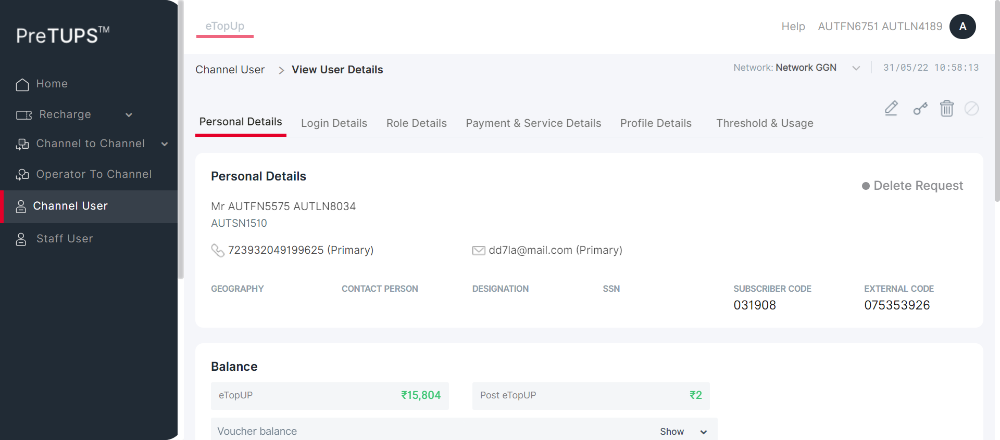 -
PREVAMPVCU1: To verify that Channel User is able to View Channel User for Retailer with MSISDN successfully by Dealer.May 31, 2022 10:58:14 AM 0h 0m 4s+345ms skipPre-Requisite
Status Timestamp Details info_outline 10:58:14 AM Category Code for Dealer: SE info_outline 10:58:14 AM Entered webInterface(Dealer) info_outline 10:58:14 AM webInterface() :: select query: Select WEB_INTERFACE_ALLOWED from categories where category_name= ? info_outline 10:58:14 AM Database Returns: WEB_INTERFACE_ALLOWED (Y) info_outline 10:58:14 AM Exited webInterface() info_outline 10:58:14 AM Entered PerformViewChannelUserByMSISDN(Dealer, Retailer, 726142813546886, 2468, Super Distributor, 5, Agent) info_outline 10:58:14 AM Login ID Found as: AUT_19995 info_outline 10:58:14 AM Password Found as: com@2468 info_outline 10:58:14 AM LOGINID : AUT_19995 info_outline 10:58:14 AM LoginID found as: AUT_19995 info_outline 10:58:14 AM Password found as: com@2468 info_outline 10:58:15 AM Username found as: AUTFN6751 AUTLN4189 info_outline 10:58:15 AM Trying to select Language info_outline 10:58:16 AM Language selected successfully as: English info_outline 10:58:16 AM Trying to enter Login ID info_outline 10:58:16 AM Login ID entered successfully as: AUT_19995 info_outline 10:58:16 AM Trying to enter Password info_outline 10:58:16 AM Password entered successfully as: com@2468 info_outline 10:58:16 AM Trying to click Login Button info_outline 10:58:16 AM Login button clicked successfully info_outline 10:58:16 AM Error Message Found on Login Screen: info_outline 10:58:16 AM Waiting for spinner info_outline 10:58:16 AM Waiting for spinner to stop info_outline 10:58:18 AM Spinner stopped redo 10:58:18 AM View Channel User cannot be performed by Dealer for Agent [ For Parent Agent ] -
PREVAMPVCU1: To verify that Channel User is able to View Channel User for Retailer with MSISDN successfully by Agent.May 31, 2022 10:58:18 AM 0h 0m 30s+709ms failPre-Requisite
Status Timestamp Details info_outline 10:58:18 AM Category Code for Agent: AG info_outline 10:58:19 AM Entered webInterface(Agent) info_outline 10:58:19 AM webInterface() :: select query: Select WEB_INTERFACE_ALLOWED from categories where category_name= ? info_outline 10:58:19 AM Database Returns: WEB_INTERFACE_ALLOWED (Y) info_outline 10:58:19 AM Exited webInterface() info_outline 10:58:19 AM Entered PerformViewChannelUserByMSISDN(Agent, Retailer, 726142813546886, 1357, Super Distributor, 5, Agent) info_outline 10:58:19 AM Login ID Found as: AUT_08837 info_outline 10:58:19 AM Password Found as: com@2468 info_outline 10:58:19 AM LOGINID : AUT_08837 info_outline 10:58:19 AM LoginID found as: AUT_08837 info_outline 10:58:19 AM Password found as: com@2468 info_outline 10:58:19 AM Username found as: AUTFN7086 AUTLN1035 info_outline 10:58:19 AM Trying to select Language info_outline 10:58:20 AM Language selected successfully as: English info_outline 10:58:20 AM Trying to enter Login ID info_outline 10:58:20 AM Login ID entered successfully as: AUT_08837 info_outline 10:58:20 AM Trying to enter Password info_outline 10:58:20 AM Password entered successfully as: com@2468 info_outline 10:58:20 AM Trying to click Login Button info_outline 10:58:20 AM Login button clicked successfully info_outline 10:58:20 AM Error Message Found on Login Screen: info_outline 10:58:20 AM Waiting for spinner info_outline 10:58:20 AM Waiting for spinner to stop info_outline 10:58:22 AM Spinner stopped info_outline 10:58:22 AM Trying clicking Channel User Heading.. info_outline 10:58:22 AM User clicked Channel User Heading. info_outline 10:58:22 AM Waiting for spinner info_outline 10:58:22 AM Waiting for spinner to stop info_outline 10:58:23 AM Spinner stopped info_outline 10:58:23 AM Trying to enter search by field Of Child User.. info_outline 10:58:23 AM Field entered :726142813546886 info_outline 10:58:23 AM Trying to click on the User Name of the Child User.. info_outline 10:58:23 AM Clicked on the User Name of the Child User. info_outline 10:58:23 AM Waiting for spinner info_outline 10:58:23 AM Waiting for spinner to stop info_outline 10:58:25 AM Spinner stopped info_outline 10:58:25 AM Trying to get the UserName info_outline 10:58:25 AM Fetched User Name of Child User :Mr AUTFN4270 AUTLN3932 info_outline 10:58:25 AM Fetched User Name :AUTFN4270 AUTLN3932 info_outline 10:58:25 AM Trying to get the MSISDN info_outline 10:58:25 AM Fetched MSISDN of Child User :726142813546886 (Primary) info_outline 10:58:25 AM Fetched MSISDN :726142813546886 info_outline 10:58:25 AM Trying to get the Geography info_outline 10:58:25 AM Fetched Geography of Child User : info_outline 10:58:25 AM Trying to get the External Code info_outline 10:58:25 AM Fetched External Code of Child User :391446077 info_outline 10:58:25 AM Trying to get the Channel User Domain info_outline 10:58:25 AM Fetched Domain of Child User :Distributor info_outline 10:58:25 AM Trying to get the Channel User Category info_outline 10:58:25 AM Fetched Category of Child User :Retailer info_outline 10:58:25 AM Trying to get the Channel User's Parent Category info_outline 10:58:25 AM Fetched Parent Category of Child User :Agent info_outline 10:58:25 AM User Name fetched from DataProvider :AUTFN4270 AUTLN3932 info_outline 10:58:25 AM MSISDN fetched from DataProvider :726142813546886 info_outline 10:58:25 AM Geography fetched from DataProvider :AUTNelnh info_outline 10:58:25 AM External Code fetched from DataProvider :391446077 info_outline 10:58:25 AM Domain fetched from DataProvider :Distributor info_outline 10:58:25 AM Category fetched from DataProvider :Retailer info_outline 10:58:25 AM Parent Category fetched from DataProvider :Agent info_outline 10:58:25 AM View Channel User is not successful with expected details in the Personal Details Tab cancel 10:58:25 AM View Channel User is not successful with expected details in the Personal Details Details Tab error 10:58:46 AM Error while getting SSH Server Instance : com.jcraft.jsch.JSchException: java.net.ConnectException: Connection timed out: connect cancel 10:58:46 AM Catalina Log
info_outline 10:58:47 AM 
low_priority 10:58:47 AM java.lang.NullPointerException
low_priority 10:58:47 AM java.lang.NullPointerException
low_priority 10:58:47 AM java.lang.NullPointerException
low_priority 10:58:48 AM java.lang.NullPointerException
low_priority 10:58:48 AM java.lang.NullPointerException
low_priority 10:58:48 AM java.lang.NullPointerException
info_outline 10:58:49 AM Entered :: getSystemPreference(TRF_RULE_USER_LEVEL_ALLOW) info_outline 10:58:49 AM Query Repository Returns: DEFAULT_VALUE (true) -
PREVAMPVCU2: To verify that Channel User is able to View Channel User for Dealer with LoginID successfully by Super Distributor.May 31, 2022 10:58:49 AM 0h 0m 28s+686ms failPre-Requisite
Status Timestamp Details info_outline 10:58:49 AM Category Code for Super Distributor: DIST info_outline 10:58:49 AM Entered webInterface(Super Distributor) info_outline 10:58:49 AM webInterface() :: select query: Select WEB_INTERFACE_ALLOWED from categories where category_name= ? info_outline 10:58:49 AM Database Returns: WEB_INTERFACE_ALLOWED (Y) info_outline 10:58:49 AM Exited webInterface() info_outline 10:58:49 AM Entered PerformViewChannelUserByLoginID(Super Distributor, Dealer, 724699085750159, 1357, Root, 2) info_outline 10:58:50 AM LoginID found as: AUT_48675 info_outline 10:58:50 AM Password found as: com@2468 info_outline 10:58:50 AM Username found as: AUTFN1393 AUTLN2379 info_outline 10:58:50 AM Trying to select Language info_outline 10:58:51 AM Language selected successfully as: English info_outline 10:58:51 AM Trying to enter Login ID info_outline 10:58:51 AM Login ID entered successfully as: AUT_48675 info_outline 10:58:51 AM Trying to enter Password info_outline 10:58:51 AM Password entered successfully as: com@2468 info_outline 10:58:51 AM Trying to click Login Button info_outline 10:58:51 AM Login button clicked successfully info_outline 10:58:51 AM Error Message Found on Login Screen: info_outline 10:58:52 AM Waiting for spinner info_outline 10:58:52 AM Waiting for spinner to stop info_outline 10:58:53 AM Spinner stopped info_outline 10:58:53 AM Trying clicking Channel User Heading.. info_outline 10:58:53 AM User clicked Channel User Heading. info_outline 10:58:53 AM Waiting for spinner info_outline 10:58:54 AM Waiting for spinner to stop info_outline 10:58:54 AM Spinner stopped info_outline 10:58:54 AM Trying to enter search by field Of Child User.. info_outline 10:58:55 AM Field entered :AUT_19995 info_outline 10:58:55 AM Trying to click on the User Name of the Child User.. info_outline 10:58:55 AM Clicked on the User Name of the Child User. info_outline 10:58:55 AM Waiting for spinner info_outline 10:58:55 AM Waiting for spinner to stop info_outline 10:58:56 AM Spinner stopped info_outline 10:58:56 AM Trying to get the UserName info_outline 10:58:56 AM Fetched User Name of Child User :Mr AUTFN6751 AUTLN4189 info_outline 10:58:56 AM Fetched User Name :AUTFN6751 AUTLN4189 info_outline 10:58:56 AM Trying to get the MSISDN info_outline 10:58:56 AM Fetched MSISDN of Child User :724699085750159 (Primary) info_outline 10:58:56 AM Fetched MSISDN :724699085750159 info_outline 10:58:56 AM Trying to get the Geography info_outline 10:58:56 AM Fetched Geography of Child User : info_outline 10:58:56 AM Trying to get the External Code info_outline 10:58:56 AM Fetched External Code of Child User :516477322 info_outline 10:58:56 AM Trying to get the Channel User Domain info_outline 10:58:56 AM Fetched Domain of Child User :Distributor info_outline 10:58:56 AM Trying to get the Channel User Category info_outline 10:58:56 AM Fetched Category of Child User :Dealer info_outline 10:58:56 AM Trying to get the Channel User's Parent Category info_outline 10:58:56 AM Fetched Parent Category of Child User :Super Distributor info_outline 10:58:56 AM User Name fetched from DataProvider :AUTFN6751 AUTLN4189 info_outline 10:58:56 AM MSISDN fetched from DataProvider :724699085750159 info_outline 10:58:56 AM Geography fetched from DataProvider :AUTNelnh info_outline 10:58:56 AM External Code fetched from DataProvider :516477322 info_outline 10:58:56 AM Domain fetched from DataProvider :Distributor info_outline 10:58:56 AM Category fetched from DataProvider :Dealer info_outline 10:58:56 AM Parent Category fetched from DataProvider :Super Distributor info_outline 10:58:56 AM View Channel User is not successful with expected details in the Personal Details Tab cancel 10:58:56 AM View Channel User is not successful with expected details in the Personal Details Details Tab error 10:59:17 AM Error while getting SSH Server Instance : com.jcraft.jsch.JSchException: java.net.ConnectException: Connection timed out: connect cancel 10:59:17 AM Catalina Log
info_outline 10:59:18 AM -
PREVAMPVCU2: To verify that Channel User is able to View Channel User for Agent with LoginID successfully by Super Distributor.May 31, 2022 10:59:18 AM 0h 0m 28s+666ms failPre-Requisite
Status Timestamp Details info_outline 10:59:18 AM Category Code for Super Distributor: DIST info_outline 10:59:18 AM Entered webInterface(Super Distributor) info_outline 10:59:18 AM webInterface() :: select query: Select WEB_INTERFACE_ALLOWED from categories where category_name= ? info_outline 10:59:18 AM Database Returns: WEB_INTERFACE_ALLOWED (Y) info_outline 10:59:18 AM Exited webInterface() info_outline 10:59:18 AM Entered PerformViewChannelUserByLoginID(Super Distributor, Agent, 728916899742500, 1357, Root, 3) info_outline 10:59:18 AM LoginID found as: AUT_48675 info_outline 10:59:18 AM Password found as: com@2468 info_outline 10:59:18 AM Username found as: AUTFN1393 AUTLN2379 info_outline 10:59:19 AM Trying to select Language info_outline 10:59:20 AM Language selected successfully as: English info_outline 10:59:20 AM Trying to enter Login ID info_outline 10:59:20 AM Login ID entered successfully as: AUT_48675 info_outline 10:59:20 AM Trying to enter Password info_outline 10:59:20 AM Password entered successfully as: com@2468 info_outline 10:59:20 AM Trying to click Login Button info_outline 10:59:20 AM Login button clicked successfully info_outline 10:59:20 AM Error Message Found on Login Screen: info_outline 10:59:20 AM Waiting for spinner info_outline 10:59:21 AM Waiting for spinner to stop info_outline 10:59:22 AM Spinner stopped info_outline 10:59:22 AM Trying clicking Channel User Heading.. info_outline 10:59:22 AM User clicked Channel User Heading. info_outline 10:59:22 AM Waiting for spinner info_outline 10:59:23 AM Waiting for spinner to stop info_outline 10:59:23 AM Spinner stopped info_outline 10:59:23 AM Trying to enter search by field Of Child User.. info_outline 10:59:23 AM Field entered :AUT_08837 info_outline 10:59:23 AM Trying to click on the User Name of the Child User.. info_outline 10:59:23 AM Clicked on the User Name of the Child User. info_outline 10:59:23 AM Waiting for spinner info_outline 10:59:24 AM Waiting for spinner to stop info_outline 10:59:25 AM Spinner stopped info_outline 10:59:25 AM Trying to get the UserName info_outline 10:59:25 AM Fetched User Name of Child User :Mr AUTFN7086 AUTLN1035 info_outline 10:59:25 AM Fetched User Name :AUTFN7086 AUTLN1035 info_outline 10:59:25 AM Trying to get the MSISDN info_outline 10:59:25 AM Fetched MSISDN of Child User :728916899742500 (Primary) info_outline 10:59:25 AM Fetched MSISDN :728916899742500 info_outline 10:59:25 AM Trying to get the Geography info_outline 10:59:25 AM Fetched Geography of Child User : info_outline 10:59:25 AM Trying to get the External Code info_outline 10:59:25 AM Fetched External Code of Child User :038641471 info_outline 10:59:25 AM Trying to get the Channel User Domain info_outline 10:59:25 AM Fetched Domain of Child User :Distributor info_outline 10:59:25 AM Trying to get the Channel User Category info_outline 10:59:25 AM Fetched Category of Child User :Agent info_outline 10:59:25 AM Trying to get the Channel User's Parent Category info_outline 10:59:25 AM Fetched Parent Category of Child User :Super Distributor info_outline 10:59:25 AM User Name fetched from DataProvider :AUTFN7086 AUTLN1035 info_outline 10:59:25 AM MSISDN fetched from DataProvider :728916899742500 info_outline 10:59:25 AM Geography fetched from DataProvider :AUTNelnh info_outline 10:59:25 AM External Code fetched from DataProvider :038641471 info_outline 10:59:25 AM Domain fetched from DataProvider :Distributor info_outline 10:59:25 AM Category fetched from DataProvider :Agent info_outline 10:59:25 AM Parent Category fetched from DataProvider :Super Distributor info_outline 10:59:25 AM View Channel User is not successful with expected details in the Personal Details Tab cancel 10:59:25 AM View Channel User is not successful with expected details in the Personal Details Details Tab error 10:59:46 AM Error while getting SSH Server Instance : com.jcraft.jsch.JSchException: java.net.ConnectException: Connection timed out: connect cancel 10:59:46 AM Catalina Log
info_outline 10:59:47 AM 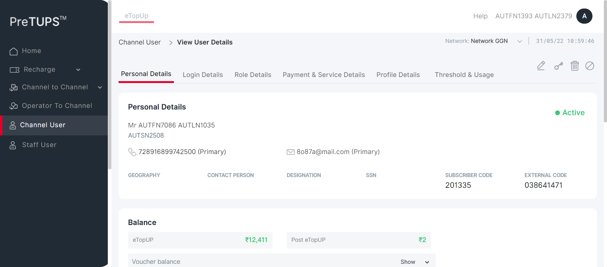 -
PREVAMPVCU2: To verify that Channel User is able to View Channel User for Agent with LoginID successfully by Super Distributor.May 31, 2022 10:59:47 AM 0h 0m 5s+3ms skipPre-Requisite
Status Timestamp Details info_outline 10:59:47 AM Category Code for Super Distributor: DIST info_outline 10:59:47 AM Entered webInterface(Super Distributor) info_outline 10:59:47 AM webInterface() :: select query: Select WEB_INTERFACE_ALLOWED from categories where category_name= ? info_outline 10:59:47 AM Database Returns: WEB_INTERFACE_ALLOWED (Y) info_outline 10:59:47 AM Exited webInterface() info_outline 10:59:47 AM Entered PerformViewChannelUserByLoginID(Super Distributor, Agent, 723932049199625, 1357, Root, 4) info_outline 10:59:47 AM LoginID found as: AUT_48675 info_outline 10:59:47 AM Password found as: com@2468 info_outline 10:59:47 AM Username found as: AUTFN1393 AUTLN2379 info_outline 10:59:48 AM Trying to select Language info_outline 10:59:48 AM Language selected successfully as: English info_outline 10:59:48 AM Trying to enter Login ID info_outline 10:59:49 AM Login ID entered successfully as: AUT_48675 info_outline 10:59:49 AM Trying to enter Password info_outline 10:59:49 AM Password entered successfully as: com@2468 info_outline 10:59:49 AM Trying to click Login Button info_outline 10:59:49 AM Login button clicked successfully info_outline 10:59:49 AM Error Message Found on Login Screen: info_outline 10:59:49 AM Waiting for spinner info_outline 10:59:49 AM Waiting for spinner to stop info_outline 10:59:51 AM Spinner stopped info_outline 10:59:51 AM Trying clicking Channel User Heading.. info_outline 10:59:51 AM User clicked Channel User Heading. info_outline 10:59:51 AM Waiting for spinner info_outline 10:59:51 AM Waiting for spinner to stop info_outline 10:59:52 AM Spinner stopped redo 10:59:52 AM View Channel User cannot be performed by Super Distributor for Agent [ For Parent Dealer ] -
PREVAMPVCU2: To verify that Channel User is able to View Channel User for Retailer with LoginID successfully by Super Distributor.May 31, 2022 10:59:52 AM 0h 0m 4s+465ms skipPre-Requisite
Status Timestamp Details info_outline 10:59:52 AM Category Code for Super Distributor: DIST info_outline 10:59:52 AM Entered webInterface(Super Distributor) info_outline 10:59:52 AM webInterface() :: select query: Select WEB_INTERFACE_ALLOWED from categories where category_name= ? info_outline 10:59:52 AM Database Returns: WEB_INTERFACE_ALLOWED (Y) info_outline 10:59:52 AM Exited webInterface() info_outline 10:59:52 AM Entered PerformViewChannelUserByLoginID(Super Distributor, Retailer, 726142813546886, 1357, Root, 5) info_outline 10:59:52 AM LoginID found as: AUT_48675 info_outline 10:59:52 AM Password found as: com@2468 info_outline 10:59:52 AM Username found as: AUTFN1393 AUTLN2379 info_outline 10:59:53 AM Trying to select Language info_outline 10:59:53 AM Language selected successfully as: English info_outline 10:59:53 AM Trying to enter Login ID info_outline 10:59:53 AM Login ID entered successfully as: AUT_48675 info_outline 10:59:53 AM Trying to enter Password info_outline 10:59:54 AM Password entered successfully as: com@2468 info_outline 10:59:54 AM Trying to click Login Button info_outline 10:59:54 AM Login button clicked successfully info_outline 10:59:54 AM Error Message Found on Login Screen: info_outline 10:59:54 AM Waiting for spinner info_outline 10:59:54 AM Waiting for spinner to stop info_outline 10:59:56 AM Spinner stopped info_outline 10:59:56 AM Trying clicking Channel User Heading.. info_outline 10:59:56 AM User clicked Channel User Heading. info_outline 10:59:56 AM Waiting for spinner info_outline 10:59:56 AM Waiting for spinner to stop info_outline 10:59:56 AM Spinner stopped redo 10:59:56 AM View Channel User cannot be performed by Super Distributor for Agent [ For Parent Agent ] -
PREVAMPVCU2: To verify that Channel User is able to View Channel User for Agent with LoginID successfully by Dealer.May 31, 2022 10:59:57 AM 0h 0m 5s+61ms skipPre-Requisite
Status Timestamp Details info_outline 10:59:57 AM Category Code for Dealer: SE info_outline 10:59:57 AM Entered webInterface(Dealer) info_outline 10:59:57 AM webInterface() :: select query: Select WEB_INTERFACE_ALLOWED from categories where category_name= ? info_outline 10:59:57 AM Database Returns: WEB_INTERFACE_ALLOWED (Y) info_outline 10:59:57 AM Exited webInterface() info_outline 10:59:57 AM Entered PerformViewChannelUserByLoginID(Dealer, Agent, 728916899742500, 2468, Super Distributor, 3) info_outline 10:59:57 AM LoginID found as: AUT_19995 info_outline 10:59:57 AM Password found as: com@2468 info_outline 10:59:57 AM Username found as: AUTFN6751 AUTLN4189 info_outline 10:59:57 AM Trying to select Language info_outline 10:59:58 AM Language selected successfully as: English info_outline 10:59:58 AM Trying to enter Login ID info_outline 10:59:58 AM Login ID entered successfully as: AUT_19995 info_outline 10:59:58 AM Trying to enter Password info_outline 10:59:58 AM Password entered successfully as: com@2468 info_outline 10:59:58 AM Trying to click Login Button info_outline 10:59:58 AM Login button clicked successfully info_outline 10:59:58 AM Error Message Found on Login Screen: info_outline 10:59:58 AM Waiting for spinner info_outline 10:59:59 AM Waiting for spinner to stop info_outline 11:00:00 AM Spinner stopped info_outline 11:00:00 AM Trying clicking Channel User Heading.. info_outline 11:00:01 AM User clicked Channel User Heading. info_outline 11:00:01 AM Waiting for spinner info_outline 11:00:01 AM Waiting for spinner to stop info_outline 11:00:02 AM Spinner stopped redo 11:00:02 AM View Channel User cannot be performed by Dealer for Agent [ For Parent Super Distributor ] -
PREVAMPVCU2: To verify that Channel User is able to View Channel User for Agent with LoginID successfully by Dealer.May 31, 2022 11:00:02 AM 0h 0m 28s+7ms failPre-Requisite
Status Timestamp Details info_outline 11:00:02 AM Category Code for Dealer: SE info_outline 11:00:02 AM Entered webInterface(Dealer) info_outline 11:00:02 AM webInterface() :: select query: Select WEB_INTERFACE_ALLOWED from categories where category_name= ? info_outline 11:00:02 AM Database Returns: WEB_INTERFACE_ALLOWED (Y) info_outline 11:00:02 AM Exited webInterface() info_outline 11:00:02 AM Entered PerformViewChannelUserByLoginID(Dealer, Agent, 723932049199625, 2468, Super Distributor, 4) info_outline 11:00:02 AM LoginID found as: AUT_19995 info_outline 11:00:02 AM Password found as: com@2468 info_outline 11:00:02 AM Username found as: AUTFN6751 AUTLN4189 info_outline 11:00:03 AM Trying to select Language info_outline 11:00:03 AM Language selected successfully as: English info_outline 11:00:03 AM Trying to enter Login ID info_outline 11:00:03 AM Login ID entered successfully as: AUT_19995 info_outline 11:00:03 AM Trying to enter Password info_outline 11:00:03 AM Password entered successfully as: com@2468 info_outline 11:00:03 AM Trying to click Login Button info_outline 11:00:04 AM Login button clicked successfully info_outline 11:00:04 AM Error Message Found on Login Screen: info_outline 11:00:04 AM Waiting for spinner info_outline 11:00:04 AM Waiting for spinner to stop info_outline 11:00:05 AM Spinner stopped info_outline 11:00:05 AM Trying clicking Channel User Heading.. info_outline 11:00:06 AM User clicked Channel User Heading. info_outline 11:00:06 AM Waiting for spinner info_outline 11:00:06 AM Waiting for spinner to stop info_outline 11:00:06 AM Spinner stopped info_outline 11:00:06 AM Trying to enter search by field Of Child User.. info_outline 11:00:07 AM Field entered :AUT_87570 info_outline 11:00:07 AM Trying to click on the User Name of the Child User.. info_outline 11:00:07 AM Clicked on the User Name of the Child User. info_outline 11:00:07 AM Waiting for spinner info_outline 11:00:07 AM Waiting for spinner to stop info_outline 11:00:08 AM Spinner stopped info_outline 11:00:08 AM Trying to get the UserName info_outline 11:00:08 AM Fetched User Name of Child User :Mr AUTFN5575 AUTLN8034 info_outline 11:00:08 AM Fetched User Name :AUTFN5575 AUTLN8034 info_outline 11:00:08 AM Trying to get the MSISDN info_outline 11:00:08 AM Fetched MSISDN of Child User :723932049199625 (Primary) info_outline 11:00:08 AM Fetched MSISDN :723932049199625 info_outline 11:00:08 AM Trying to get the Geography info_outline 11:00:08 AM Fetched Geography of Child User : info_outline 11:00:08 AM Trying to get the External Code info_outline 11:00:08 AM Fetched External Code of Child User :075353926 info_outline 11:00:08 AM Trying to get the Channel User Domain info_outline 11:00:08 AM Fetched Domain of Child User :Distributor info_outline 11:00:08 AM Trying to get the Channel User Category info_outline 11:00:08 AM Fetched Category of Child User :Agent info_outline 11:00:08 AM Trying to get the Channel User's Parent Category info_outline 11:00:08 AM Fetched Parent Category of Child User :Dealer info_outline 11:00:08 AM User Name fetched from DataProvider :AUTFN5575 AUTLN8034 info_outline 11:00:08 AM MSISDN fetched from DataProvider :723932049199625 info_outline 11:00:08 AM Geography fetched from DataProvider :AUTNelnh info_outline 11:00:08 AM External Code fetched from DataProvider :075353926 info_outline 11:00:08 AM Domain fetched from DataProvider :Distributor info_outline 11:00:08 AM Category fetched from DataProvider :Agent info_outline 11:00:08 AM Parent Category fetched from DataProvider :Dealer info_outline 11:00:08 AM View Channel User is not successful with expected details in the Personal Details Tab cancel 11:00:08 AM View Channel User is not successful with expected details in the Personal Details Details Tab error 11:00:30 AM Error while getting SSH Server Instance : com.jcraft.jsch.JSchException: java.net.ConnectException: Connection timed out: connect cancel 11:00:30 AM Catalina Log
info_outline 11:00:30 AM 
-
PREVAMPVCU2: To verify that Channel User is able to View Channel User for Retailer with LoginID successfully by Dealer.May 31, 2022 11:00:30 AM 0h 0m 4s+520ms skipPre-Requisite
Status Timestamp Details info_outline 11:00:30 AM Category Code for Dealer: SE info_outline 11:00:30 AM Entered webInterface(Dealer) info_outline 11:00:30 AM webInterface() :: select query: Select WEB_INTERFACE_ALLOWED from categories where category_name= ? info_outline 11:00:30 AM Database Returns: WEB_INTERFACE_ALLOWED (Y) info_outline 11:00:30 AM Exited webInterface() info_outline 11:00:30 AM Entered PerformViewChannelUserByLoginID(Dealer, Retailer, 726142813546886, 2468, Super Distributor, 5) info_outline 11:00:30 AM LoginID found as: AUT_19995 info_outline 11:00:30 AM Password found as: com@2468 info_outline 11:00:30 AM Username found as: AUTFN6751 AUTLN4189 info_outline 11:00:31 AM Trying to select Language info_outline 11:00:31 AM Language selected successfully as: English info_outline 11:00:31 AM Trying to enter Login ID info_outline 11:00:31 AM Login ID entered successfully as: AUT_19995 info_outline 11:00:31 AM Trying to enter Password info_outline 11:00:32 AM Password entered successfully as: com@2468 info_outline 11:00:32 AM Trying to click Login Button info_outline 11:00:32 AM Login button clicked successfully info_outline 11:00:32 AM Error Message Found on Login Screen: info_outline 11:00:32 AM Waiting for spinner info_outline 11:00:32 AM Waiting for spinner to stop info_outline 11:00:34 AM Spinner stopped info_outline 11:00:34 AM Trying clicking Channel User Heading.. info_outline 11:00:34 AM User clicked Channel User Heading. info_outline 11:00:34 AM Waiting for spinner info_outline 11:00:34 AM Waiting for spinner to stop info_outline 11:00:34 AM Spinner stopped redo 11:00:34 AM View Channel User cannot be performed by Dealer for Agent [ For Parent Agent ] -
PREVAMPVCU2: To verify that Channel User is able to View Channel User for Retailer with LoginID successfully by Agent.May 31, 2022 11:00:35 AM 0h 1m 29s+163ms failPre-Requisite
Status Timestamp Details info_outline 11:00:35 AM Category Code for Agent: AG info_outline 11:00:35 AM Entered webInterface(Agent) info_outline 11:00:35 AM webInterface() :: select query: Select WEB_INTERFACE_ALLOWED from categories where category_name= ? info_outline 11:00:35 AM Database Returns: WEB_INTERFACE_ALLOWED (Y) info_outline 11:00:35 AM Exited webInterface() info_outline 11:00:35 AM Entered PerformViewChannelUserByLoginID(Agent, Retailer, 726142813546886, 1357, Super Distributor, 5) info_outline 11:00:35 AM LoginID found as: AUT_08837 info_outline 11:00:35 AM Password found as: com@2468 info_outline 11:00:35 AM Username found as: AUTFN7086 AUTLN1035 info_outline 11:00:36 AM Trying to select Language info_outline 11:00:37 AM Trying to enter Login ID info_outline 11:00:37 AM Login ID entered successfully as: AUT_08837 info_outline 11:00:37 AM Trying to enter Password info_outline 11:00:37 AM Password entered successfully as: com@2468 info_outline 11:00:37 AM Trying to click Login Button info_outline 11:00:39 AM Unable to click on Login button info_outline 11:00:39 AM Error Message Found on Login Screen: info_outline 11:00:39 AM Waiting for spinner info_outline 11:01:09 AM Element not found info_outline 11:01:09 AM Spinner stopped info_outline 11:01:09 AM Trying clicking Channel User Heading.. cancel 11:01:39 AM org.openqa.selenium.TimeoutException: Expected condition failed: waiting for visibility of element located by By.xpath: //a[@id='channelUser'] (tried for 30 second(s) with 500 milliseconds interval) at org.openqa.selenium.support.ui.WebDriverWait.timeoutException(WebDriverWait.java:82) at org.openqa.selenium.support.ui.FluentWait.until(FluentWait.java:272) at angular.pageobjects.ViewChannelUser.ViewChannelUser.clickChannelUserHeading(ViewChannelUser.java:81) at angular.feature.ViewChannelUserRevamp.PerformViewChannelUserByLoginID(ViewChannelUserRevamp.java:168) at angular.testscripts.prereuisitesangular.PreRequisite_ViewChannelUser_Revamp.TC_02_Test_PerformViewChannelUserByLoginID(PreRequisite_ViewChannelUser_Revamp.java:62) at sun.reflect.NativeMethodAccessorImpl.invoke0(Native Method) at sun.reflect.NativeMethodAccessorImpl.invoke(Unknown Source) at sun.reflect.DelegatingMethodAccessorImpl.invoke(Unknown Source) at java.lang.reflect.Method.invoke(Unknown Source) at org.testng.internal.MethodInvocationHelper.invokeMethod(MethodInvocationHelper.java:124) at org.testng.internal.Invoker.invokeMethod(Invoker.java:580) at org.testng.internal.Invoker.invokeTestMethod(Invoker.java:716) at org.testng.internal.Invoker.invokeTestMethods(Invoker.java:988) at org.testng.internal.TestMethodWorker.invokeTestMethods(TestMethodWorker.java:125) at org.testng.internal.TestMethodWorker.run(TestMethodWorker.java:109) at org.testng.TestRunner.privateRun(TestRunner.java:648) at org.testng.TestRunner.run(TestRunner.java:505) at org.testng.SuiteRunner.runTest(SuiteRunner.java:455) at org.testng.SuiteRunner.runSequentially(SuiteRunner.java:450) at org.testng.SuiteRunner.privateRun(SuiteRunner.java:415) at org.testng.SuiteRunner.run(SuiteRunner.java:364) at org.testng.SuiteRunnerWorker.runSuite(SuiteRunnerWorker.java:52) at org.testng.SuiteRunnerWorker.run(SuiteRunnerWorker.java:84) at org.testng.TestNG.runSuitesSequentially(TestNG.java:1208) at org.testng.TestNG.runSuitesLocally(TestNG.java:1137) at org.testng.TestNG.runSuites(TestNG.java:1049) at org.testng.TestNG.run(TestNG.java:1017) at org.testng.remote.AbstractRemoteTestNG.run(AbstractRemoteTestNG.java:115) at org.testng.remote.RemoteTestNG.initAndRun(RemoteTestNG.java:251) at org.testng.remote.RemoteTestNG.main(RemoteTestNG.java:77) Caused by: org.openqa.selenium.NoSuchElementException: Cannot locate an element using By.xpath: //a[@id='channelUser'] For documentation on this error, please visit: http://seleniumhq.org/exceptions/no_such_element.html Build info: version: '3.10.0', revision: '176b4a9', time: '2018-03-02T19:03:16.397Z' System info: host: 'MCKL-20005142', ip: '192.168.1.38', os.name: 'Windows 10', os.arch: 'amd64', os.version: '10.0', java.version: '1.8.0_291' Driver info: driver.version: unknown at org.openqa.selenium.support.ui.ExpectedConditions.lambda$findElement$0(ExpectedConditions.java:896) at java.util.Optional.orElseThrow(Unknown Source) at org.openqa.selenium.support.ui.ExpectedConditions.findElement(ExpectedConditions.java:895) at org.openqa.selenium.support.ui.ExpectedConditions.access$000(ExpectedConditions.java:44) at org.openqa.selenium.support.ui.ExpectedConditions$7.apply(ExpectedConditions.java:206) at org.openqa.selenium.support.ui.ExpectedConditions$7.apply(ExpectedConditions.java:202) at org.openqa.selenium.support.ui.FluentWait.until(FluentWait.java:249) ... 28 more
error 11:02:00 AM Error while getting SSH Server Instance : com.jcraft.jsch.JSchException: java.net.ConnectException: Connection timed out: connect cancel 11:02:00 AM Catalina Log
low_priority 11:02:02 AM java.lang.NullPointerException
low_priority 11:02:02 AM java.lang.NullPointerException
low_priority 11:02:02 AM java.lang.NullPointerException
low_priority 11:02:02 AM java.lang.NullPointerException
low_priority 11:02:03 AM java.lang.NullPointerException
low_priority 11:02:03 AM java.lang.NullPointerException
info_outline 11:02:04 AM Entered :: getSystemPreference(TRF_RULE_USER_LEVEL_ALLOW) info_outline 11:02:04 AM Query Repository Returns: DEFAULT_VALUE (true) -
PREVAMPVCU3: To verify that Channel User is able to View Channel User for Dealer with User Name successfully by Super Distributor.May 31, 2022 11:02:04 AM 0h 0m 28s+925ms failPre-Requisite
Status Timestamp Details info_outline 11:02:04 AM Category Code for Super Distributor: DIST info_outline 11:02:04 AM Entered webInterface(Super Distributor) info_outline 11:02:04 AM webInterface() :: select query: Select WEB_INTERFACE_ALLOWED from categories where category_name= ? info_outline 11:02:04 AM Database Returns: WEB_INTERFACE_ALLOWED (Y) info_outline 11:02:04 AM Exited webInterface() info_outline 11:02:04 AM Entered PerformViewChannelUserByUserName(Super Distributor, Dealer, 724699085750159, 1357, Root, 2) info_outline 11:02:04 AM LoginID found as: AUT_48675 info_outline 11:02:04 AM Password found as: com@2468 info_outline 11:02:04 AM Username found as: AUTFN1393 AUTLN2379 info_outline 11:02:05 AM Trying to select Language info_outline 11:02:05 AM Language selected successfully as: English info_outline 11:02:05 AM Trying to enter Login ID info_outline 11:02:05 AM Login ID entered successfully as: AUT_48675 info_outline 11:02:05 AM Trying to enter Password info_outline 11:02:06 AM Password entered successfully as: com@2468 info_outline 11:02:06 AM Trying to click Login Button info_outline 11:02:06 AM Login button clicked successfully info_outline 11:02:06 AM Error Message Found on Login Screen: info_outline 11:02:06 AM Waiting for spinner info_outline 11:02:06 AM Waiting for spinner to stop info_outline 11:02:08 AM Spinner stopped info_outline 11:02:08 AM Fetched User Name: AUTFN6751 AUTLN4189 info_outline 11:02:08 AM Trying clicking Channel User Heading.. info_outline 11:02:08 AM User clicked Channel User Heading. info_outline 11:02:08 AM Waiting for spinner info_outline 11:02:08 AM Waiting for spinner to stop info_outline 11:02:09 AM Spinner stopped info_outline 11:02:09 AM Trying to enter search by field Of Child User.. info_outline 11:02:10 AM Field entered :AUTFN6751 AUTLN4189 info_outline 11:02:10 AM Trying to click on the User Name of the Child User.. info_outline 11:02:10 AM Clicked on the User Name of the Child User:AUTFN6751 AUTLN4189 info_outline 11:02:10 AM Waiting for spinner info_outline 11:02:10 AM Waiting for spinner to stop info_outline 11:02:11 AM Spinner stopped info_outline 11:02:11 AM Trying to get the UserName info_outline 11:02:11 AM Fetched User Name of Child User :Mr AUTFN6751 AUTLN4189 info_outline 11:02:11 AM Fetched User Name :AUTFN6751 AUTLN4189 info_outline 11:02:11 AM Trying to get the MSISDN info_outline 11:02:11 AM Fetched MSISDN of Child User :724699085750159 (Primary) info_outline 11:02:11 AM Fetched MSISDN :724699085750159 info_outline 11:02:11 AM Trying to get the Geography info_outline 11:02:11 AM Fetched Geography of Child User : info_outline 11:02:11 AM Trying to get the External Code info_outline 11:02:11 AM Fetched External Code of Child User :516477322 info_outline 11:02:11 AM Trying to get the Channel User Domain info_outline 11:02:11 AM Fetched Domain of Child User :Distributor info_outline 11:02:11 AM Trying to get the Channel User Category info_outline 11:02:11 AM Fetched Category of Child User :Dealer info_outline 11:02:11 AM Trying to get the Channel User's Parent Category info_outline 11:02:11 AM Fetched Parent Category of Child User :Super Distributor info_outline 11:02:11 AM User Name fetched from DataProvider :AUTFN6751 AUTLN4189 info_outline 11:02:11 AM MSISDN fetched from DataProvider :724699085750159 info_outline 11:02:11 AM Geography fetched from DataProvider :AUTNelnh info_outline 11:02:11 AM External Code fetched from DataProvider :516477322 info_outline 11:02:11 AM Domain fetched from DataProvider :Distributor info_outline 11:02:11 AM Category fetched from DataProvider :Dealer info_outline 11:02:11 AM Parent Category fetched from DataProvider :Super Distributor info_outline 11:02:11 AM View Channel User is not successful with expected details in the Personal Details Tab cancel 11:02:11 AM View Channel User is not successful with expected details in the Personal Details Details Tab error 11:02:32 AM Error while getting SSH Server Instance : com.jcraft.jsch.JSchException: java.net.ConnectException: Connection timed out: connect cancel 11:02:32 AM Catalina Log
info_outline 11:02:33 AM -
PREVAMPVCU3: To verify that Channel User is able to View Channel User for Agent with User Name successfully by Super Distributor.May 31, 2022 11:02:33 AM 0h 0m 28s+989ms failPre-Requisite
Status Timestamp Details info_outline 11:02:33 AM Category Code for Super Distributor: DIST info_outline 11:02:33 AM Entered webInterface(Super Distributor) info_outline 11:02:33 AM webInterface() :: select query: Select WEB_INTERFACE_ALLOWED from categories where category_name= ? info_outline 11:02:33 AM Database Returns: WEB_INTERFACE_ALLOWED (Y) info_outline 11:02:33 AM Exited webInterface() info_outline 11:02:33 AM Entered PerformViewChannelUserByUserName(Super Distributor, Agent, 728916899742500, 1357, Root, 3) info_outline 11:02:33 AM LoginID found as: AUT_48675 info_outline 11:02:33 AM Password found as: com@2468 info_outline 11:02:33 AM Username found as: AUTFN1393 AUTLN2379 info_outline 11:02:34 AM Trying to select Language info_outline 11:02:34 AM Language selected successfully as: English info_outline 11:02:34 AM Trying to enter Login ID info_outline 11:02:34 AM Login ID entered successfully as: AUT_48675 info_outline 11:02:34 AM Trying to enter Password info_outline 11:02:35 AM Password entered successfully as: com@2468 info_outline 11:02:35 AM Trying to click Login Button info_outline 11:02:35 AM Login button clicked successfully info_outline 11:02:35 AM Error Message Found on Login Screen: info_outline 11:02:35 AM Waiting for spinner info_outline 11:02:35 AM Waiting for spinner to stop info_outline 11:02:37 AM Spinner stopped info_outline 11:02:37 AM Fetched User Name: AUTFN7086 AUTLN1035 info_outline 11:02:37 AM Trying clicking Channel User Heading.. info_outline 11:02:37 AM User clicked Channel User Heading. info_outline 11:02:37 AM Waiting for spinner info_outline 11:02:37 AM Waiting for spinner to stop info_outline 11:02:38 AM Spinner stopped info_outline 11:02:38 AM Trying to enter search by field Of Child User.. info_outline 11:02:39 AM Field entered :AUTFN7086 AUTLN1035 info_outline 11:02:39 AM Trying to click on the User Name of the Child User.. info_outline 11:02:39 AM Clicked on the User Name of the Child User:AUTFN7086 AUTLN1035 info_outline 11:02:39 AM Waiting for spinner info_outline 11:02:39 AM Waiting for spinner to stop info_outline 11:02:40 AM Spinner stopped info_outline 11:02:40 AM Trying to get the UserName info_outline 11:02:40 AM Fetched User Name of Child User :Mr AUTFN7086 AUTLN1035 info_outline 11:02:40 AM Fetched User Name :AUTFN7086 AUTLN1035 info_outline 11:02:40 AM Trying to get the MSISDN info_outline 11:02:40 AM Fetched MSISDN of Child User :728916899742500 (Primary) info_outline 11:02:40 AM Fetched MSISDN :728916899742500 info_outline 11:02:40 AM Trying to get the Geography info_outline 11:02:40 AM Fetched Geography of Child User : info_outline 11:02:40 AM Trying to get the External Code info_outline 11:02:40 AM Fetched External Code of Child User :038641471 info_outline 11:02:40 AM Trying to get the Channel User Domain info_outline 11:02:40 AM Fetched Domain of Child User :Distributor info_outline 11:02:40 AM Trying to get the Channel User Category info_outline 11:02:40 AM Fetched Category of Child User :Agent info_outline 11:02:40 AM Trying to get the Channel User's Parent Category info_outline 11:02:40 AM Fetched Parent Category of Child User :Super Distributor info_outline 11:02:40 AM User Name fetched from DataProvider :AUTFN7086 AUTLN1035 info_outline 11:02:40 AM MSISDN fetched from DataProvider :728916899742500 info_outline 11:02:40 AM Geography fetched from DataProvider :AUTNelnh info_outline 11:02:40 AM External Code fetched from DataProvider :038641471 info_outline 11:02:40 AM Domain fetched from DataProvider :Distributor info_outline 11:02:40 AM Category fetched from DataProvider :Agent info_outline 11:02:40 AM Parent Category fetched from DataProvider :Super Distributor info_outline 11:02:40 AM View Channel User is not successful with expected details in the Personal Details Tab cancel 11:02:40 AM View Channel User is not successful with expected details in the Personal Details Details Tab error 11:03:01 AM Error while getting SSH Server Instance : com.jcraft.jsch.JSchException: java.net.ConnectException: Connection timed out: connect cancel 11:03:01 AM Catalina Log
info_outline 11:03:02 AM -
PREVAMPVCU3: To verify that Channel User is able to View Channel User for Agent with User Name successfully by Super Distributor.May 31, 2022 11:03:02 AM 0h 0m 5s+191ms skipPre-Requisite
Status Timestamp Details info_outline 11:03:02 AM Category Code for Super Distributor: DIST info_outline 11:03:02 AM Entered webInterface(Super Distributor) info_outline 11:03:02 AM webInterface() :: select query: Select WEB_INTERFACE_ALLOWED from categories where category_name= ? info_outline 11:03:02 AM Database Returns: WEB_INTERFACE_ALLOWED (Y) info_outline 11:03:02 AM Exited webInterface() info_outline 11:03:02 AM Entered PerformViewChannelUserByUserName(Super Distributor, Agent, 723932049199625, 1357, Root, 4) info_outline 11:03:02 AM LoginID found as: AUT_48675 info_outline 11:03:02 AM Password found as: com@2468 info_outline 11:03:02 AM Username found as: AUTFN1393 AUTLN2379 info_outline 11:03:03 AM Trying to select Language info_outline 11:03:03 AM Language selected successfully as: English info_outline 11:03:03 AM Trying to enter Login ID info_outline 11:03:03 AM Login ID entered successfully as: AUT_48675 info_outline 11:03:03 AM Trying to enter Password info_outline 11:03:04 AM Password entered successfully as: com@2468 info_outline 11:03:04 AM Trying to click Login Button info_outline 11:03:04 AM Login button clicked successfully info_outline 11:03:04 AM Error Message Found on Login Screen: info_outline 11:03:04 AM Waiting for spinner info_outline 11:03:04 AM Waiting for spinner to stop info_outline 11:03:06 AM Spinner stopped info_outline 11:03:06 AM Fetched User Name: AUTFN5575 AUTLN8034 info_outline 11:03:06 AM Trying clicking Channel User Heading.. info_outline 11:03:06 AM User clicked Channel User Heading. info_outline 11:03:06 AM Waiting for spinner info_outline 11:03:06 AM Waiting for spinner to stop info_outline 11:03:07 AM Spinner stopped redo 11:03:07 AM View Channel User cannot be performed by Super Distributor for Agent [ For Parent Dealer ] -
PREVAMPVCU3: To verify that Channel User is able to View Channel User for Retailer with User Name successfully by Super Distributor.May 31, 2022 11:03:07 AM 0h 0m 4s+663ms skipPre-Requisite
Status Timestamp Details info_outline 11:03:07 AM Category Code for Super Distributor: DIST info_outline 11:03:07 AM Entered webInterface(Super Distributor) info_outline 11:03:07 AM webInterface() :: select query: Select WEB_INTERFACE_ALLOWED from categories where category_name= ? info_outline 11:03:07 AM Database Returns: WEB_INTERFACE_ALLOWED (Y) info_outline 11:03:07 AM Exited webInterface() info_outline 11:03:07 AM Entered PerformViewChannelUserByUserName(Super Distributor, Retailer, 726142813546886, 1357, Root, 5) info_outline 11:03:07 AM LoginID found as: AUT_48675 info_outline 11:03:07 AM Password found as: com@2468 info_outline 11:03:07 AM Username found as: AUTFN1393 AUTLN2379 info_outline 11:03:08 AM Trying to select Language info_outline 11:03:08 AM Language selected successfully as: English info_outline 11:03:08 AM Trying to enter Login ID info_outline 11:03:08 AM Login ID entered successfully as: AUT_48675 info_outline 11:03:08 AM Trying to enter Password info_outline 11:03:09 AM Password entered successfully as: com@2468 info_outline 11:03:09 AM Trying to click Login Button info_outline 11:03:09 AM Login button clicked successfully info_outline 11:03:09 AM Error Message Found on Login Screen: info_outline 11:03:09 AM Waiting for spinner info_outline 11:03:09 AM Waiting for spinner to stop info_outline 11:03:11 AM Spinner stopped info_outline 11:03:11 AM Fetched User Name: AUTFN4270 AUTLN3932 info_outline 11:03:11 AM Trying clicking Channel User Heading.. info_outline 11:03:11 AM User clicked Channel User Heading. info_outline 11:03:11 AM Waiting for spinner info_outline 11:03:11 AM Waiting for spinner to stop info_outline 11:03:12 AM Spinner stopped redo 11:03:12 AM View Channel User cannot be performed by Super Distributor for Agent [ For Parent Agent ] -
PREVAMPVCU3: To verify that Channel User is able to View Channel User for Agent with User Name successfully by Dealer.May 31, 2022 11:03:12 AM 0h 0m 4s+201ms skipPre-Requisite
Status Timestamp Details info_outline 11:03:12 AM Category Code for Dealer: SE info_outline 11:03:12 AM Entered webInterface(Dealer) info_outline 11:03:12 AM webInterface() :: select query: Select WEB_INTERFACE_ALLOWED from categories where category_name= ? info_outline 11:03:12 AM Database Returns: WEB_INTERFACE_ALLOWED (Y) info_outline 11:03:12 AM Exited webInterface() info_outline 11:03:12 AM Entered PerformViewChannelUserByUserName(Dealer, Agent, 728916899742500, 2468, Super Distributor, 3) info_outline 11:03:12 AM LoginID found as: AUT_19995 info_outline 11:03:12 AM Password found as: com@2468 info_outline 11:03:12 AM Username found as: AUTFN6751 AUTLN4189 info_outline 11:03:13 AM Trying to select Language info_outline 11:03:13 AM Language selected successfully as: English info_outline 11:03:13 AM Trying to enter Login ID info_outline 11:03:13 AM Login ID entered successfully as: AUT_19995 info_outline 11:03:13 AM Trying to enter Password info_outline 11:03:13 AM Password entered successfully as: com@2468 info_outline 11:03:13 AM Trying to click Login Button info_outline 11:03:14 AM Login button clicked successfully info_outline 11:03:14 AM Error Message Found on Login Screen: info_outline 11:03:14 AM Waiting for spinner info_outline 11:03:14 AM Waiting for spinner to stop info_outline 11:03:15 AM Spinner stopped info_outline 11:03:15 AM Fetched User Name: AUTFN7086 AUTLN1035 info_outline 11:03:15 AM Trying clicking Channel User Heading.. info_outline 11:03:16 AM User clicked Channel User Heading. info_outline 11:03:16 AM Waiting for spinner info_outline 11:03:16 AM Waiting for spinner to stop info_outline 11:03:16 AM Spinner stopped redo 11:03:16 AM View Channel User cannot be performed by Dealer for Agent [ For Parent Super Distributor ] -
PREVAMPVCU3: To verify that Channel User is able to View Channel User for Agent with User Name successfully by Dealer.May 31, 2022 11:03:16 AM 0h 0m 27s+428ms failPre-Requisite
Status Timestamp Details info_outline 11:03:16 AM Category Code for Dealer: SE info_outline 11:03:16 AM Entered webInterface(Dealer) info_outline 11:03:16 AM webInterface() :: select query: Select WEB_INTERFACE_ALLOWED from categories where category_name= ? info_outline 11:03:16 AM Database Returns: WEB_INTERFACE_ALLOWED (Y) info_outline 11:03:16 AM Exited webInterface() info_outline 11:03:16 AM Entered PerformViewChannelUserByUserName(Dealer, Agent, 723932049199625, 2468, Super Distributor, 4) info_outline 11:03:17 AM LoginID found as: AUT_19995 info_outline 11:03:17 AM Password found as: com@2468 info_outline 11:03:17 AM Username found as: AUTFN6751 AUTLN4189 info_outline 11:03:17 AM Trying to select Language info_outline 11:03:17 AM Language selected successfully as: English info_outline 11:03:17 AM Trying to enter Login ID info_outline 11:03:17 AM Login ID entered successfully as: AUT_19995 info_outline 11:03:17 AM Trying to enter Password info_outline 11:03:18 AM Password entered successfully as: com@2468 info_outline 11:03:18 AM Trying to click Login Button info_outline 11:03:18 AM Login button clicked successfully info_outline 11:03:18 AM Error Message Found on Login Screen: info_outline 11:03:18 AM Waiting for spinner info_outline 11:03:18 AM Waiting for spinner to stop info_outline 11:03:20 AM Spinner stopped info_outline 11:03:20 AM Fetched User Name: AUTFN5575 AUTLN8034 info_outline 11:03:20 AM Trying clicking Channel User Heading.. info_outline 11:03:20 AM User clicked Channel User Heading. info_outline 11:03:20 AM Waiting for spinner info_outline 11:03:20 AM Waiting for spinner to stop info_outline 11:03:20 AM Spinner stopped info_outline 11:03:20 AM Trying to enter search by field Of Child User.. info_outline 11:03:21 AM Field entered :AUTFN5575 AUTLN8034 info_outline 11:03:21 AM Trying to click on the User Name of the Child User.. info_outline 11:03:21 AM Clicked on the User Name of the Child User:AUTFN5575 AUTLN8034 info_outline 11:03:21 AM Waiting for spinner info_outline 11:03:21 AM Waiting for spinner to stop info_outline 11:03:22 AM Spinner stopped info_outline 11:03:22 AM Trying to get the UserName info_outline 11:03:22 AM Fetched User Name of Child User :Mr AUTFN5575 AUTLN8034 info_outline 11:03:22 AM Fetched User Name :AUTFN5575 AUTLN8034 info_outline 11:03:22 AM Trying to get the MSISDN info_outline 11:03:22 AM Fetched MSISDN of Child User :723932049199625 (Primary) info_outline 11:03:22 AM Fetched MSISDN :723932049199625 info_outline 11:03:22 AM Trying to get the Geography info_outline 11:03:22 AM Fetched Geography of Child User : info_outline 11:03:22 AM Trying to get the External Code info_outline 11:03:22 AM Fetched External Code of Child User :075353926 info_outline 11:03:22 AM Trying to get the Channel User Domain info_outline 11:03:22 AM Fetched Domain of Child User :Distributor info_outline 11:03:22 AM Trying to get the Channel User Category info_outline 11:03:22 AM Fetched Category of Child User :Agent info_outline 11:03:22 AM Trying to get the Channel User's Parent Category info_outline 11:03:22 AM Fetched Parent Category of Child User :Dealer info_outline 11:03:22 AM User Name fetched from DataProvider :AUTFN5575 AUTLN8034 info_outline 11:03:22 AM MSISDN fetched from DataProvider :723932049199625 info_outline 11:03:22 AM Geography fetched from DataProvider :AUTNelnh info_outline 11:03:22 AM External Code fetched from DataProvider :075353926 info_outline 11:03:22 AM Domain fetched from DataProvider :Distributor info_outline 11:03:22 AM Category fetched from DataProvider :Agent info_outline 11:03:22 AM Parent Category fetched from DataProvider :Dealer info_outline 11:03:22 AM View Channel User is not successful with expected details in the Personal Details Tab cancel 11:03:22 AM View Channel User is not successful with expected details in the Personal Details Details Tab error 11:03:43 AM Error while getting SSH Server Instance : com.jcraft.jsch.JSchException: java.net.ConnectException: Connection timed out: connect cancel 11:03:43 AM Catalina Log
info_outline 11:03:44 AM -
PREVAMPVCU3: To verify that Channel User is able to View Channel User for Retailer with User Name successfully by Dealer.May 31, 2022 11:03:44 AM 0h 0m 4s+727ms skipPre-Requisite
Status Timestamp Details info_outline 11:03:44 AM Category Code for Dealer: SE info_outline 11:03:44 AM Entered webInterface(Dealer) info_outline 11:03:44 AM webInterface() :: select query: Select WEB_INTERFACE_ALLOWED from categories where category_name= ? info_outline 11:03:44 AM Database Returns: WEB_INTERFACE_ALLOWED (Y) info_outline 11:03:44 AM Exited webInterface() info_outline 11:03:44 AM Entered PerformViewChannelUserByUserName(Dealer, Retailer, 726142813546886, 2468, Super Distributor, 5) info_outline 11:03:44 AM LoginID found as: AUT_19995 info_outline 11:03:44 AM Password found as: com@2468 info_outline 11:03:44 AM Username found as: AUTFN6751 AUTLN4189 info_outline 11:03:45 AM Trying to select Language info_outline 11:03:45 AM Language selected successfully as: English info_outline 11:03:45 AM Trying to enter Login ID info_outline 11:03:45 AM Login ID entered successfully as: AUT_19995 info_outline 11:03:45 AM Trying to enter Password info_outline 11:03:46 AM Password entered successfully as: com@2468 info_outline 11:03:46 AM Trying to click Login Button info_outline 11:03:46 AM Login button clicked successfully info_outline 11:03:46 AM Error Message Found on Login Screen: info_outline 11:03:46 AM Waiting for spinner info_outline 11:03:46 AM Waiting for spinner to stop info_outline 11:03:48 AM Spinner stopped info_outline 11:03:48 AM Fetched User Name: AUTFN4270 AUTLN3932 info_outline 11:03:48 AM Trying clicking Channel User Heading.. info_outline 11:03:48 AM User clicked Channel User Heading. info_outline 11:03:48 AM Waiting for spinner info_outline 11:03:48 AM Waiting for spinner to stop info_outline 11:03:49 AM Spinner stopped redo 11:03:49 AM View Channel User cannot be performed by Dealer for Agent [ For Parent Agent ] -
PREVAMPVCU3: To verify that Channel User is able to View Channel User for Retailer with User Name successfully by Agent.May 31, 2022 11:03:49 AM 0h 0m 29s+461ms failPre-Requisite
Status Timestamp Details info_outline 11:03:49 AM Category Code for Agent: AG info_outline 11:03:49 AM Entered webInterface(Agent) info_outline 11:03:49 AM webInterface() :: select query: Select WEB_INTERFACE_ALLOWED from categories where category_name= ? info_outline 11:03:49 AM Database Returns: WEB_INTERFACE_ALLOWED (Y) info_outline 11:03:49 AM Exited webInterface() info_outline 11:03:49 AM Entered PerformViewChannelUserByUserName(Agent, Retailer, 726142813546886, 1357, Super Distributor, 5) info_outline 11:03:49 AM LoginID found as: AUT_08837 info_outline 11:03:49 AM Password found as: com@2468 info_outline 11:03:49 AM Username found as: AUTFN7086 AUTLN1035 info_outline 11:03:49 AM Trying to select Language info_outline 11:03:50 AM Language selected successfully as: English info_outline 11:03:50 AM Trying to enter Login ID info_outline 11:03:50 AM Login ID entered successfully as: AUT_08837 info_outline 11:03:50 AM Trying to enter Password info_outline 11:03:50 AM Password entered successfully as: com@2468 info_outline 11:03:50 AM Trying to click Login Button info_outline 11:03:50 AM Login button clicked successfully info_outline 11:03:50 AM Error Message Found on Login Screen: info_outline 11:03:50 AM Waiting for spinner info_outline 11:03:50 AM Waiting for spinner to stop info_outline 11:03:52 AM Spinner stopped info_outline 11:03:52 AM Fetched User Name: AUTFN4270 AUTLN3932 info_outline 11:03:52 AM Trying clicking Channel User Heading.. info_outline 11:03:52 AM User clicked Channel User Heading. info_outline 11:03:52 AM Waiting for spinner info_outline 11:03:52 AM Waiting for spinner to stop info_outline 11:03:53 AM Spinner stopped info_outline 11:03:53 AM Trying to enter search by field Of Child User.. info_outline 11:03:53 AM Field entered :AUTFN4270 AUTLN3932 info_outline 11:03:53 AM Trying to click on the User Name of the Child User.. info_outline 11:03:53 AM Clicked on the User Name of the Child User:AUTFN4270 AUTLN3932 info_outline 11:03:53 AM Waiting for spinner info_outline 11:03:53 AM Waiting for spinner to stop info_outline 11:03:55 AM Spinner stopped info_outline 11:03:55 AM Trying to get the UserName info_outline 11:03:55 AM Fetched User Name of Child User :Mr AUTFN4270 AUTLN3932 info_outline 11:03:55 AM Fetched User Name :AUTFN4270 AUTLN3932 info_outline 11:03:55 AM Trying to get the MSISDN info_outline 11:03:55 AM Fetched MSISDN of Child User :726142813546886 (Primary) info_outline 11:03:55 AM Fetched MSISDN :726142813546886 info_outline 11:03:55 AM Trying to get the Geography info_outline 11:03:55 AM Fetched Geography of Child User : info_outline 11:03:55 AM Trying to get the External Code info_outline 11:03:55 AM Fetched External Code of Child User :391446077 info_outline 11:03:55 AM Trying to get the Channel User Domain info_outline 11:03:55 AM Fetched Domain of Child User :Distributor info_outline 11:03:55 AM Trying to get the Channel User Category info_outline 11:03:55 AM Fetched Category of Child User :Retailer info_outline 11:03:55 AM Trying to get the Channel User's Parent Category info_outline 11:03:55 AM Fetched Parent Category of Child User :Agent info_outline 11:03:55 AM User Name fetched from DataProvider :AUTFN4270 AUTLN3932 info_outline 11:03:55 AM MSISDN fetched from DataProvider :726142813546886 info_outline 11:03:55 AM Geography fetched from DataProvider :AUTNelnh info_outline 11:03:55 AM External Code fetched from DataProvider :391446077 info_outline 11:03:55 AM Domain fetched from DataProvider :Distributor info_outline 11:03:55 AM Category fetched from DataProvider :Retailer info_outline 11:03:55 AM Parent Category fetched from DataProvider :Agent info_outline 11:03:55 AM View Channel User is not successful with expected details in the Personal Details Tab cancel 11:03:55 AM View Channel User is not successful with expected details in the Personal Details Details Tab error 11:04:16 AM Error while getting SSH Server Instance : com.jcraft.jsch.JSchException: java.net.ConnectException: Connection timed out: connect cancel 11:04:16 AM Catalina Log
info_outline 11:04:16 AM low_priority 11:04:16 AM java.lang.NullPointerException
low_priority 11:04:17 AM java.lang.NullPointerException
low_priority 11:04:17 AM java.lang.NullPointerException
low_priority 11:04:17 AM java.lang.NullPointerException
low_priority 11:04:17 AM java.lang.NullPointerException
low_priority 11:04:17 AM java.lang.NullPointerException
info_outline 11:04:17 AM Entered :: getSystemPreference(TRF_RULE_USER_LEVEL_ALLOW) info_outline 11:04:18 AM Query Repository Returns: DEFAULT_VALUE (true) -
PREVAMPVCU4: To verify that Channel User is able to reset the fields in View Channel User.May 31, 2022 11:04:18 AM 0h 0m 28s+312ms errorPre-Requisite
Status Timestamp Details info_outline 11:04:18 AM Category Code for Super Distributor: DIST info_outline 11:04:18 AM Entered webInterface(Super Distributor) info_outline 11:04:18 AM webInterface() :: select query: Select WEB_INTERFACE_ALLOWED from categories where category_name= ? info_outline 11:04:18 AM Database Returns: WEB_INTERFACE_ALLOWED (Y) info_outline 11:04:18 AM Exited webInterface() info_outline 11:04:18 AM Entered PerformViewChannelUserResetButton(Super Distributor, Dealer, 724699085750159, 1357, Root, 2) info_outline 11:04:18 AM Login ID Found as: AUT_48675 info_outline 11:04:18 AM Password Found as: com@2468 info_outline 11:04:18 AM LOGINID : AUT_48675 info_outline 11:04:18 AM LoginID found as: AUT_48675 info_outline 11:04:18 AM Password found as: com@2468 info_outline 11:04:18 AM Username found as: AUTFN1393 AUTLN2379 info_outline 11:04:19 AM Trying to select Language info_outline 11:04:19 AM Language selected successfully as: English info_outline 11:04:20 AM Trying to enter Login ID info_outline 11:04:20 AM Login ID entered successfully as: AUT_48675 info_outline 11:04:20 AM Trying to enter Password info_outline 11:04:20 AM Password entered successfully as: com@2468 info_outline 11:04:20 AM Trying to click Login Button info_outline 11:04:20 AM Login button clicked successfully info_outline 11:04:20 AM Error Message Found on Login Screen: info_outline 11:04:20 AM Waiting for spinner info_outline 11:04:20 AM Waiting for spinner to stop info_outline 11:04:23 AM Spinner stopped info_outline 11:04:23 AM Trying clicking Channel User Heading.. info_outline 11:04:23 AM User clicked Channel User Heading. info_outline 11:04:23 AM Waiting for spinner info_outline 11:04:23 AM Waiting for spinner to stop info_outline 11:04:23 AM Spinner stopped info_outline 11:04:23 AM Trying to enter search by field Of Child User.. info_outline 11:04:24 AM Field entered :mJAKDCAM info_outline 11:04:24 AM User click Reset button info_outline 11:04:24 AM User clicked Reset button info_outline 11:04:24 AM Waiting for spinner info_outline 11:04:24 AM Waiting for spinner to stop info_outline 11:04:25 AM Spinner stopped info_outline 11:04:25 AM Stored Subscriber MSISDN: info_outline 11:04:25 AM All fields are blank hence Reset button click successful error 11:04:46 AM Error while getting SSH Server Instance : com.jcraft.jsch.JSchException: java.net.ConnectException: Connection timed out: connect check_circle 11:04:46 AM Catalina Log
info_outline 11:04:46 AM -
PREVAMPVCU4: To verify that Channel User is able to reset the fields in View Channel User.May 31, 2022 11:04:47 AM 0h 0m 26s+993ms errorPre-Requisite
Status Timestamp Details info_outline 11:04:47 AM Category Code for Super Distributor: DIST info_outline 11:04:47 AM Entered webInterface(Super Distributor) info_outline 11:04:47 AM webInterface() :: select query: Select WEB_INTERFACE_ALLOWED from categories where category_name= ? info_outline 11:04:47 AM Database Returns: WEB_INTERFACE_ALLOWED (Y) info_outline 11:04:47 AM Exited webInterface() info_outline 11:04:47 AM Entered PerformViewChannelUserResetButton(Super Distributor, Agent, 728916899742500, 1357, Root, 3) info_outline 11:04:47 AM Login ID Found as: AUT_48675 info_outline 11:04:47 AM Password Found as: com@2468 info_outline 11:04:47 AM LOGINID : AUT_48675 info_outline 11:04:47 AM LoginID found as: AUT_48675 info_outline 11:04:47 AM Password found as: com@2468 info_outline 11:04:47 AM Username found as: AUTFN1393 AUTLN2379 info_outline 11:04:47 AM Trying to select Language info_outline 11:04:48 AM Language selected successfully as: English info_outline 11:04:48 AM Trying to enter Login ID info_outline 11:04:48 AM Login ID entered successfully as: AUT_48675 info_outline 11:04:48 AM Trying to enter Password info_outline 11:04:48 AM Password entered successfully as: com@2468 info_outline 11:04:48 AM Trying to click Login Button info_outline 11:04:48 AM Login button clicked successfully info_outline 11:04:48 AM Error Message Found on Login Screen: info_outline 11:04:48 AM Waiting for spinner info_outline 11:04:48 AM Waiting for spinner to stop info_outline 11:04:50 AM Spinner stopped info_outline 11:04:50 AM Trying clicking Channel User Heading.. info_outline 11:04:51 AM User clicked Channel User Heading. info_outline 11:04:51 AM Waiting for spinner info_outline 11:04:51 AM Waiting for spinner to stop info_outline 11:04:51 AM Spinner stopped info_outline 11:04:51 AM Trying to enter search by field Of Child User.. info_outline 11:04:51 AM Field entered :nE85F21d info_outline 11:04:51 AM User click Reset button info_outline 11:04:52 AM User clicked Reset button info_outline 11:04:52 AM Waiting for spinner info_outline 11:04:52 AM Waiting for spinner to stop info_outline 11:04:52 AM Spinner stopped info_outline 11:04:52 AM Stored Subscriber MSISDN: info_outline 11:04:52 AM All fields are blank hence Reset button click successful error 11:05:13 AM Error while getting SSH Server Instance : com.jcraft.jsch.JSchException: java.net.ConnectException: Connection timed out: connect check_circle 11:05:13 AM Catalina Log
info_outline 11:05:14 AM -
PREVAMPVCU4: To verify that Channel User is able to reset the fields in View Channel User.May 31, 2022 11:05:14 AM 0h 0m 26s+577ms errorPre-Requisite
Status Timestamp Details info_outline 11:05:14 AM Category Code for Super Distributor: DIST info_outline 11:05:14 AM Entered webInterface(Super Distributor) info_outline 11:05:14 AM webInterface() :: select query: Select WEB_INTERFACE_ALLOWED from categories where category_name= ? info_outline 11:05:14 AM Database Returns: WEB_INTERFACE_ALLOWED (Y) info_outline 11:05:14 AM Exited webInterface() info_outline 11:05:14 AM Entered PerformViewChannelUserResetButton(Super Distributor, Agent, 723932049199625, 1357, Root, 4) info_outline 11:05:14 AM Login ID Found as: AUT_48675 info_outline 11:05:14 AM Password Found as: com@2468 info_outline 11:05:14 AM LOGINID : AUT_48675 info_outline 11:05:14 AM LoginID found as: AUT_48675 info_outline 11:05:14 AM Password found as: com@2468 info_outline 11:05:14 AM Username found as: AUTFN1393 AUTLN2379 info_outline 11:05:14 AM Trying to select Language info_outline 11:05:15 AM Language selected successfully as: English info_outline 11:05:15 AM Trying to enter Login ID info_outline 11:05:15 AM Login ID entered successfully as: AUT_48675 info_outline 11:05:15 AM Trying to enter Password info_outline 11:05:15 AM Password entered successfully as: com@2468 info_outline 11:05:15 AM Trying to click Login Button info_outline 11:05:15 AM Login button clicked successfully info_outline 11:05:15 AM Error Message Found on Login Screen: info_outline 11:05:15 AM Waiting for spinner info_outline 11:05:15 AM Waiting for spinner to stop info_outline 11:05:17 AM Spinner stopped info_outline 11:05:17 AM Trying clicking Channel User Heading.. info_outline 11:05:17 AM User clicked Channel User Heading. info_outline 11:05:17 AM Waiting for spinner info_outline 11:05:17 AM Waiting for spinner to stop info_outline 11:05:18 AM Spinner stopped info_outline 11:05:18 AM Trying to enter search by field Of Child User.. info_outline 11:05:18 AM Field entered :jDbDNcNI info_outline 11:05:18 AM User click Reset button info_outline 11:05:18 AM User clicked Reset button info_outline 11:05:18 AM Waiting for spinner info_outline 11:05:18 AM Waiting for spinner to stop info_outline 11:05:19 AM Spinner stopped info_outline 11:05:19 AM Stored Subscriber MSISDN: info_outline 11:05:19 AM All fields are blank hence Reset button click successful error 11:05:40 AM Error while getting SSH Server Instance : com.jcraft.jsch.JSchException: java.net.ConnectException: Connection timed out: connect check_circle 11:05:40 AM Catalina Log
info_outline 11:05:40 AM -
PREVAMPVCU4: To verify that Channel User is able to reset the fields in View Channel User.May 31, 2022 11:05:41 AM 0h 0m 26s+995ms errorPre-Requisite
Status Timestamp Details info_outline 11:05:41 AM Category Code for Super Distributor: DIST info_outline 11:05:41 AM Entered webInterface(Super Distributor) info_outline 11:05:41 AM webInterface() :: select query: Select WEB_INTERFACE_ALLOWED from categories where category_name= ? info_outline 11:05:41 AM Database Returns: WEB_INTERFACE_ALLOWED (Y) info_outline 11:05:41 AM Exited webInterface() info_outline 11:05:41 AM Entered PerformViewChannelUserResetButton(Super Distributor, Retailer, 726142813546886, 1357, Root, 5) info_outline 11:05:41 AM Login ID Found as: AUT_48675 info_outline 11:05:41 AM Password Found as: com@2468 info_outline 11:05:41 AM LOGINID : AUT_48675 info_outline 11:05:41 AM LoginID found as: AUT_48675 info_outline 11:05:41 AM Password found as: com@2468 info_outline 11:05:41 AM Username found as: AUTFN1393 AUTLN2379 info_outline 11:05:41 AM Trying to select Language info_outline 11:05:42 AM Language selected successfully as: English info_outline 11:05:42 AM Trying to enter Login ID info_outline 11:05:42 AM Login ID entered successfully as: AUT_48675 info_outline 11:05:42 AM Trying to enter Password info_outline 11:05:42 AM Password entered successfully as: com@2468 info_outline 11:05:42 AM Trying to click Login Button info_outline 11:05:42 AM Login button clicked successfully info_outline 11:05:42 AM Error Message Found on Login Screen: info_outline 11:05:42 AM Waiting for spinner info_outline 11:05:42 AM Waiting for spinner to stop info_outline 11:05:44 AM Spinner stopped info_outline 11:05:45 AM Trying clicking Channel User Heading.. info_outline 11:05:45 AM User clicked Channel User Heading. info_outline 11:05:45 AM Waiting for spinner info_outline 11:05:45 AM Waiting for spinner to stop info_outline 11:05:45 AM Spinner stopped info_outline 11:05:45 AM Trying to enter search by field Of Child User.. info_outline 11:05:45 AM Field entered :jhF1OF4n info_outline 11:05:45 AM User click Reset button info_outline 11:05:46 AM User clicked Reset button info_outline 11:05:46 AM Waiting for spinner info_outline 11:05:46 AM Waiting for spinner to stop info_outline 11:05:46 AM Spinner stopped info_outline 11:05:46 AM Stored Subscriber MSISDN: info_outline 11:05:46 AM All fields are blank hence Reset button click successful error 11:06:07 AM Error while getting SSH Server Instance : com.jcraft.jsch.JSchException: java.net.ConnectException: Connection timed out: connect check_circle 11:06:07 AM Catalina Log
info_outline 11:06:08 AM 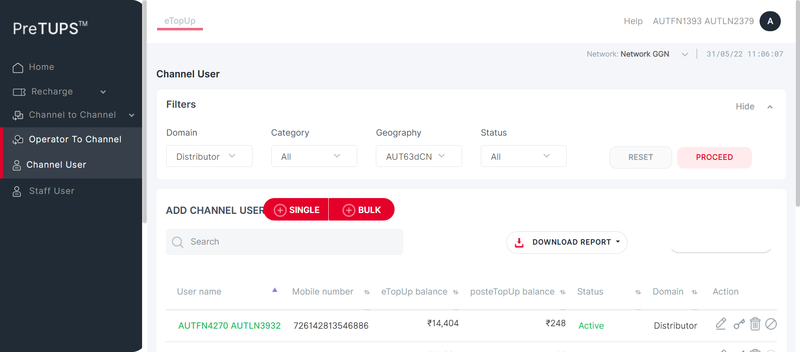 -
PREVAMPVCU4: To verify that Channel User is able to reset the fields in View Channel User.May 31, 2022 11:06:08 AM 0h 0m 26s+525ms errorPre-Requisite
Status Timestamp Details info_outline 11:06:08 AM Category Code for Dealer: SE info_outline 11:06:08 AM Entered webInterface(Dealer) info_outline 11:06:08 AM webInterface() :: select query: Select WEB_INTERFACE_ALLOWED from categories where category_name= ? info_outline 11:06:08 AM Database Returns: WEB_INTERFACE_ALLOWED (Y) info_outline 11:06:08 AM Exited webInterface() info_outline 11:06:08 AM Entered PerformViewChannelUserResetButton(Dealer, Agent, 728916899742500, 2468, Super Distributor, 3) info_outline 11:06:08 AM Login ID Found as: AUT_19995 info_outline 11:06:08 AM Password Found as: com@2468 info_outline 11:06:08 AM LOGINID : AUT_19995 info_outline 11:06:08 AM LoginID found as: AUT_19995 info_outline 11:06:08 AM Password found as: com@2468 info_outline 11:06:08 AM Username found as: AUTFN6751 AUTLN4189 info_outline 11:06:08 AM Trying to select Language info_outline 11:06:09 AM Language selected successfully as: English info_outline 11:06:09 AM Trying to enter Login ID info_outline 11:06:09 AM Login ID entered successfully as: AUT_19995 info_outline 11:06:09 AM Trying to enter Password info_outline 11:06:09 AM Password entered successfully as: com@2468 info_outline 11:06:09 AM Trying to click Login Button info_outline 11:06:09 AM Login button clicked successfully info_outline 11:06:09 AM Error Message Found on Login Screen: info_outline 11:06:09 AM Waiting for spinner info_outline 11:06:09 AM Waiting for spinner to stop info_outline 11:06:11 AM Spinner stopped info_outline 11:06:11 AM Trying clicking Channel User Heading.. info_outline 11:06:11 AM User clicked Channel User Heading. info_outline 11:06:11 AM Waiting for spinner info_outline 11:06:11 AM Waiting for spinner to stop info_outline 11:06:12 AM Spinner stopped info_outline 11:06:12 AM Trying to enter search by field Of Child User.. info_outline 11:06:12 AM Field entered :NAHGBeah info_outline 11:06:12 AM User click Reset button info_outline 11:06:12 AM User clicked Reset button info_outline 11:06:12 AM Waiting for spinner info_outline 11:06:12 AM Waiting for spinner to stop info_outline 11:06:13 AM Spinner stopped info_outline 11:06:13 AM Stored Subscriber MSISDN: info_outline 11:06:13 AM All fields are blank hence Reset button click successful error 11:06:34 AM Error while getting SSH Server Instance : com.jcraft.jsch.JSchException: java.net.ConnectException: Connection timed out: connect check_circle 11:06:34 AM Catalina Log
info_outline 11:06:34 AM -
PREVAMPVCU4: To verify that Channel User is able to reset the fields in View Channel User.May 31, 2022 11:06:34 AM 0h 0m 26s+849ms errorPre-Requisite
Status Timestamp Details info_outline 11:06:34 AM Category Code for Dealer: SE info_outline 11:06:35 AM Entered webInterface(Dealer) info_outline 11:06:35 AM webInterface() :: select query: Select WEB_INTERFACE_ALLOWED from categories where category_name= ? info_outline 11:06:35 AM Database Returns: WEB_INTERFACE_ALLOWED (Y) info_outline 11:06:35 AM Exited webInterface() info_outline 11:06:35 AM Entered PerformViewChannelUserResetButton(Dealer, Agent, 723932049199625, 2468, Super Distributor, 4) info_outline 11:06:35 AM Login ID Found as: AUT_19995 info_outline 11:06:35 AM Password Found as: com@2468 info_outline 11:06:35 AM LOGINID : AUT_19995 info_outline 11:06:35 AM LoginID found as: AUT_19995 info_outline 11:06:35 AM Password found as: com@2468 info_outline 11:06:35 AM Username found as: AUTFN6751 AUTLN4189 info_outline 11:06:35 AM Trying to select Language info_outline 11:06:36 AM Language selected successfully as: English info_outline 11:06:36 AM Trying to enter Login ID info_outline 11:06:36 AM Login ID entered successfully as: AUT_19995 info_outline 11:06:36 AM Trying to enter Password info_outline 11:06:36 AM Password entered successfully as: com@2468 info_outline 11:06:36 AM Trying to click Login Button info_outline 11:06:36 AM Login button clicked successfully info_outline 11:06:36 AM Error Message Found on Login Screen: info_outline 11:06:36 AM Waiting for spinner info_outline 11:06:36 AM Waiting for spinner to stop info_outline 11:06:38 AM Spinner stopped info_outline 11:06:38 AM Trying clicking Channel User Heading.. info_outline 11:06:38 AM User clicked Channel User Heading. info_outline 11:06:38 AM Waiting for spinner info_outline 11:06:38 AM Waiting for spinner to stop info_outline 11:06:39 AM Spinner stopped info_outline 11:06:39 AM Trying to enter search by field Of Child User.. info_outline 11:06:39 AM Field entered :lFDiLLNH info_outline 11:06:39 AM User click Reset button info_outline 11:06:39 AM User clicked Reset button info_outline 11:06:39 AM Waiting for spinner info_outline 11:06:39 AM Waiting for spinner to stop info_outline 11:06:40 AM Spinner stopped info_outline 11:06:40 AM Stored Subscriber MSISDN: info_outline 11:06:40 AM All fields are blank hence Reset button click successful error 11:07:01 AM Error while getting SSH Server Instance : com.jcraft.jsch.JSchException: java.net.ConnectException: Connection timed out: connect check_circle 11:07:01 AM Catalina Log
info_outline 11:07:01 AM 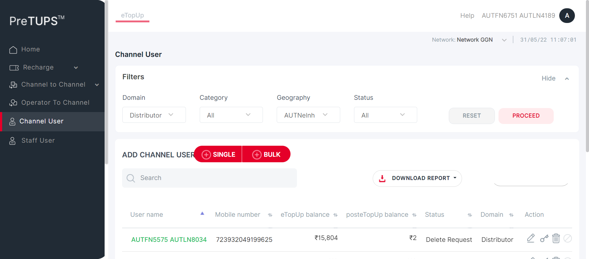 -
PREVAMPVCU4: To verify that Channel User is able to reset the fields in View Channel User.May 31, 2022 11:07:01 AM 0h 0m 26s+955ms errorPre-Requisite
Status Timestamp Details info_outline 11:07:01 AM Category Code for Dealer: SE info_outline 11:07:02 AM Entered webInterface(Dealer) info_outline 11:07:02 AM webInterface() :: select query: Select WEB_INTERFACE_ALLOWED from categories where category_name= ? info_outline 11:07:02 AM Database Returns: WEB_INTERFACE_ALLOWED (Y) info_outline 11:07:02 AM Exited webInterface() info_outline 11:07:02 AM Entered PerformViewChannelUserResetButton(Dealer, Retailer, 726142813546886, 2468, Super Distributor, 5) info_outline 11:07:02 AM Login ID Found as: AUT_19995 info_outline 11:07:02 AM Password Found as: com@2468 info_outline 11:07:02 AM LOGINID : AUT_19995 info_outline 11:07:02 AM LoginID found as: AUT_19995 info_outline 11:07:02 AM Password found as: com@2468 info_outline 11:07:02 AM Username found as: AUTFN6751 AUTLN4189 info_outline 11:07:02 AM Trying to select Language info_outline 11:07:03 AM Language selected successfully as: English info_outline 11:07:03 AM Trying to enter Login ID info_outline 11:07:03 AM Login ID entered successfully as: AUT_19995 info_outline 11:07:03 AM Trying to enter Password info_outline 11:07:03 AM Password entered successfully as: com@2468 info_outline 11:07:03 AM Trying to click Login Button info_outline 11:07:03 AM Login button clicked successfully info_outline 11:07:03 AM Error Message Found on Login Screen: info_outline 11:07:03 AM Waiting for spinner info_outline 11:07:04 AM Waiting for spinner to stop info_outline 11:07:05 AM Spinner stopped info_outline 11:07:05 AM Trying clicking Channel User Heading.. info_outline 11:07:05 AM User clicked Channel User Heading. info_outline 11:07:05 AM Waiting for spinner info_outline 11:07:05 AM Waiting for spinner to stop info_outline 11:07:06 AM Spinner stopped info_outline 11:07:06 AM Trying to enter search by field Of Child User.. info_outline 11:07:06 AM Field entered :Gmmk5C9f info_outline 11:07:06 AM User click Reset button info_outline 11:07:06 AM User clicked Reset button info_outline 11:07:06 AM Waiting for spinner info_outline 11:07:06 AM Waiting for spinner to stop info_outline 11:07:07 AM Spinner stopped info_outline 11:07:07 AM Stored Subscriber MSISDN: info_outline 11:07:07 AM All fields are blank hence Reset button click successful error 11:07:28 AM Error while getting SSH Server Instance : com.jcraft.jsch.JSchException: java.net.ConnectException: Connection timed out: connect check_circle 11:07:28 AM Catalina Log
info_outline 11:07:28 AM -
PREVAMPVCU4: To verify that Channel User is able to reset the fields in View Channel User.May 31, 2022 11:07:28 AM 0h 0m 29s+199ms errorPre-Requisite
Status Timestamp Details info_outline 11:07:29 AM Category Code for Agent: AG info_outline 11:07:29 AM Entered webInterface(Agent) info_outline 11:07:29 AM webInterface() :: select query: Select WEB_INTERFACE_ALLOWED from categories where category_name= ? info_outline 11:07:29 AM Database Returns: WEB_INTERFACE_ALLOWED (Y) info_outline 11:07:29 AM Exited webInterface() info_outline 11:07:29 AM Entered PerformViewChannelUserResetButton(Agent, Retailer, 726142813546886, 1357, Super Distributor, 5) info_outline 11:07:29 AM Login ID Found as: AUT_08837 info_outline 11:07:29 AM Password Found as: com@2468 info_outline 11:07:29 AM LOGINID : AUT_08837 info_outline 11:07:29 AM LoginID found as: AUT_08837 info_outline 11:07:29 AM Password found as: com@2468 info_outline 11:07:29 AM Username found as: AUTFN7086 AUTLN1035 info_outline 11:07:29 AM Trying to select Language info_outline 11:07:30 AM Language selected successfully as: English info_outline 11:07:30 AM Trying to enter Login ID info_outline 11:07:30 AM Login ID entered successfully as: AUT_08837 info_outline 11:07:30 AM Trying to enter Password info_outline 11:07:30 AM Password entered successfully as: com@2468 info_outline 11:07:30 AM Trying to click Login Button info_outline 11:07:31 AM Login button clicked successfully info_outline 11:07:31 AM Error Message Found on Login Screen: info_outline 11:07:31 AM Waiting for spinner info_outline 11:07:31 AM Waiting for spinner to stop info_outline 11:07:32 AM Spinner stopped info_outline 11:07:32 AM Trying clicking Channel User Heading.. info_outline 11:07:32 AM User clicked Channel User Heading. info_outline 11:07:32 AM Waiting for spinner info_outline 11:07:33 AM Waiting for spinner to stop info_outline 11:07:33 AM Spinner stopped info_outline 11:07:33 AM Trying to enter search by field Of Child User.. info_outline 11:07:33 AM Field entered :HKknbMnL info_outline 11:07:33 AM User click Reset button info_outline 11:07:33 AM User clicked Reset button info_outline 11:07:33 AM Waiting for spinner info_outline 11:07:34 AM Waiting for spinner to stop info_outline 11:07:34 AM Spinner stopped info_outline 11:07:34 AM Stored Subscriber MSISDN: info_outline 11:07:34 AM All fields are blank hence Reset button click successful error 11:07:55 AM Error while getting SSH Server Instance : com.jcraft.jsch.JSchException: java.net.ConnectException: Connection timed out: connect check_circle 11:07:55 AM Catalina Log
info_outline 11:07:55 AM low_priority 11:07:56 AM java.lang.NullPointerException
low_priority 11:07:56 AM java.lang.NullPointerException
low_priority 11:07:56 AM java.lang.NullPointerException
low_priority 11:07:56 AM java.lang.NullPointerException
low_priority 11:07:57 AM java.lang.NullPointerException
low_priority 11:07:57 AM java.lang.NullPointerException
info_outline 11:07:58 AM Entered :: getSystemPreference(TRF_RULE_USER_LEVEL_ALLOW) info_outline 11:07:58 AM Query Repository Returns: DEFAULT_VALUE (true) -
PREVAMPVCU5: To verify that Channel User is able to not able to View Channel User with Invalid Search Field.May 31, 2022 11:07:58 AM 0h 0m 26s+491ms errorPre-Requisite
Status Timestamp Details info_outline 11:07:58 AM Category Code for Super Distributor: DIST info_outline 11:07:58 AM Entered webInterface(Super Distributor) info_outline 11:07:58 AM webInterface() :: select query: Select WEB_INTERFACE_ALLOWED from categories where category_name= ? info_outline 11:07:58 AM Database Returns: WEB_INTERFACE_ALLOWED (Y) info_outline 11:07:58 AM Exited webInterface() info_outline 11:07:58 AM Entered PerformViewChannelUserInvalidSearchField(Super Distributor, Dealer, 724699085750159, 1357, Root, 2) info_outline 11:07:58 AM Login ID Found as: AUT_48675 info_outline 11:07:58 AM Password Found as: com@2468 info_outline 11:07:58 AM LOGINID : AUT_48675 info_outline 11:07:58 AM LoginID found as: AUT_48675 info_outline 11:07:58 AM Password found as: com@2468 info_outline 11:07:58 AM Username found as: AUTFN1393 AUTLN2379 info_outline 11:07:59 AM Trying to select Language info_outline 11:07:59 AM Language selected successfully as: English info_outline 11:07:59 AM Trying to enter Login ID info_outline 11:07:59 AM Login ID entered successfully as: AUT_48675 info_outline 11:07:59 AM Trying to enter Password info_outline 11:08:00 AM Password entered successfully as: com@2468 info_outline 11:08:00 AM Trying to click Login Button info_outline 11:08:00 AM Login button clicked successfully info_outline 11:08:00 AM Error Message Found on Login Screen: info_outline 11:08:00 AM Waiting for spinner info_outline 11:08:00 AM Waiting for spinner to stop info_outline 11:08:02 AM Spinner stopped info_outline 11:08:02 AM Trying clicking Channel User Heading.. info_outline 11:08:02 AM User clicked Channel User Heading. info_outline 11:08:02 AM Waiting for spinner info_outline 11:08:02 AM Waiting for spinner to stop info_outline 11:08:02 AM Spinner stopped info_outline 11:08:02 AM Trying to enter search by field Of Child User.. info_outline 11:08:03 AM Field entered :1Oie94ML info_outline 11:08:03 AM Trying to get the Search Field error displayed... info_outline 11:08:03 AM Error found in search field : No matching records found info_outline 11:08:03 AM Expected: No matching records found
Found: No matching records foundinfo_outline 11:08:03 AM Message Validation Success info_outline 11:08:03 AM info_outline 11:08:03 AM Validation Error Message for Search Field Found as: No matching records found error 11:08:24 AM Error while getting SSH Server Instance : com.jcraft.jsch.JSchException: java.net.ConnectException: Connection timed out: connect check_circle 11:08:24 AM Catalina Log
info_outline 11:08:24 AM -
PREVAMPVCU5: To verify that Channel User is able to not able to View Channel User with Invalid Search Field.May 31, 2022 11:08:24 AM 0h 0m 26s+357ms errorPre-Requisite
Status Timestamp Details info_outline 11:08:24 AM Category Code for Super Distributor: DIST info_outline 11:08:25 AM Entered webInterface(Super Distributor) info_outline 11:08:25 AM webInterface() :: select query: Select WEB_INTERFACE_ALLOWED from categories where category_name= ? info_outline 11:08:25 AM Database Returns: WEB_INTERFACE_ALLOWED (Y) info_outline 11:08:25 AM Exited webInterface() info_outline 11:08:25 AM Entered PerformViewChannelUserInvalidSearchField(Super Distributor, Agent, 728916899742500, 1357, Root, 3) info_outline 11:08:25 AM Login ID Found as: AUT_48675 info_outline 11:08:25 AM Password Found as: com@2468 info_outline 11:08:25 AM LOGINID : AUT_48675 info_outline 11:08:25 AM LoginID found as: AUT_48675 info_outline 11:08:25 AM Password found as: com@2468 info_outline 11:08:25 AM Username found as: AUTFN1393 AUTLN2379 info_outline 11:08:25 AM Trying to select Language info_outline 11:08:26 AM Language selected successfully as: English info_outline 11:08:26 AM Trying to enter Login ID info_outline 11:08:26 AM Login ID entered successfully as: AUT_48675 info_outline 11:08:26 AM Trying to enter Password info_outline 11:08:26 AM Password entered successfully as: com@2468 info_outline 11:08:26 AM Trying to click Login Button info_outline 11:08:26 AM Login button clicked successfully info_outline 11:08:26 AM Error Message Found on Login Screen: info_outline 11:08:26 AM Waiting for spinner info_outline 11:08:26 AM Waiting for spinner to stop info_outline 11:08:28 AM Spinner stopped info_outline 11:08:28 AM Trying clicking Channel User Heading.. info_outline 11:08:28 AM User clicked Channel User Heading. info_outline 11:08:28 AM Waiting for spinner info_outline 11:08:28 AM Waiting for spinner to stop info_outline 11:08:29 AM Spinner stopped info_outline 11:08:29 AM Trying to enter search by field Of Child User.. info_outline 11:08:29 AM Field entered :B4Fmdc8F info_outline 11:08:29 AM Trying to get the Search Field error displayed... info_outline 11:08:29 AM Error found in search field : No matching records found info_outline 11:08:29 AM Expected: No matching records found
Found: No matching records foundinfo_outline 11:08:29 AM Message Validation Success info_outline 11:08:29 AM info_outline 11:08:29 AM Validation Error Message for Search Field Found as: No matching records found error 11:08:51 AM Error while getting SSH Server Instance : com.jcraft.jsch.JSchException: java.net.ConnectException: Connection timed out: connect check_circle 11:08:51 AM Catalina Log
info_outline 11:08:51 AM -
PREVAMPVCU5: To verify that Channel User is able to not able to View Channel User with Invalid Search Field.May 31, 2022 11:08:51 AM 0h 0m 26s+367ms errorPre-Requisite
Status Timestamp Details info_outline 11:08:51 AM Category Code for Super Distributor: DIST info_outline 11:08:51 AM Entered webInterface(Super Distributor) info_outline 11:08:51 AM webInterface() :: select query: Select WEB_INTERFACE_ALLOWED from categories where category_name= ? info_outline 11:08:51 AM Database Returns: WEB_INTERFACE_ALLOWED (Y) info_outline 11:08:51 AM Exited webInterface() info_outline 11:08:51 AM Entered PerformViewChannelUserInvalidSearchField(Super Distributor, Agent, 723932049199625, 1357, Root, 4) info_outline 11:08:51 AM Login ID Found as: AUT_48675 info_outline 11:08:51 AM Password Found as: com@2468 info_outline 11:08:51 AM LOGINID : AUT_48675 info_outline 11:08:51 AM LoginID found as: AUT_48675 info_outline 11:08:51 AM Password found as: com@2468 info_outline 11:08:51 AM Username found as: AUTFN1393 AUTLN2379 info_outline 11:08:52 AM Trying to select Language info_outline 11:08:52 AM Language selected successfully as: English info_outline 11:08:52 AM Trying to enter Login ID info_outline 11:08:52 AM Login ID entered successfully as: AUT_48675 info_outline 11:08:52 AM Trying to enter Password info_outline 11:08:53 AM Password entered successfully as: com@2468 info_outline 11:08:53 AM Trying to click Login Button info_outline 11:08:53 AM Login button clicked successfully info_outline 11:08:53 AM Error Message Found on Login Screen: info_outline 11:08:53 AM Waiting for spinner info_outline 11:08:53 AM Waiting for spinner to stop info_outline 11:08:55 AM Spinner stopped info_outline 11:08:55 AM Trying clicking Channel User Heading.. info_outline 11:08:55 AM User clicked Channel User Heading. info_outline 11:08:55 AM Waiting for spinner info_outline 11:08:55 AM Waiting for spinner to stop info_outline 11:08:55 AM Spinner stopped info_outline 11:08:55 AM Trying to enter search by field Of Child User.. info_outline 11:08:56 AM Field entered :fDD5cKIO info_outline 11:08:56 AM Trying to get the Search Field error displayed... info_outline 11:08:56 AM Error found in search field : No matching records found info_outline 11:08:56 AM Expected: No matching records found
Found: No matching records foundinfo_outline 11:08:56 AM Message Validation Success info_outline 11:08:56 AM 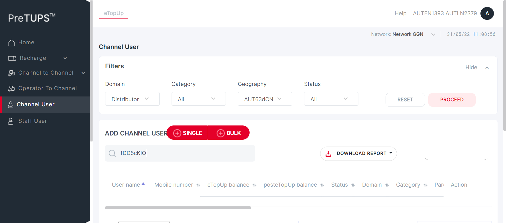 info_outline 11:08:56 AM Validation Error Message for Search Field Found as: No matching records found error 11:09:17 AM Error while getting SSH Server Instance : com.jcraft.jsch.JSchException: java.net.ConnectException: Connection timed out: connect check_circle 11:09:17 AM Catalina Log
info_outline 11:09:17 AM -
PREVAMPVCU5: To verify that Channel User is able to not able to View Channel User with Invalid Search Field.May 31, 2022 11:09:17 AM 0h 0m 26s+235ms errorPre-Requisite
Status Timestamp Details info_outline 11:09:17 AM Category Code for Super Distributor: DIST info_outline 11:09:18 AM Entered webInterface(Super Distributor) info_outline 11:09:18 AM webInterface() :: select query: Select WEB_INTERFACE_ALLOWED from categories where category_name= ? info_outline 11:09:18 AM Database Returns: WEB_INTERFACE_ALLOWED (Y) info_outline 11:09:18 AM Exited webInterface() info_outline 11:09:18 AM Entered PerformViewChannelUserInvalidSearchField(Super Distributor, Retailer, 726142813546886, 1357, Root, 5) info_outline 11:09:18 AM Login ID Found as: AUT_48675 info_outline 11:09:18 AM Password Found as: com@2468 info_outline 11:09:18 AM LOGINID : AUT_48675 info_outline 11:09:18 AM LoginID found as: AUT_48675 info_outline 11:09:18 AM Password found as: com@2468 info_outline 11:09:18 AM Username found as: AUTFN1393 AUTLN2379 info_outline 11:09:18 AM Trying to select Language info_outline 11:09:19 AM Language selected successfully as: English info_outline 11:09:19 AM Trying to enter Login ID info_outline 11:09:19 AM Login ID entered successfully as: AUT_48675 info_outline 11:09:19 AM Trying to enter Password info_outline 11:09:19 AM Password entered successfully as: com@2468 info_outline 11:09:19 AM Trying to click Login Button info_outline 11:09:19 AM Login button clicked successfully info_outline 11:09:19 AM Error Message Found on Login Screen: info_outline 11:09:19 AM Waiting for spinner info_outline 11:09:19 AM Waiting for spinner to stop info_outline 11:09:21 AM Spinner stopped info_outline 11:09:21 AM Trying clicking Channel User Heading.. info_outline 11:09:21 AM User clicked Channel User Heading. info_outline 11:09:21 AM Waiting for spinner info_outline 11:09:21 AM Waiting for spinner to stop info_outline 11:09:22 AM Spinner stopped info_outline 11:09:22 AM Trying to enter search by field Of Child User.. info_outline 11:09:22 AM Field entered :0nkKE24E info_outline 11:09:22 AM Trying to get the Search Field error displayed... info_outline 11:09:22 AM Error found in search field : No matching records found info_outline 11:09:22 AM Expected: No matching records found
Found: No matching records foundinfo_outline 11:09:22 AM Message Validation Success info_outline 11:09:22 AM info_outline 11:09:22 AM Validation Error Message for Search Field Found as: No matching records found error 11:09:43 AM Error while getting SSH Server Instance : com.jcraft.jsch.JSchException: java.net.ConnectException: Connection timed out: connect check_circle 11:09:43 AM Catalina Log
info_outline 11:09:44 AM -
PREVAMPVCU5: To verify that Channel User is able to not able to View Channel User with Invalid Search Field.May 31, 2022 11:09:44 AM 0h 0m 26s+559ms errorPre-Requisite
Status Timestamp Details info_outline 11:09:44 AM Category Code for Dealer: SE info_outline 11:09:44 AM Entered webInterface(Dealer) info_outline 11:09:44 AM webInterface() :: select query: Select WEB_INTERFACE_ALLOWED from categories where category_name= ? info_outline 11:09:44 AM Database Returns: WEB_INTERFACE_ALLOWED (Y) info_outline 11:09:44 AM Exited webInterface() info_outline 11:09:44 AM Entered PerformViewChannelUserInvalidSearchField(Dealer, Agent, 728916899742500, 2468, Super Distributor, 3) info_outline 11:09:44 AM Login ID Found as: AUT_19995 info_outline 11:09:44 AM Password Found as: com@2468 info_outline 11:09:44 AM LOGINID : AUT_19995 info_outline 11:09:44 AM LoginID found as: AUT_19995 info_outline 11:09:44 AM Password found as: com@2468 info_outline 11:09:44 AM Username found as: AUTFN6751 AUTLN4189 info_outline 11:09:45 AM Trying to select Language info_outline 11:09:45 AM Language selected successfully as: English info_outline 11:09:45 AM Trying to enter Login ID info_outline 11:09:45 AM Login ID entered successfully as: AUT_19995 info_outline 11:09:45 AM Trying to enter Password info_outline 11:09:46 AM Password entered successfully as: com@2468 info_outline 11:09:46 AM Trying to click Login Button info_outline 11:09:46 AM Login button clicked successfully info_outline 11:09:46 AM Error Message Found on Login Screen: info_outline 11:09:46 AM Waiting for spinner info_outline 11:09:46 AM Waiting for spinner to stop info_outline 11:09:48 AM Spinner stopped info_outline 11:09:48 AM Trying clicking Channel User Heading.. info_outline 11:09:48 AM User clicked Channel User Heading. info_outline 11:09:48 AM Waiting for spinner info_outline 11:09:48 AM Waiting for spinner to stop info_outline 11:09:48 AM Spinner stopped info_outline 11:09:48 AM Trying to enter search by field Of Child User.. info_outline 11:09:49 AM Field entered :L11oHHD2 info_outline 11:09:49 AM Trying to get the Search Field error displayed... info_outline 11:09:49 AM Error found in search field : No matching records found info_outline 11:09:49 AM Expected: No matching records found
Found: No matching records foundinfo_outline 11:09:49 AM Message Validation Success info_outline 11:09:49 AM info_outline 11:09:49 AM Validation Error Message for Search Field Found as: No matching records found error 11:10:10 AM Error while getting SSH Server Instance : com.jcraft.jsch.JSchException: java.net.ConnectException: Connection timed out: connect check_circle 11:10:10 AM Catalina Log
info_outline 11:10:10 AM 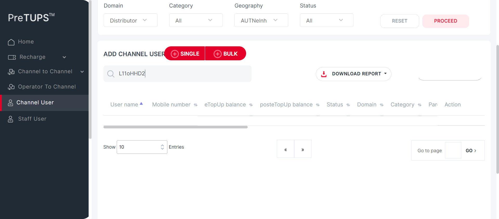 -
PREVAMPVCU5: To verify that Channel User is able to not able to View Channel User with Invalid Search Field.May 31, 2022 11:10:10 AM 0h 0m 56s+368ms errorPre-Requisite
Status Timestamp Details info_outline 11:10:10 AM Category Code for Dealer: SE info_outline 11:10:10 AM Entered webInterface(Dealer) info_outline 11:10:10 AM webInterface() :: select query: Select WEB_INTERFACE_ALLOWED from categories where category_name= ? info_outline 11:10:11 AM Database Returns: WEB_INTERFACE_ALLOWED (Y) info_outline 11:10:11 AM Exited webInterface() info_outline 11:10:11 AM Entered PerformViewChannelUserInvalidSearchField(Dealer, Agent, 723932049199625, 2468, Super Distributor, 4) info_outline 11:10:11 AM Login ID Found as: AUT_19995 info_outline 11:10:11 AM Password Found as: com@2468 info_outline 11:10:11 AM LOGINID : AUT_19995 info_outline 11:10:11 AM LoginID found as: AUT_19995 info_outline 11:10:11 AM Password found as: com@2468 info_outline 11:10:11 AM Username found as: AUTFN6751 AUTLN4189 info_outline 11:10:11 AM Trying to select Language info_outline 11:10:12 AM Language selected successfully as: English info_outline 11:10:12 AM Trying to enter Login ID info_outline 11:10:12 AM Login ID entered successfully as: AUT_19995 info_outline 11:10:12 AM Trying to enter Password info_outline 11:10:12 AM Password entered successfully as: com@2468 info_outline 11:10:12 AM Trying to click Login Button info_outline 11:10:12 AM Login button clicked successfully info_outline 11:10:12 AM Error Message Found on Login Screen: info_outline 11:10:12 AM Waiting for spinner info_outline 11:10:12 AM Waiting for spinner to stop info_outline 11:10:14 AM Spinner stopped info_outline 11:10:14 AM Trying clicking Channel User Heading.. info_outline 11:10:14 AM User clicked Channel User Heading. info_outline 11:10:14 AM Waiting for spinner info_outline 11:10:44 AM Element not found info_outline 11:10:44 AM Spinner stopped info_outline 11:10:44 AM Trying to enter search by field Of Child User.. info_outline 11:10:45 AM Field entered :78hbNO32 info_outline 11:10:45 AM Trying to get the Search Field error displayed... info_outline 11:10:45 AM Error found in search field : No matching records found info_outline 11:10:45 AM Expected: No matching records found
Found: No matching records foundinfo_outline 11:10:45 AM Message Validation Success info_outline 11:10:45 AM info_outline 11:10:45 AM Validation Error Message for Search Field Found as: No matching records found error 11:11:07 AM Error while getting SSH Server Instance : com.jcraft.jsch.JSchException: java.net.ConnectException: Connection timed out: connect check_circle 11:11:07 AM Catalina Log
info_outline 11:11:07 AM -
PREVAMPVCU5: To verify that Channel User is able to not able to View Channel User with Invalid Search Field.May 31, 2022 11:11:07 AM 0h 0m 26s+988ms errorPre-Requisite
Status Timestamp Details info_outline 11:11:07 AM Category Code for Dealer: SE info_outline 11:11:07 AM Entered webInterface(Dealer) info_outline 11:11:07 AM webInterface() :: select query: Select WEB_INTERFACE_ALLOWED from categories where category_name= ? info_outline 11:11:07 AM Database Returns: WEB_INTERFACE_ALLOWED (Y) info_outline 11:11:07 AM Exited webInterface() info_outline 11:11:07 AM Entered PerformViewChannelUserInvalidSearchField(Dealer, Retailer, 726142813546886, 2468, Super Distributor, 5) info_outline 11:11:07 AM Login ID Found as: AUT_19995 info_outline 11:11:07 AM Password Found as: com@2468 info_outline 11:11:07 AM LOGINID : AUT_19995 info_outline 11:11:07 AM LoginID found as: AUT_19995 info_outline 11:11:07 AM Password found as: com@2468 info_outline 11:11:07 AM Username found as: AUTFN6751 AUTLN4189 info_outline 11:11:08 AM Trying to select Language info_outline 11:11:08 AM Language selected successfully as: English info_outline 11:11:08 AM Trying to enter Login ID info_outline 11:11:09 AM Login ID entered successfully as: AUT_19995 info_outline 11:11:09 AM Trying to enter Password info_outline 11:11:09 AM Password entered successfully as: com@2468 info_outline 11:11:09 AM Trying to click Login Button info_outline 11:11:09 AM Login button clicked successfully info_outline 11:11:09 AM Error Message Found on Login Screen: info_outline 11:11:09 AM Waiting for spinner info_outline 11:11:09 AM Waiting for spinner to stop info_outline 11:11:11 AM Spinner stopped info_outline 11:11:11 AM Trying clicking Channel User Heading.. info_outline 11:11:11 AM User clicked Channel User Heading. info_outline 11:11:11 AM Waiting for spinner info_outline 11:11:12 AM Waiting for spinner to stop info_outline 11:11:12 AM Spinner stopped info_outline 11:11:12 AM Trying to enter search by field Of Child User.. info_outline 11:11:12 AM Field entered :Hjdd8Ead info_outline 11:11:12 AM Trying to get the Search Field error displayed... info_outline 11:11:12 AM Error found in search field : No matching records found info_outline 11:11:12 AM Expected: No matching records found
Found: No matching records foundinfo_outline 11:11:12 AM Message Validation Success info_outline 11:11:13 AM info_outline 11:11:13 AM Validation Error Message for Search Field Found as: No matching records found error 11:11:34 AM Error while getting SSH Server Instance : com.jcraft.jsch.JSchException: java.net.ConnectException: Connection timed out: connect check_circle 11:11:34 AM Catalina Log
info_outline 11:11:34 AM -
PREVAMPVCU5: To verify that Channel User is able to not able to View Channel User with Invalid Search Field.May 31, 2022 11:11:34 AM 0h 0m 28s+334ms errorPre-Requisite
Status Timestamp Details info_outline 11:11:34 AM Category Code for Agent: AG info_outline 11:11:34 AM Entered webInterface(Agent) info_outline 11:11:34 AM webInterface() :: select query: Select WEB_INTERFACE_ALLOWED from categories where category_name= ? info_outline 11:11:34 AM Database Returns: WEB_INTERFACE_ALLOWED (Y) info_outline 11:11:34 AM Exited webInterface() info_outline 11:11:34 AM Entered PerformViewChannelUserInvalidSearchField(Agent, Retailer, 726142813546886, 1357, Super Distributor, 5) info_outline 11:11:34 AM Login ID Found as: AUT_08837 info_outline 11:11:34 AM Password Found as: com@2468 info_outline 11:11:34 AM LOGINID : AUT_08837 info_outline 11:11:34 AM LoginID found as: AUT_08837 info_outline 11:11:34 AM Password found as: com@2468 info_outline 11:11:34 AM Username found as: AUTFN7086 AUTLN1035 info_outline 11:11:35 AM Trying to select Language info_outline 11:11:35 AM Language selected successfully as: English info_outline 11:11:35 AM Trying to enter Login ID info_outline 11:11:36 AM Login ID entered successfully as: AUT_08837 info_outline 11:11:36 AM Trying to enter Password info_outline 11:11:36 AM Password entered successfully as: com@2468 info_outline 11:11:36 AM Trying to click Login Button info_outline 11:11:36 AM Login button clicked successfully info_outline 11:11:36 AM Error Message Found on Login Screen: info_outline 11:11:36 AM Waiting for spinner info_outline 11:11:36 AM Waiting for spinner to stop info_outline 11:11:38 AM Spinner stopped info_outline 11:11:38 AM Trying clicking Channel User Heading.. info_outline 11:11:39 AM User clicked Channel User Heading. info_outline 11:11:39 AM Waiting for spinner info_outline 11:11:39 AM Waiting for spinner to stop info_outline 11:11:39 AM Spinner stopped info_outline 11:11:39 AM Trying to enter search by field Of Child User.. info_outline 11:11:39 AM Field entered :o27D34Df info_outline 11:11:39 AM Trying to get the Search Field error displayed... info_outline 11:11:40 AM Error found in search field : No matching records found info_outline 11:11:40 AM Expected: No matching records found
Found: No matching records foundinfo_outline 11:11:40 AM Message Validation Success info_outline 11:11:40 AM info_outline 11:11:40 AM Validation Error Message for Search Field Found as: No matching records found error 11:12:01 AM Error while getting SSH Server Instance : com.jcraft.jsch.JSchException: java.net.ConnectException: Connection timed out: connect check_circle 11:12:01 AM Catalina Log
info_outline 11:12:01 AM low_priority 11:12:01 AM java.lang.NullPointerException
low_priority 11:12:01 AM java.lang.NullPointerException
low_priority 11:12:01 AM java.lang.NullPointerException
low_priority 11:12:02 AM java.lang.NullPointerException
low_priority 11:12:02 AM java.lang.NullPointerException
low_priority 11:12:02 AM java.lang.NullPointerException
info_outline 11:12:02 AM Entered :: getSystemPreference(TRF_RULE_USER_LEVEL_ALLOW) info_outline 11:12:02 AM Query Repository Returns: DEFAULT_VALUE (true) -
PREVAMPVCU6: To verify that Channel User is able to View Channel User for Active Users successfully by Super Distributor.May 31, 2022 11:12:02 AM 0h 0m 30s+64ms errorPre-Requisite
Status Timestamp Details info_outline 11:12:02 AM Category Code for Super Distributor: DIST info_outline 11:12:02 AM Entered webInterface(Super Distributor) info_outline 11:12:02 AM webInterface() :: select query: Select WEB_INTERFACE_ALLOWED from categories where category_name= ? info_outline 11:12:03 AM Database Returns: WEB_INTERFACE_ALLOWED (Y) info_outline 11:12:03 AM Exited webInterface() info_outline 11:12:03 AM Entered PerformViewChannelUserActiveUser(Super Distributor, Dealer, 724699085750159, 1357, Root, 2) info_outline 11:12:03 AM Login ID Found as: AUT_48675 info_outline 11:12:03 AM Password Found as: com@2468 info_outline 11:12:03 AM LOGINID : AUT_48675 info_outline 11:12:03 AM LoginID found as: AUT_48675 info_outline 11:12:03 AM Password found as: com@2468 info_outline 11:12:03 AM Username found as: AUTFN1393 AUTLN2379 info_outline 11:12:03 AM Trying to select Language info_outline 11:12:04 AM Language selected successfully as: English info_outline 11:12:04 AM Trying to enter Login ID info_outline 11:12:04 AM Login ID entered successfully as: AUT_48675 info_outline 11:12:04 AM Trying to enter Password info_outline 11:12:04 AM Password entered successfully as: com@2468 info_outline 11:12:04 AM Trying to click Login Button info_outline 11:12:04 AM Login button clicked successfully info_outline 11:12:04 AM Error Message Found on Login Screen: info_outline 11:12:04 AM Waiting for spinner info_outline 11:12:05 AM Waiting for spinner to stop info_outline 11:12:07 AM Spinner stopped info_outline 11:12:07 AM Trying clicking Channel User Heading.. info_outline 11:12:07 AM User clicked Channel User Heading. info_outline 11:12:07 AM Waiting for spinner info_outline 11:12:07 AM Waiting for spinner to stop info_outline 11:12:08 AM Spinner stopped info_outline 11:12:08 AM Trying to select Channel User Status... info_outline 11:12:08 AM Status selected successfully as: Active info_outline 11:12:08 AM Trying to click on the User Name of the Child User.. info_outline 11:12:08 AM Clicked on the User Name of the Child User. info_outline 11:12:08 AM Waiting for spinner info_outline 11:12:08 AM Waiting for spinner to stop info_outline 11:12:09 AM Spinner stopped info_outline 11:12:09 AM Trying to check if User Name is displayed info_outline 11:12:09 AM User Name is displayed. info_outline 11:12:09 AM Trying to check if MSISDN is displayed info_outline 11:12:09 AM MSISDN is displayed. info_outline 11:12:09 AM Trying to check if Geography is displayed info_outline 11:12:09 AM Geography is displayed. info_outline 11:12:09 AM Trying to check if External Code is displayed info_outline 11:12:09 AM External Code is displayed. info_outline 11:12:09 AM Trying to check if Domain is displayed info_outline 11:12:09 AM Domain is displayed. info_outline 11:12:09 AM Trying to check if Category is displayed info_outline 11:12:10 AM Category is displayed. info_outline 11:12:10 AM Trying to check if Parent Category is displayed info_outline 11:12:10 AM Parent Category is displayed. info_outline 11:12:10 AM Personal Details Tab fields and data validated. info_outline 11:12:10 AM Trying to click the Login Details Tab info_outline 11:12:10 AM User clicked on the Login Details Tab. info_outline 11:12:10 AM Trying to check if Channel User's Login ID is displayed info_outline 11:12:10 AM Channel User's Login ID is displayed. info_outline 11:12:10 AM Trying to check if MSISDN is displayed info_outline 11:12:10 AM MSISDN is displayed. info_outline 11:12:10 AM Trying to click the Role Details Tab info_outline 11:12:10 AM User clicked on the Role Details Tab. info_outline 11:12:10 AM Checking if System Role exists info_outline 11:12:10 AM System role exists info_outline 11:12:10 AM Checking if Group Role exists info_outline 11:12:10 AM Group role does not exists info_outline 11:12:10 AM Group role exists info_outline 11:12:10 AM Trying to click the Payment and Service Details Tab info_outline 11:12:10 AM User clicked on the Payment and Service Details Tab. info_outline 11:12:10 AM Checking if Payment Information exists info_outline 11:12:10 AM Heading fetched: Payment Information info_outline 11:12:10 AM Payment Information exists info_outline 11:12:10 AM Checking if Suspension Rights exists info_outline 11:12:10 AM Heading fetched: Payment Information info_outline 11:12:10 AM Suspension Rights does not exists info_outline 11:12:10 AM Heading fetched: Suspension Rights info_outline 11:12:10 AM Suspension Rights exists info_outline 11:12:10 AM Checking if Services Information exists info_outline 11:12:10 AM Heading fetched: Payment Information info_outline 11:12:10 AM Services Information does not exists info_outline 11:12:10 AM Heading fetched: Suspension Rights info_outline 11:12:10 AM Services Information does not exists info_outline 11:12:10 AM Heading fetched: Services Information info_outline 11:12:10 AM Services Information exists info_outline 11:12:10 AM Checking if Voucher Type exists info_outline 11:12:10 AM Heading fetched: Payment Information info_outline 11:12:10 AM Service Information does not exists info_outline 11:12:10 AM Heading fetched: Suspension Rights info_outline 11:12:10 AM Service Information does not exists info_outline 11:12:10 AM Heading fetched: Services Information info_outline 11:12:10 AM Service Information does not exists info_outline 11:12:11 AM Heading fetched: Voucher Type info_outline 11:12:11 AM Voucher Type exists info_outline 11:12:11 AM Checking if Low Balance Alert exists info_outline 11:12:11 AM Heading fetched: Payment Information info_outline 11:12:11 AM Low Balance Alert does not exists info_outline 11:12:11 AM Heading fetched: Suspension Rights info_outline 11:12:11 AM Low Balance Alert does not exists info_outline 11:12:11 AM Heading fetched: Services Information info_outline 11:12:11 AM Low Balance Alert does not exists info_outline 11:12:11 AM Heading fetched: Voucher Type info_outline 11:12:11 AM Low Balance Alert does not exists info_outline 11:12:11 AM Heading fetched: Low Balance Alert info_outline 11:12:11 AM Low Balance Alert exists info_outline 11:12:11 AM Trying to click the Profile Details Tab info_outline 11:12:11 AM User clicked on the Profile Details Tab. info_outline 11:12:11 AM Trying to check if Channel User Commission Profile is displayed info_outline 11:12:11 AM Channel User Commission Profile is displayed. info_outline 11:12:11 AM Trying to check if Channel User Transfer Profile is displayed info_outline 11:12:11 AM Channel User Transfer Profile is displayed. info_outline 11:12:11 AM Trying to click the Threshold & Usage Details Tab info_outline 11:12:11 AM User clicked on the Threshold & Usage Details Tab. info_outline 11:12:11 AM Checking if Balance Preferences exists info_outline 11:12:11 AM Balance Preferences exists info_outline 11:12:11 AM Checking if Transfer control preferences exists info_outline 11:12:11 AM Transfer control preferences does not exists info_outline 11:12:11 AM Transfer control preferences exists info_outline 11:12:11 AM View Channel User is successful with all the details in the tabs with Active Users error 11:12:32 AM Error while getting SSH Server Instance : com.jcraft.jsch.JSchException: java.net.ConnectException: Connection timed out: connect check_circle 11:12:32 AM Catalina Log
info_outline 11:12:32 AM -
PREVAMPVCU6: To verify that Channel User is able to View Channel User for Active Users successfully by Super Distributor.May 31, 2022 11:12:33 AM 0h 0m 29s+348ms errorPre-Requisite
Status Timestamp Details info_outline 11:12:33 AM Category Code for Super Distributor: DIST info_outline 11:12:33 AM Entered webInterface(Super Distributor) info_outline 11:12:33 AM webInterface() :: select query: Select WEB_INTERFACE_ALLOWED from categories where category_name= ? info_outline 11:12:33 AM Database Returns: WEB_INTERFACE_ALLOWED (Y) info_outline 11:12:33 AM Exited webInterface() info_outline 11:12:33 AM Entered PerformViewChannelUserActiveUser(Super Distributor, Agent, 728916899742500, 1357, Root, 3) info_outline 11:12:33 AM Login ID Found as: AUT_48675 info_outline 11:12:33 AM Password Found as: com@2468 info_outline 11:12:33 AM LOGINID : AUT_48675 info_outline 11:12:33 AM LoginID found as: AUT_48675 info_outline 11:12:33 AM Password found as: com@2468 info_outline 11:12:33 AM Username found as: AUTFN1393 AUTLN2379 info_outline 11:12:33 AM Trying to select Language info_outline 11:12:34 AM Language selected successfully as: English info_outline 11:12:34 AM Trying to enter Login ID info_outline 11:12:34 AM Login ID entered successfully as: AUT_48675 info_outline 11:12:34 AM Trying to enter Password info_outline 11:12:34 AM Password entered successfully as: com@2468 info_outline 11:12:34 AM Trying to click Login Button info_outline 11:12:34 AM Login button clicked successfully info_outline 11:12:34 AM Error Message Found on Login Screen: info_outline 11:12:34 AM Waiting for spinner info_outline 11:12:34 AM Waiting for spinner to stop info_outline 11:12:37 AM Spinner stopped info_outline 11:12:37 AM Trying clicking Channel User Heading.. info_outline 11:12:37 AM User clicked Channel User Heading. info_outline 11:12:37 AM Waiting for spinner info_outline 11:12:37 AM Waiting for spinner to stop info_outline 11:12:37 AM Spinner stopped info_outline 11:12:37 AM Trying to select Channel User Status... info_outline 11:12:38 AM Status selected successfully as: Active info_outline 11:12:38 AM Trying to click on the User Name of the Child User.. info_outline 11:12:38 AM Clicked on the User Name of the Child User. info_outline 11:12:38 AM Waiting for spinner info_outline 11:12:38 AM Waiting for spinner to stop info_outline 11:12:39 AM Spinner stopped info_outline 11:12:39 AM Trying to check if User Name is displayed info_outline 11:12:39 AM User Name is displayed. info_outline 11:12:39 AM Trying to check if MSISDN is displayed info_outline 11:12:39 AM MSISDN is displayed. info_outline 11:12:39 AM Trying to check if Geography is displayed info_outline 11:12:39 AM Geography is displayed. info_outline 11:12:39 AM Trying to check if External Code is displayed info_outline 11:12:39 AM External Code is displayed. info_outline 11:12:39 AM Trying to check if Domain is displayed info_outline 11:12:39 AM Domain is displayed. info_outline 11:12:39 AM Trying to check if Category is displayed info_outline 11:12:39 AM Category is displayed. info_outline 11:12:39 AM Trying to check if Parent Category is displayed info_outline 11:12:39 AM Parent Category is displayed. info_outline 11:12:39 AM Personal Details Tab fields and data validated. info_outline 11:12:39 AM Trying to click the Login Details Tab info_outline 11:12:39 AM User clicked on the Login Details Tab. info_outline 11:12:39 AM Trying to check if Channel User's Login ID is displayed info_outline 11:12:39 AM Channel User's Login ID is displayed. info_outline 11:12:39 AM Trying to check if MSISDN is displayed info_outline 11:12:39 AM MSISDN is displayed. info_outline 11:12:39 AM Trying to click the Role Details Tab info_outline 11:12:39 AM User clicked on the Role Details Tab. info_outline 11:12:39 AM Checking if System Role exists info_outline 11:12:40 AM System role exists info_outline 11:12:40 AM Checking if Group Role exists info_outline 11:12:40 AM Group role does not exists info_outline 11:12:40 AM Group role exists info_outline 11:12:40 AM Trying to click the Payment and Service Details Tab info_outline 11:12:40 AM User clicked on the Payment and Service Details Tab. info_outline 11:12:40 AM Checking if Payment Information exists info_outline 11:12:40 AM Heading fetched: Payment Information info_outline 11:12:40 AM Payment Information exists info_outline 11:12:40 AM Checking if Suspension Rights exists info_outline 11:12:40 AM Heading fetched: Payment Information info_outline 11:12:40 AM Suspension Rights does not exists info_outline 11:12:40 AM Heading fetched: Suspension Rights info_outline 11:12:40 AM Suspension Rights exists info_outline 11:12:40 AM Checking if Services Information exists info_outline 11:12:40 AM Heading fetched: Payment Information info_outline 11:12:40 AM Services Information does not exists info_outline 11:12:40 AM Heading fetched: Suspension Rights info_outline 11:12:40 AM Services Information does not exists info_outline 11:12:40 AM Heading fetched: Services Information info_outline 11:12:40 AM Services Information exists info_outline 11:12:40 AM Checking if Voucher Type exists info_outline 11:12:40 AM Heading fetched: Payment Information info_outline 11:12:40 AM Service Information does not exists info_outline 11:12:40 AM Heading fetched: Suspension Rights info_outline 11:12:40 AM Service Information does not exists info_outline 11:12:40 AM Heading fetched: Services Information info_outline 11:12:40 AM Service Information does not exists info_outline 11:12:40 AM Heading fetched: Voucher Type info_outline 11:12:40 AM Voucher Type exists info_outline 11:12:40 AM Checking if Low Balance Alert exists info_outline 11:12:40 AM Heading fetched: Payment Information info_outline 11:12:40 AM Low Balance Alert does not exists info_outline 11:12:40 AM Heading fetched: Suspension Rights info_outline 11:12:40 AM Low Balance Alert does not exists info_outline 11:12:40 AM Heading fetched: Services Information info_outline 11:12:40 AM Low Balance Alert does not exists info_outline 11:12:40 AM Heading fetched: Voucher Type info_outline 11:12:40 AM Low Balance Alert does not exists info_outline 11:12:40 AM Heading fetched: Low Balance Alert info_outline 11:12:40 AM Low Balance Alert exists info_outline 11:12:40 AM Trying to click the Profile Details Tab info_outline 11:12:40 AM User clicked on the Profile Details Tab. info_outline 11:12:40 AM Trying to check if Channel User Commission Profile is displayed info_outline 11:12:40 AM Channel User Commission Profile is displayed. info_outline 11:12:40 AM Trying to check if Channel User Transfer Profile is displayed info_outline 11:12:40 AM Channel User Transfer Profile is displayed. info_outline 11:12:40 AM Trying to click the Threshold & Usage Details Tab info_outline 11:12:40 AM User clicked on the Threshold & Usage Details Tab. info_outline 11:12:40 AM Checking if Balance Preferences exists info_outline 11:12:40 AM Balance Preferences exists info_outline 11:12:40 AM Checking if Transfer control preferences exists info_outline 11:12:41 AM Transfer control preferences does not exists info_outline 11:12:41 AM Transfer control preferences exists info_outline 11:12:41 AM View Channel User is successful with all the details in the tabs with Active Users error 11:13:02 AM Error while getting SSH Server Instance : com.jcraft.jsch.JSchException: java.net.ConnectException: Connection timed out: connect check_circle 11:13:02 AM Catalina Log
info_outline 11:13:02 AM 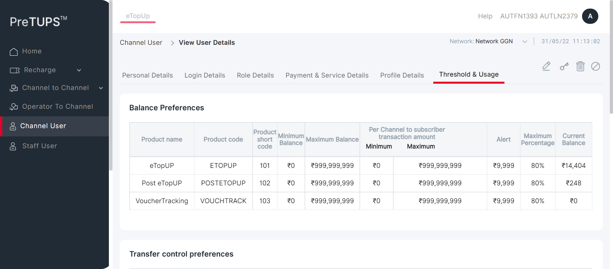 -
PREVAMPVCU6: To verify that Channel User is able to View Channel User for Active Users successfully by Super Distributor.May 31, 2022 11:13:02 AM 0h 0m 29s+459ms errorPre-Requisite
Status Timestamp Details info_outline 11:13:02 AM Category Code for Super Distributor: DIST info_outline 11:13:02 AM Entered webInterface(Super Distributor) info_outline 11:13:02 AM webInterface() :: select query: Select WEB_INTERFACE_ALLOWED from categories where category_name= ? info_outline 11:13:02 AM Database Returns: WEB_INTERFACE_ALLOWED (Y) info_outline 11:13:02 AM Exited webInterface() info_outline 11:13:02 AM Entered PerformViewChannelUserActiveUser(Super Distributor, Agent, 723932049199625, 1357, Root, 4) info_outline 11:13:02 AM Login ID Found as: AUT_48675 info_outline 11:13:02 AM Password Found as: com@2468 info_outline 11:13:02 AM LOGINID : AUT_48675 info_outline 11:13:02 AM LoginID found as: AUT_48675 info_outline 11:13:02 AM Password found as: com@2468 info_outline 11:13:02 AM Username found as: AUTFN1393 AUTLN2379 info_outline 11:13:03 AM Trying to select Language info_outline 11:13:03 AM Language selected successfully as: English info_outline 11:13:03 AM Trying to enter Login ID info_outline 11:13:04 AM Login ID entered successfully as: AUT_48675 info_outline 11:13:04 AM Trying to enter Password info_outline 11:13:04 AM Password entered successfully as: com@2468 info_outline 11:13:04 AM Trying to click Login Button info_outline 11:13:04 AM Login button clicked successfully info_outline 11:13:04 AM Error Message Found on Login Screen: info_outline 11:13:04 AM Waiting for spinner info_outline 11:13:04 AM Waiting for spinner to stop info_outline 11:13:06 AM Spinner stopped info_outline 11:13:06 AM Trying clicking Channel User Heading.. info_outline 11:13:06 AM User clicked Channel User Heading. info_outline 11:13:06 AM Waiting for spinner info_outline 11:13:06 AM Waiting for spinner to stop info_outline 11:13:07 AM Spinner stopped info_outline 11:13:07 AM Trying to select Channel User Status... info_outline 11:13:07 AM Status selected successfully as: Active info_outline 11:13:07 AM Trying to click on the User Name of the Child User.. info_outline 11:13:07 AM Clicked on the User Name of the Child User. info_outline 11:13:07 AM Waiting for spinner info_outline 11:13:07 AM Waiting for spinner to stop info_outline 11:13:08 AM Spinner stopped info_outline 11:13:08 AM Trying to check if User Name is displayed info_outline 11:13:08 AM User Name is displayed. info_outline 11:13:08 AM Trying to check if MSISDN is displayed info_outline 11:13:08 AM MSISDN is displayed. info_outline 11:13:08 AM Trying to check if Geography is displayed info_outline 11:13:08 AM Geography is displayed. info_outline 11:13:08 AM Trying to check if External Code is displayed info_outline 11:13:09 AM External Code is displayed. info_outline 11:13:09 AM Trying to check if Domain is displayed info_outline 11:13:09 AM Domain is displayed. info_outline 11:13:09 AM Trying to check if Category is displayed info_outline 11:13:09 AM Category is displayed. info_outline 11:13:09 AM Trying to check if Parent Category is displayed info_outline 11:13:09 AM Parent Category is displayed. info_outline 11:13:09 AM Personal Details Tab fields and data validated. info_outline 11:13:09 AM Trying to click the Login Details Tab info_outline 11:13:09 AM User clicked on the Login Details Tab. info_outline 11:13:09 AM Trying to check if Channel User's Login ID is displayed info_outline 11:13:09 AM Channel User's Login ID is displayed. info_outline 11:13:09 AM Trying to check if MSISDN is displayed info_outline 11:13:09 AM MSISDN is displayed. info_outline 11:13:09 AM Trying to click the Role Details Tab info_outline 11:13:09 AM User clicked on the Role Details Tab. info_outline 11:13:09 AM Checking if System Role exists info_outline 11:13:09 AM System role exists info_outline 11:13:09 AM Checking if Group Role exists info_outline 11:13:09 AM Group role does not exists info_outline 11:13:09 AM Group role exists info_outline 11:13:09 AM Trying to click the Payment and Service Details Tab info_outline 11:13:09 AM User clicked on the Payment and Service Details Tab. info_outline 11:13:09 AM Checking if Payment Information exists info_outline 11:13:09 AM Heading fetched: Payment Information info_outline 11:13:09 AM Payment Information exists info_outline 11:13:09 AM Checking if Suspension Rights exists info_outline 11:13:09 AM Heading fetched: Payment Information info_outline 11:13:09 AM Suspension Rights does not exists info_outline 11:13:09 AM Heading fetched: Suspension Rights info_outline 11:13:09 AM Suspension Rights exists info_outline 11:13:09 AM Checking if Services Information exists info_outline 11:13:09 AM Heading fetched: Payment Information info_outline 11:13:09 AM Services Information does not exists info_outline 11:13:09 AM Heading fetched: Suspension Rights info_outline 11:13:09 AM Services Information does not exists info_outline 11:13:09 AM Heading fetched: Services Information info_outline 11:13:09 AM Services Information exists info_outline 11:13:09 AM Checking if Voucher Type exists info_outline 11:13:09 AM Heading fetched: Payment Information info_outline 11:13:09 AM Service Information does not exists info_outline 11:13:09 AM Heading fetched: Suspension Rights info_outline 11:13:09 AM Service Information does not exists info_outline 11:13:09 AM Heading fetched: Services Information info_outline 11:13:09 AM Service Information does not exists info_outline 11:13:09 AM Heading fetched: Voucher Type info_outline 11:13:09 AM Voucher Type exists info_outline 11:13:09 AM Checking if Low Balance Alert exists info_outline 11:13:09 AM Heading fetched: Payment Information info_outline 11:13:10 AM Low Balance Alert does not exists info_outline 11:13:10 AM Heading fetched: Suspension Rights info_outline 11:13:10 AM Low Balance Alert does not exists info_outline 11:13:10 AM Heading fetched: Services Information info_outline 11:13:10 AM Low Balance Alert does not exists info_outline 11:13:10 AM Heading fetched: Voucher Type info_outline 11:13:10 AM Low Balance Alert does not exists info_outline 11:13:10 AM Heading fetched: Low Balance Alert info_outline 11:13:10 AM Low Balance Alert exists info_outline 11:13:10 AM Trying to click the Profile Details Tab info_outline 11:13:10 AM User clicked on the Profile Details Tab. info_outline 11:13:10 AM Trying to check if Channel User Commission Profile is displayed info_outline 11:13:10 AM Channel User Commission Profile is displayed. info_outline 11:13:10 AM Trying to check if Channel User Transfer Profile is displayed info_outline 11:13:10 AM Channel User Transfer Profile is displayed. info_outline 11:13:10 AM Trying to click the Threshold & Usage Details Tab info_outline 11:13:10 AM User clicked on the Threshold & Usage Details Tab. info_outline 11:13:10 AM Checking if Balance Preferences exists info_outline 11:13:10 AM Balance Preferences exists info_outline 11:13:10 AM Checking if Transfer control preferences exists info_outline 11:13:10 AM Transfer control preferences does not exists info_outline 11:13:10 AM Transfer control preferences exists info_outline 11:13:10 AM View Channel User is successful with all the details in the tabs with Active Users error 11:13:31 AM Error while getting SSH Server Instance : com.jcraft.jsch.JSchException: java.net.ConnectException: Connection timed out: connect check_circle 11:13:31 AM Catalina Log
info_outline 11:13:31 AM -
PREVAMPVCU6: To verify that Channel User is able to View Channel User for Active Users successfully by Super Distributor.May 31, 2022 11:13:32 AM 0h 0m 29s+306ms errorPre-Requisite
Status Timestamp Details info_outline 11:13:32 AM Category Code for Super Distributor: DIST info_outline 11:13:32 AM Entered webInterface(Super Distributor) info_outline 11:13:32 AM webInterface() :: select query: Select WEB_INTERFACE_ALLOWED from categories where category_name= ? info_outline 11:13:32 AM Database Returns: WEB_INTERFACE_ALLOWED (Y) info_outline 11:13:32 AM Exited webInterface() info_outline 11:13:32 AM Entered PerformViewChannelUserActiveUser(Super Distributor, Retailer, 726142813546886, 1357, Root, 5) info_outline 11:13:32 AM Login ID Found as: AUT_48675 info_outline 11:13:32 AM Password Found as: com@2468 info_outline 11:13:32 AM LOGINID : AUT_48675 info_outline 11:13:32 AM LoginID found as: AUT_48675 info_outline 11:13:32 AM Password found as: com@2468 info_outline 11:13:32 AM Username found as: AUTFN1393 AUTLN2379 info_outline 11:13:33 AM Trying to select Language info_outline 11:13:33 AM Language selected successfully as: English info_outline 11:13:33 AM Trying to enter Login ID info_outline 11:13:33 AM Login ID entered successfully as: AUT_48675 info_outline 11:13:33 AM Trying to enter Password info_outline 11:13:34 AM Password entered successfully as: com@2468 info_outline 11:13:34 AM Trying to click Login Button info_outline 11:13:34 AM Login button clicked successfully info_outline 11:13:34 AM Error Message Found on Login Screen: info_outline 11:13:34 AM Waiting for spinner info_outline 11:13:34 AM Waiting for spinner to stop info_outline 11:13:36 AM Spinner stopped info_outline 11:13:36 AM Trying clicking Channel User Heading.. info_outline 11:13:36 AM User clicked Channel User Heading. info_outline 11:13:36 AM Waiting for spinner info_outline 11:13:36 AM Waiting for spinner to stop info_outline 11:13:36 AM Spinner stopped info_outline 11:13:36 AM Trying to select Channel User Status... info_outline 11:13:37 AM Status selected successfully as: Active info_outline 11:13:37 AM Trying to click on the User Name of the Child User.. info_outline 11:13:37 AM Clicked on the User Name of the Child User. info_outline 11:13:37 AM Waiting for spinner info_outline 11:13:37 AM Waiting for spinner to stop info_outline 11:13:38 AM Spinner stopped info_outline 11:13:38 AM Trying to check if User Name is displayed info_outline 11:13:38 AM User Name is displayed. info_outline 11:13:38 AM Trying to check if MSISDN is displayed info_outline 11:13:38 AM MSISDN is displayed. info_outline 11:13:38 AM Trying to check if Geography is displayed info_outline 11:13:38 AM Geography is displayed. info_outline 11:13:38 AM Trying to check if External Code is displayed info_outline 11:13:38 AM External Code is displayed. info_outline 11:13:38 AM Trying to check if Domain is displayed info_outline 11:13:38 AM Domain is displayed. info_outline 11:13:38 AM Trying to check if Category is displayed info_outline 11:13:38 AM Category is displayed. info_outline 11:13:38 AM Trying to check if Parent Category is displayed info_outline 11:13:38 AM Parent Category is displayed. info_outline 11:13:38 AM Personal Details Tab fields and data validated. info_outline 11:13:38 AM Trying to click the Login Details Tab info_outline 11:13:38 AM User clicked on the Login Details Tab. info_outline 11:13:38 AM Trying to check if Channel User's Login ID is displayed info_outline 11:13:38 AM Channel User's Login ID is displayed. info_outline 11:13:38 AM Trying to check if MSISDN is displayed info_outline 11:13:38 AM MSISDN is displayed. info_outline 11:13:38 AM Trying to click the Role Details Tab info_outline 11:13:39 AM User clicked on the Role Details Tab. info_outline 11:13:39 AM Checking if System Role exists info_outline 11:13:39 AM System role exists info_outline 11:13:39 AM Checking if Group Role exists info_outline 11:13:39 AM Group role does not exists info_outline 11:13:39 AM Group role exists info_outline 11:13:39 AM Trying to click the Payment and Service Details Tab info_outline 11:13:39 AM User clicked on the Payment and Service Details Tab. info_outline 11:13:39 AM Checking if Payment Information exists info_outline 11:13:39 AM Heading fetched: Payment Information info_outline 11:13:39 AM Payment Information exists info_outline 11:13:39 AM Checking if Suspension Rights exists info_outline 11:13:39 AM Heading fetched: Payment Information info_outline 11:13:39 AM Suspension Rights does not exists info_outline 11:13:39 AM Heading fetched: Suspension Rights info_outline 11:13:39 AM Suspension Rights exists info_outline 11:13:39 AM Checking if Services Information exists info_outline 11:13:39 AM Heading fetched: Payment Information info_outline 11:13:39 AM Services Information does not exists info_outline 11:13:39 AM Heading fetched: Suspension Rights info_outline 11:13:39 AM Services Information does not exists info_outline 11:13:39 AM Heading fetched: Services Information info_outline 11:13:39 AM Services Information exists info_outline 11:13:39 AM Checking if Voucher Type exists info_outline 11:13:39 AM Heading fetched: Payment Information info_outline 11:13:39 AM Service Information does not exists info_outline 11:13:39 AM Heading fetched: Suspension Rights info_outline 11:13:39 AM Service Information does not exists info_outline 11:13:39 AM Heading fetched: Services Information info_outline 11:13:39 AM Service Information does not exists info_outline 11:13:39 AM Heading fetched: Voucher Type info_outline 11:13:39 AM Voucher Type exists info_outline 11:13:39 AM Checking if Low Balance Alert exists info_outline 11:13:39 AM Heading fetched: Payment Information info_outline 11:13:39 AM Low Balance Alert does not exists info_outline 11:13:39 AM Heading fetched: Suspension Rights info_outline 11:13:39 AM Low Balance Alert does not exists info_outline 11:13:39 AM Heading fetched: Services Information info_outline 11:13:39 AM Low Balance Alert does not exists info_outline 11:13:39 AM Heading fetched: Voucher Type info_outline 11:13:39 AM Low Balance Alert does not exists info_outline 11:13:39 AM Heading fetched: Low Balance Alert info_outline 11:13:39 AM Low Balance Alert exists info_outline 11:13:39 AM Trying to click the Profile Details Tab info_outline 11:13:39 AM User clicked on the Profile Details Tab. info_outline 11:13:39 AM Trying to check if Channel User Commission Profile is displayed info_outline 11:13:39 AM Channel User Commission Profile is displayed. info_outline 11:13:39 AM Trying to check if Channel User Transfer Profile is displayed info_outline 11:13:39 AM Channel User Transfer Profile is displayed. info_outline 11:13:39 AM Trying to click the Threshold & Usage Details Tab info_outline 11:13:39 AM User clicked on the Threshold & Usage Details Tab. info_outline 11:13:39 AM Checking if Balance Preferences exists info_outline 11:13:39 AM Balance Preferences exists info_outline 11:13:39 AM Checking if Transfer control preferences exists info_outline 11:13:39 AM Transfer control preferences does not exists info_outline 11:13:39 AM Transfer control preferences exists info_outline 11:13:39 AM View Channel User is successful with all the details in the tabs with Active Users error 11:14:01 AM Error while getting SSH Server Instance : com.jcraft.jsch.JSchException: java.net.ConnectException: Connection timed out: connect check_circle 11:14:01 AM Catalina Log
info_outline 11:14:01 AM -
PREVAMPVCU6: To verify that Channel User is able to View Channel User for Active Users successfully by Dealer.May 31, 2022 11:14:01 AM 0h 0m 29s+37ms errorPre-Requisite
Status Timestamp Details info_outline 11:14:01 AM Category Code for Dealer: SE info_outline 11:14:01 AM Entered webInterface(Dealer) info_outline 11:14:01 AM webInterface() :: select query: Select WEB_INTERFACE_ALLOWED from categories where category_name= ? info_outline 11:14:01 AM Database Returns: WEB_INTERFACE_ALLOWED (Y) info_outline 11:14:01 AM Exited webInterface() info_outline 11:14:01 AM Entered PerformViewChannelUserActiveUser(Dealer, Agent, 728916899742500, 2468, Super Distributor, 3) info_outline 11:14:01 AM Login ID Found as: AUT_19995 info_outline 11:14:01 AM Password Found as: com@2468 info_outline 11:14:01 AM LOGINID : AUT_19995 info_outline 11:14:01 AM LoginID found as: AUT_19995 info_outline 11:14:01 AM Password found as: com@2468 info_outline 11:14:01 AM Username found as: AUTFN6751 AUTLN4189 info_outline 11:14:02 AM Trying to select Language info_outline 11:14:02 AM Language selected successfully as: English info_outline 11:14:02 AM Trying to enter Login ID info_outline 11:14:02 AM Login ID entered successfully as: AUT_19995 info_outline 11:14:02 AM Trying to enter Password info_outline 11:14:02 AM Password entered successfully as: com@2468 info_outline 11:14:02 AM Trying to click Login Button info_outline 11:14:02 AM Login button clicked successfully info_outline 11:14:03 AM Error Message Found on Login Screen: info_outline 11:14:03 AM Waiting for spinner info_outline 11:14:03 AM Waiting for spinner to stop info_outline 11:14:05 AM Spinner stopped info_outline 11:14:05 AM Trying clicking Channel User Heading.. info_outline 11:14:05 AM User clicked Channel User Heading. info_outline 11:14:05 AM Waiting for spinner info_outline 11:14:05 AM Waiting for spinner to stop info_outline 11:14:06 AM Spinner stopped info_outline 11:14:06 AM Trying to select Channel User Status... info_outline 11:14:06 AM Status selected successfully as: Active info_outline 11:14:06 AM Trying to click on the User Name of the Child User.. info_outline 11:14:06 AM Clicked on the User Name of the Child User. info_outline 11:14:06 AM Waiting for spinner info_outline 11:14:06 AM Waiting for spinner to stop info_outline 11:14:07 AM Spinner stopped info_outline 11:14:07 AM Trying to check if User Name is displayed info_outline 11:14:07 AM User Name is displayed. info_outline 11:14:07 AM Trying to check if MSISDN is displayed info_outline 11:14:07 AM MSISDN is displayed. info_outline 11:14:07 AM Trying to check if Geography is displayed info_outline 11:14:07 AM Geography is displayed. info_outline 11:14:07 AM Trying to check if External Code is displayed info_outline 11:14:07 AM External Code is displayed. info_outline 11:14:07 AM Trying to check if Domain is displayed info_outline 11:14:07 AM Domain is displayed. info_outline 11:14:07 AM Trying to check if Category is displayed info_outline 11:14:07 AM Category is displayed. info_outline 11:14:07 AM Trying to check if Parent Category is displayed info_outline 11:14:07 AM Parent Category is displayed. info_outline 11:14:07 AM Personal Details Tab fields and data validated. info_outline 11:14:07 AM Trying to click the Login Details Tab info_outline 11:14:07 AM User clicked on the Login Details Tab. info_outline 11:14:07 AM Trying to check if Channel User's Login ID is displayed info_outline 11:14:07 AM Channel User's Login ID is displayed. info_outline 11:14:07 AM Trying to check if MSISDN is displayed info_outline 11:14:07 AM MSISDN is displayed. info_outline 11:14:07 AM Trying to click the Role Details Tab info_outline 11:14:08 AM User clicked on the Role Details Tab. info_outline 11:14:08 AM Checking if System Role exists info_outline 11:14:08 AM System role exists info_outline 11:14:08 AM Checking if Group Role exists info_outline 11:14:08 AM Group role does not exists info_outline 11:14:08 AM Group role exists info_outline 11:14:08 AM Trying to click the Payment and Service Details Tab info_outline 11:14:08 AM User clicked on the Payment and Service Details Tab. info_outline 11:14:08 AM Checking if Payment Information exists info_outline 11:14:08 AM Heading fetched: Payment Information info_outline 11:14:08 AM Payment Information exists info_outline 11:14:08 AM Checking if Suspension Rights exists info_outline 11:14:08 AM Heading fetched: Payment Information info_outline 11:14:08 AM Suspension Rights does not exists info_outline 11:14:08 AM Heading fetched: Suspension Rights info_outline 11:14:08 AM Suspension Rights exists info_outline 11:14:08 AM Checking if Services Information exists info_outline 11:14:08 AM Heading fetched: Payment Information info_outline 11:14:08 AM Services Information does not exists info_outline 11:14:08 AM Heading fetched: Suspension Rights info_outline 11:14:08 AM Services Information does not exists info_outline 11:14:08 AM Heading fetched: Services Information info_outline 11:14:08 AM Services Information exists info_outline 11:14:08 AM Checking if Voucher Type exists info_outline 11:14:08 AM Heading fetched: Payment Information info_outline 11:14:08 AM Service Information does not exists info_outline 11:14:08 AM Heading fetched: Suspension Rights info_outline 11:14:08 AM Service Information does not exists info_outline 11:14:08 AM Heading fetched: Services Information info_outline 11:14:08 AM Service Information does not exists info_outline 11:14:08 AM Heading fetched: Voucher Type info_outline 11:14:08 AM Voucher Type exists info_outline 11:14:08 AM Checking if Low Balance Alert exists info_outline 11:14:08 AM Heading fetched: Payment Information info_outline 11:14:08 AM Low Balance Alert does not exists info_outline 11:14:08 AM Heading fetched: Suspension Rights info_outline 11:14:08 AM Low Balance Alert does not exists info_outline 11:14:08 AM Heading fetched: Services Information info_outline 11:14:08 AM Low Balance Alert does not exists info_outline 11:14:08 AM Heading fetched: Voucher Type info_outline 11:14:08 AM Low Balance Alert does not exists info_outline 11:14:08 AM Heading fetched: Low Balance Alert info_outline 11:14:08 AM Low Balance Alert exists info_outline 11:14:08 AM Trying to click the Profile Details Tab info_outline 11:14:08 AM User clicked on the Profile Details Tab. info_outline 11:14:08 AM Trying to check if Channel User Commission Profile is displayed info_outline 11:14:08 AM Channel User Commission Profile is displayed. info_outline 11:14:08 AM Trying to check if Channel User Transfer Profile is displayed info_outline 11:14:08 AM Channel User Transfer Profile is displayed. info_outline 11:14:08 AM Trying to click the Threshold & Usage Details Tab info_outline 11:14:09 AM User clicked on the Threshold & Usage Details Tab. info_outline 11:14:09 AM Checking if Balance Preferences exists info_outline 11:14:09 AM Balance Preferences exists info_outline 11:14:09 AM Checking if Transfer control preferences exists info_outline 11:14:09 AM Transfer control preferences does not exists info_outline 11:14:09 AM Transfer control preferences exists info_outline 11:14:09 AM View Channel User is successful with all the details in the tabs with Active Users error 11:14:30 AM Error while getting SSH Server Instance : com.jcraft.jsch.JSchException: java.net.ConnectException: Connection timed out: connect check_circle 11:14:30 AM Catalina Log
info_outline 11:14:30 AM -
PREVAMPVCU6: To verify that Channel User is able to View Channel User for Active Users successfully by Dealer.May 31, 2022 11:14:30 AM 0h 0m 30s+570ms errorPre-Requisite
Status Timestamp Details info_outline 11:14:30 AM Category Code for Dealer: SE info_outline 11:14:30 AM Entered webInterface(Dealer) info_outline 11:14:30 AM webInterface() :: select query: Select WEB_INTERFACE_ALLOWED from categories where category_name= ? info_outline 11:14:31 AM Database Returns: WEB_INTERFACE_ALLOWED (Y) info_outline 11:14:31 AM Exited webInterface() info_outline 11:14:31 AM Entered PerformViewChannelUserActiveUser(Dealer, Agent, 723932049199625, 2468, Super Distributor, 4) info_outline 11:14:31 AM Login ID Found as: AUT_19995 info_outline 11:14:31 AM Password Found as: com@2468 info_outline 11:14:31 AM LOGINID : AUT_19995 info_outline 11:14:31 AM LoginID found as: AUT_19995 info_outline 11:14:31 AM Password found as: com@2468 info_outline 11:14:31 AM Username found as: AUTFN6751 AUTLN4189 info_outline 11:14:32 AM Trying to select Language info_outline 11:14:32 AM Language selected successfully as: English info_outline 11:14:32 AM Trying to enter Login ID info_outline 11:14:32 AM Login ID entered successfully as: AUT_19995 info_outline 11:14:32 AM Trying to enter Password info_outline 11:14:32 AM Password entered successfully as: com@2468 info_outline 11:14:32 AM Trying to click Login Button info_outline 11:14:32 AM Login button clicked successfully info_outline 11:14:33 AM Error Message Found on Login Screen: info_outline 11:14:33 AM Waiting for spinner info_outline 11:14:33 AM Waiting for spinner to stop info_outline 11:14:34 AM Spinner stopped info_outline 11:14:34 AM Trying clicking Channel User Heading.. info_outline 11:14:34 AM User clicked Channel User Heading. info_outline 11:14:34 AM Waiting for spinner info_outline 11:14:35 AM Waiting for spinner to stop info_outline 11:14:35 AM Spinner stopped info_outline 11:14:35 AM Trying to select Channel User Status... info_outline 11:14:35 AM Status selected successfully as: Active info_outline 11:14:35 AM Trying to click on the User Name of the Child User.. info_outline 11:14:36 AM Clicked on the User Name of the Child User. info_outline 11:14:36 AM Waiting for spinner info_outline 11:14:36 AM Waiting for spinner to stop info_outline 11:14:37 AM Spinner stopped info_outline 11:14:37 AM Trying to check if User Name is displayed info_outline 11:14:37 AM User Name is displayed. info_outline 11:14:37 AM Trying to check if MSISDN is displayed info_outline 11:14:37 AM MSISDN is displayed. info_outline 11:14:37 AM Trying to check if Geography is displayed info_outline 11:14:37 AM Geography is displayed. info_outline 11:14:37 AM Trying to check if External Code is displayed info_outline 11:14:37 AM External Code is displayed. info_outline 11:14:37 AM Trying to check if Domain is displayed info_outline 11:14:37 AM Domain is displayed. info_outline 11:14:37 AM Trying to check if Category is displayed info_outline 11:14:37 AM Category is displayed. info_outline 11:14:37 AM Trying to check if Parent Category is displayed info_outline 11:14:38 AM Parent Category is displayed. info_outline 11:14:38 AM Personal Details Tab fields and data validated. info_outline 11:14:38 AM Trying to click the Login Details Tab info_outline 11:14:38 AM User clicked on the Login Details Tab. info_outline 11:14:38 AM Trying to check if Channel User's Login ID is displayed info_outline 11:14:38 AM Channel User's Login ID is displayed. info_outline 11:14:38 AM Trying to check if MSISDN is displayed info_outline 11:14:38 AM MSISDN is displayed. info_outline 11:14:38 AM Trying to click the Role Details Tab info_outline 11:14:38 AM User clicked on the Role Details Tab. info_outline 11:14:38 AM Checking if System Role exists info_outline 11:14:38 AM System role exists info_outline 11:14:38 AM Checking if Group Role exists info_outline 11:14:38 AM Group role does not exists info_outline 11:14:38 AM Group role exists info_outline 11:14:38 AM Trying to click the Payment and Service Details Tab info_outline 11:14:38 AM User clicked on the Payment and Service Details Tab. info_outline 11:14:38 AM Checking if Payment Information exists info_outline 11:14:38 AM Heading fetched: Payment Information info_outline 11:14:38 AM Payment Information exists info_outline 11:14:38 AM Checking if Suspension Rights exists info_outline 11:14:38 AM Heading fetched: Payment Information info_outline 11:14:38 AM Suspension Rights does not exists info_outline 11:14:38 AM Heading fetched: Suspension Rights info_outline 11:14:38 AM Suspension Rights exists info_outline 11:14:38 AM Checking if Services Information exists info_outline 11:14:38 AM Heading fetched: Payment Information info_outline 11:14:38 AM Services Information does not exists info_outline 11:14:39 AM Heading fetched: Suspension Rights info_outline 11:14:39 AM Services Information does not exists info_outline 11:14:39 AM Heading fetched: Services Information info_outline 11:14:39 AM Services Information exists info_outline 11:14:39 AM Checking if Voucher Type exists info_outline 11:14:39 AM Heading fetched: Payment Information info_outline 11:14:39 AM Service Information does not exists info_outline 11:14:39 AM Heading fetched: Suspension Rights info_outline 11:14:39 AM Service Information does not exists info_outline 11:14:39 AM Heading fetched: Services Information info_outline 11:14:39 AM Service Information does not exists info_outline 11:14:39 AM Heading fetched: Voucher Type info_outline 11:14:39 AM Voucher Type exists info_outline 11:14:39 AM Checking if Low Balance Alert exists info_outline 11:14:39 AM Heading fetched: Payment Information info_outline 11:14:39 AM Low Balance Alert does not exists info_outline 11:14:39 AM Heading fetched: Suspension Rights info_outline 11:14:39 AM Low Balance Alert does not exists info_outline 11:14:39 AM Heading fetched: Services Information info_outline 11:14:39 AM Low Balance Alert does not exists info_outline 11:14:39 AM Heading fetched: Voucher Type info_outline 11:14:39 AM Low Balance Alert does not exists info_outline 11:14:39 AM Heading fetched: Low Balance Alert info_outline 11:14:39 AM Low Balance Alert exists info_outline 11:14:39 AM Trying to click the Profile Details Tab info_outline 11:14:39 AM User clicked on the Profile Details Tab. info_outline 11:14:39 AM Trying to check if Channel User Commission Profile is displayed info_outline 11:14:39 AM Channel User Commission Profile is displayed. info_outline 11:14:39 AM Trying to check if Channel User Transfer Profile is displayed info_outline 11:14:39 AM Channel User Transfer Profile is displayed. info_outline 11:14:39 AM Trying to click the Threshold & Usage Details Tab info_outline 11:14:39 AM User clicked on the Threshold & Usage Details Tab. info_outline 11:14:39 AM Checking if Balance Preferences exists info_outline 11:14:39 AM Balance Preferences exists info_outline 11:14:39 AM Checking if Transfer control preferences exists info_outline 11:14:39 AM Transfer control preferences does not exists info_outline 11:14:39 AM Transfer control preferences exists info_outline 11:14:39 AM View Channel User is successful with all the details in the tabs with Active Users error 11:15:00 AM Error while getting SSH Server Instance : com.jcraft.jsch.JSchException: java.net.ConnectException: Connection timed out: connect check_circle 11:15:00 AM Catalina Log
info_outline 11:15:01 AM 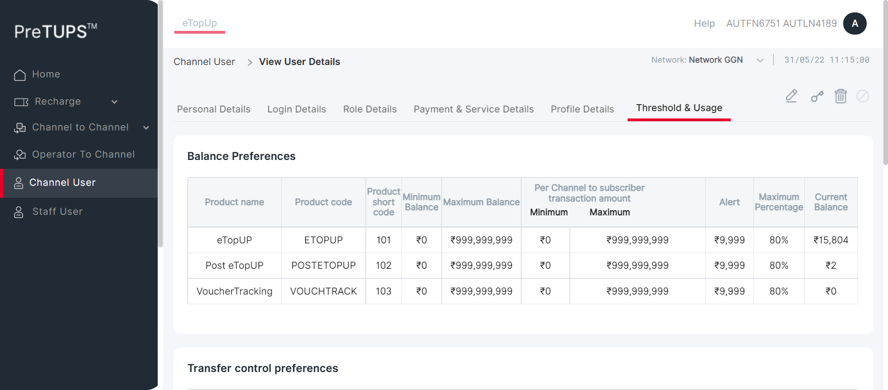 -
PREVAMPVCU6: To verify that Channel User is able to View Channel User for Active Users successfully by Dealer.May 31, 2022 11:15:01 AM 0h 0m 30s+388ms errorPre-Requisite
Status Timestamp Details info_outline 11:15:01 AM Category Code for Dealer: SE info_outline 11:15:01 AM Entered webInterface(Dealer) info_outline 11:15:01 AM webInterface() :: select query: Select WEB_INTERFACE_ALLOWED from categories where category_name= ? info_outline 11:15:01 AM Database Returns: WEB_INTERFACE_ALLOWED (Y) info_outline 11:15:01 AM Exited webInterface() info_outline 11:15:01 AM Entered PerformViewChannelUserActiveUser(Dealer, Retailer, 726142813546886, 2468, Super Distributor, 5) info_outline 11:15:01 AM Login ID Found as: AUT_19995 info_outline 11:15:01 AM Password Found as: com@2468 info_outline 11:15:01 AM LOGINID : AUT_19995 info_outline 11:15:02 AM LoginID found as: AUT_19995 info_outline 11:15:02 AM Password found as: com@2468 info_outline 11:15:02 AM Username found as: AUTFN6751 AUTLN4189 info_outline 11:15:02 AM Trying to select Language info_outline 11:15:03 AM Language selected successfully as: English info_outline 11:15:03 AM Trying to enter Login ID info_outline 11:15:03 AM Login ID entered successfully as: AUT_19995 info_outline 11:15:03 AM Trying to enter Password info_outline 11:15:03 AM Password entered successfully as: com@2468 info_outline 11:15:03 AM Trying to click Login Button info_outline 11:15:03 AM Login button clicked successfully info_outline 11:15:04 AM Error Message Found on Login Screen: info_outline 11:15:04 AM Waiting for spinner info_outline 11:15:04 AM Waiting for spinner to stop info_outline 11:15:05 AM Spinner stopped info_outline 11:15:05 AM Trying clicking Channel User Heading.. info_outline 11:15:06 AM User clicked Channel User Heading. info_outline 11:15:06 AM Waiting for spinner info_outline 11:15:06 AM Waiting for spinner to stop info_outline 11:15:06 AM Spinner stopped info_outline 11:15:06 AM Trying to select Channel User Status... info_outline 11:15:06 AM Status selected successfully as: Active info_outline 11:15:06 AM Trying to click on the User Name of the Child User.. info_outline 11:15:07 AM Clicked on the User Name of the Child User. info_outline 11:15:07 AM Waiting for spinner info_outline 11:15:07 AM Waiting for spinner to stop info_outline 11:15:08 AM Spinner stopped info_outline 11:15:08 AM Trying to check if User Name is displayed info_outline 11:15:08 AM User Name is displayed. info_outline 11:15:08 AM Trying to check if MSISDN is displayed info_outline 11:15:08 AM MSISDN is displayed. info_outline 11:15:08 AM Trying to check if Geography is displayed info_outline 11:15:08 AM Geography is displayed. info_outline 11:15:08 AM Trying to check if External Code is displayed info_outline 11:15:08 AM External Code is displayed. info_outline 11:15:08 AM Trying to check if Domain is displayed info_outline 11:15:08 AM Domain is displayed. info_outline 11:15:08 AM Trying to check if Category is displayed info_outline 11:15:08 AM Category is displayed. info_outline 11:15:08 AM Trying to check if Parent Category is displayed info_outline 11:15:08 AM Parent Category is displayed. info_outline 11:15:08 AM Personal Details Tab fields and data validated. info_outline 11:15:08 AM Trying to click the Login Details Tab info_outline 11:15:08 AM User clicked on the Login Details Tab. info_outline 11:15:08 AM Trying to check if Channel User's Login ID is displayed info_outline 11:15:08 AM Channel User's Login ID is displayed. info_outline 11:15:08 AM Trying to check if MSISDN is displayed info_outline 11:15:08 AM MSISDN is displayed. info_outline 11:15:08 AM Trying to click the Role Details Tab info_outline 11:15:09 AM User clicked on the Role Details Tab. info_outline 11:15:09 AM Checking if System Role exists info_outline 11:15:09 AM System role exists info_outline 11:15:09 AM Checking if Group Role exists info_outline 11:15:09 AM Group role does not exists info_outline 11:15:09 AM Group role exists info_outline 11:15:09 AM Trying to click the Payment and Service Details Tab info_outline 11:15:09 AM User clicked on the Payment and Service Details Tab. info_outline 11:15:09 AM Checking if Payment Information exists info_outline 11:15:09 AM Heading fetched: Payment Information info_outline 11:15:09 AM Payment Information exists info_outline 11:15:09 AM Checking if Suspension Rights exists info_outline 11:15:09 AM Heading fetched: Payment Information info_outline 11:15:09 AM Suspension Rights does not exists info_outline 11:15:09 AM Heading fetched: Suspension Rights info_outline 11:15:09 AM Suspension Rights exists info_outline 11:15:09 AM Checking if Services Information exists info_outline 11:15:09 AM Heading fetched: Payment Information info_outline 11:15:09 AM Services Information does not exists info_outline 11:15:09 AM Heading fetched: Suspension Rights info_outline 11:15:09 AM Services Information does not exists info_outline 11:15:09 AM Heading fetched: Services Information info_outline 11:15:09 AM Services Information exists info_outline 11:15:09 AM Checking if Voucher Type exists info_outline 11:15:09 AM Heading fetched: Payment Information info_outline 11:15:09 AM Service Information does not exists info_outline 11:15:09 AM Heading fetched: Suspension Rights info_outline 11:15:09 AM Service Information does not exists info_outline 11:15:09 AM Heading fetched: Services Information info_outline 11:15:09 AM Service Information does not exists info_outline 11:15:09 AM Heading fetched: Voucher Type info_outline 11:15:09 AM Voucher Type exists info_outline 11:15:09 AM Checking if Low Balance Alert exists info_outline 11:15:09 AM Heading fetched: Payment Information info_outline 11:15:09 AM Low Balance Alert does not exists info_outline 11:15:09 AM Heading fetched: Suspension Rights info_outline 11:15:09 AM Low Balance Alert does not exists info_outline 11:15:09 AM Heading fetched: Services Information info_outline 11:15:09 AM Low Balance Alert does not exists info_outline 11:15:09 AM Heading fetched: Voucher Type info_outline 11:15:09 AM Low Balance Alert does not exists info_outline 11:15:09 AM Heading fetched: Low Balance Alert info_outline 11:15:09 AM Low Balance Alert exists info_outline 11:15:09 AM Trying to click the Profile Details Tab info_outline 11:15:10 AM User clicked on the Profile Details Tab. info_outline 11:15:10 AM Trying to check if Channel User Commission Profile is displayed info_outline 11:15:10 AM Channel User Commission Profile is displayed. info_outline 11:15:10 AM Trying to check if Channel User Transfer Profile is displayed info_outline 11:15:10 AM Channel User Transfer Profile is displayed. info_outline 11:15:10 AM Trying to click the Threshold & Usage Details Tab info_outline 11:15:10 AM User clicked on the Threshold & Usage Details Tab. info_outline 11:15:10 AM Checking if Balance Preferences exists info_outline 11:15:10 AM Balance Preferences exists info_outline 11:15:10 AM Checking if Transfer control preferences exists info_outline 11:15:10 AM Transfer control preferences does not exists info_outline 11:15:10 AM Transfer control preferences exists info_outline 11:15:10 AM View Channel User is successful with all the details in the tabs with Active Users error 11:15:31 AM Error while getting SSH Server Instance : com.jcraft.jsch.JSchException: java.net.ConnectException: Connection timed out: connect check_circle 11:15:31 AM Catalina Log
info_outline 11:15:31 AM -
PREVAMPVCU6: To verify that Channel User is able to View Channel User for Active Users successfully by Agent.May 31, 2022 11:15:31 AM 0h 0m 31s+55ms errorPre-Requisite
Status Timestamp Details info_outline 11:15:32 AM Category Code for Agent: AG info_outline 11:15:32 AM Entered webInterface(Agent) info_outline 11:15:32 AM webInterface() :: select query: Select WEB_INTERFACE_ALLOWED from categories where category_name= ? info_outline 11:15:32 AM Database Returns: WEB_INTERFACE_ALLOWED (Y) info_outline 11:15:32 AM Exited webInterface() info_outline 11:15:32 AM Entered PerformViewChannelUserActiveUser(Agent, Retailer, 726142813546886, 1357, Super Distributor, 5) info_outline 11:15:32 AM Login ID Found as: AUT_08837 info_outline 11:15:32 AM Password Found as: com@2468 info_outline 11:15:32 AM LOGINID : AUT_08837 info_outline 11:15:32 AM LoginID found as: AUT_08837 info_outline 11:15:32 AM Password found as: com@2468 info_outline 11:15:32 AM Username found as: AUTFN7086 AUTLN1035 info_outline 11:15:32 AM Trying to select Language info_outline 11:15:32 AM Language selected successfully as: English info_outline 11:15:32 AM Trying to enter Login ID info_outline 11:15:33 AM Login ID entered successfully as: AUT_08837 info_outline 11:15:33 AM Trying to enter Password info_outline 11:15:33 AM Password entered successfully as: com@2468 info_outline 11:15:33 AM Trying to click Login Button info_outline 11:15:33 AM Login button clicked successfully info_outline 11:15:33 AM Error Message Found on Login Screen: info_outline 11:15:33 AM Waiting for spinner info_outline 11:15:33 AM Waiting for spinner to stop info_outline 11:15:35 AM Spinner stopped info_outline 11:15:35 AM Trying clicking Channel User Heading.. info_outline 11:15:35 AM User clicked Channel User Heading. info_outline 11:15:35 AM Waiting for spinner info_outline 11:15:35 AM Waiting for spinner to stop info_outline 11:15:36 AM Spinner stopped info_outline 11:15:36 AM Trying to select Channel User Status... info_outline 11:15:36 AM Status selected successfully as: Active info_outline 11:15:36 AM Trying to click on the User Name of the Child User.. info_outline 11:15:36 AM Clicked on the User Name of the Child User. info_outline 11:15:36 AM Waiting for spinner info_outline 11:15:36 AM Waiting for spinner to stop info_outline 11:15:37 AM Spinner stopped info_outline 11:15:37 AM Trying to check if User Name is displayed info_outline 11:15:37 AM User Name is displayed. info_outline 11:15:37 AM Trying to check if MSISDN is displayed info_outline 11:15:37 AM MSISDN is displayed. info_outline 11:15:37 AM Trying to check if Geography is displayed info_outline 11:15:37 AM Geography is displayed. info_outline 11:15:37 AM Trying to check if External Code is displayed info_outline 11:15:37 AM External Code is displayed. info_outline 11:15:37 AM Trying to check if Domain is displayed info_outline 11:15:37 AM Domain is displayed. info_outline 11:15:37 AM Trying to check if Category is displayed info_outline 11:15:37 AM Category is displayed. info_outline 11:15:37 AM Trying to check if Parent Category is displayed info_outline 11:15:37 AM Parent Category is displayed. info_outline 11:15:37 AM Personal Details Tab fields and data validated. info_outline 11:15:37 AM Trying to click the Login Details Tab info_outline 11:15:37 AM User clicked on the Login Details Tab. info_outline 11:15:37 AM Trying to check if Channel User's Login ID is displayed info_outline 11:15:38 AM Channel User's Login ID is displayed. info_outline 11:15:38 AM Trying to check if MSISDN is displayed info_outline 11:15:38 AM MSISDN is displayed. info_outline 11:15:38 AM Trying to click the Role Details Tab info_outline 11:15:38 AM User clicked on the Role Details Tab. info_outline 11:15:38 AM Checking if System Role exists info_outline 11:15:38 AM System role exists info_outline 11:15:38 AM Checking if Group Role exists info_outline 11:15:38 AM Group role does not exists info_outline 11:15:38 AM Group role exists info_outline 11:15:38 AM Trying to click the Payment and Service Details Tab info_outline 11:15:38 AM User clicked on the Payment and Service Details Tab. info_outline 11:15:38 AM Checking if Payment Information exists info_outline 11:15:38 AM Heading fetched: Payment Information info_outline 11:15:38 AM Payment Information exists info_outline 11:15:38 AM Checking if Suspension Rights exists info_outline 11:15:38 AM Heading fetched: Payment Information info_outline 11:15:38 AM Suspension Rights does not exists info_outline 11:15:38 AM Heading fetched: Suspension Rights info_outline 11:15:38 AM Suspension Rights exists info_outline 11:15:38 AM Checking if Services Information exists info_outline 11:15:38 AM Heading fetched: Payment Information info_outline 11:15:38 AM Services Information does not exists info_outline 11:15:38 AM Heading fetched: Suspension Rights info_outline 11:15:38 AM Services Information does not exists info_outline 11:15:38 AM Heading fetched: Services Information info_outline 11:15:38 AM Services Information exists info_outline 11:15:38 AM Checking if Voucher Type exists info_outline 11:15:38 AM Heading fetched: Payment Information info_outline 11:15:38 AM Service Information does not exists info_outline 11:15:38 AM Heading fetched: Suspension Rights info_outline 11:15:38 AM Service Information does not exists info_outline 11:15:38 AM Heading fetched: Services Information info_outline 11:15:38 AM Service Information does not exists info_outline 11:15:38 AM Heading fetched: Voucher Type info_outline 11:15:38 AM Voucher Type exists info_outline 11:15:38 AM Checking if Low Balance Alert exists info_outline 11:15:38 AM Heading fetched: Payment Information info_outline 11:15:38 AM Low Balance Alert does not exists info_outline 11:15:38 AM Heading fetched: Suspension Rights info_outline 11:15:38 AM Low Balance Alert does not exists info_outline 11:15:38 AM Heading fetched: Services Information info_outline 11:15:38 AM Low Balance Alert does not exists info_outline 11:15:38 AM Heading fetched: Voucher Type info_outline 11:15:38 AM Low Balance Alert does not exists info_outline 11:15:38 AM Heading fetched: Low Balance Alert info_outline 11:15:38 AM Low Balance Alert exists info_outline 11:15:38 AM Trying to click the Profile Details Tab info_outline 11:15:38 AM User clicked on the Profile Details Tab. info_outline 11:15:38 AM Trying to check if Channel User Commission Profile is displayed info_outline 11:15:38 AM Channel User Commission Profile is displayed. info_outline 11:15:38 AM Trying to check if Channel User Transfer Profile is displayed info_outline 11:15:39 AM Channel User Transfer Profile is displayed. info_outline 11:15:39 AM Trying to click the Threshold & Usage Details Tab info_outline 11:15:39 AM User clicked on the Threshold & Usage Details Tab. info_outline 11:15:39 AM Checking if Balance Preferences exists info_outline 11:15:39 AM Balance Preferences exists info_outline 11:15:39 AM Checking if Transfer control preferences exists info_outline 11:15:39 AM Transfer control preferences does not exists info_outline 11:15:39 AM Transfer control preferences exists info_outline 11:15:39 AM View Channel User is successful with all the details in the tabs with Active Users error 11:16:00 AM Error while getting SSH Server Instance : com.jcraft.jsch.JSchException: java.net.ConnectException: Connection timed out: connect check_circle 11:16:00 AM Catalina Log
info_outline 11:16:00 AM 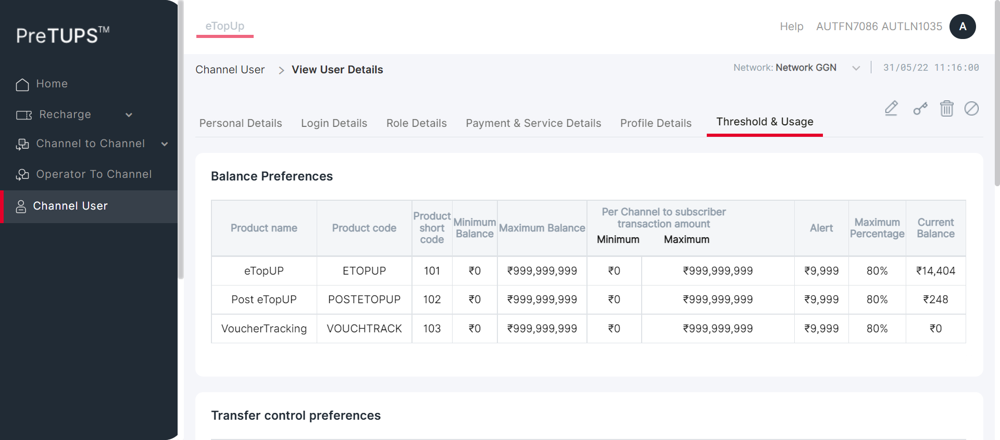 low_priority 11:16:01 AM java.lang.NullPointerException
low_priority 11:16:01 AM java.lang.NullPointerException
low_priority 11:16:01 AM java.lang.NullPointerException
low_priority 11:16:01 AM java.lang.NullPointerException
low_priority 11:16:01 AM java.lang.NullPointerException
low_priority 11:16:02 AM java.lang.NullPointerException
info_outline 11:16:02 AM Entered :: getSystemPreference(TRF_RULE_USER_LEVEL_ALLOW) info_outline 11:16:03 AM Query Repository Returns: DEFAULT_VALUE (true) -
PREVAMPVCU7: To verify that Channel User is able to Hide Filters in View Channel Users successfully by Super Distributor.May 31, 2022 11:16:03 AM 0h 0m 29s+394ms failPre-Requisite
Status Timestamp Details info_outline 11:16:03 AM Category Code for Super Distributor: DIST info_outline 11:16:03 AM Entered webInterface(Super Distributor) info_outline 11:16:03 AM webInterface() :: select query: Select WEB_INTERFACE_ALLOWED from categories where category_name= ? info_outline 11:16:03 AM Database Returns: WEB_INTERFACE_ALLOWED (Y) info_outline 11:16:03 AM Exited webInterface() info_outline 11:16:03 AM Entered PerformViewChannelUserHideFilters(Super Distributor, Dealer, 724699085750159, 1357, Root, 2, Super Distributor) info_outline 11:16:03 AM Login ID Found as: AUT_48675 info_outline 11:16:03 AM Password Found as: com@2468 info_outline 11:16:03 AM LOGINID : AUT_48675 info_outline 11:16:03 AM LoginID found as: AUT_48675 info_outline 11:16:03 AM Password found as: com@2468 info_outline 11:16:03 AM Username found as: AUTFN1393 AUTLN2379 info_outline 11:16:04 AM Trying to select Language info_outline 11:16:04 AM Language selected successfully as: English info_outline 11:16:04 AM Trying to enter Login ID info_outline 11:16:05 AM Login ID entered successfully as: AUT_48675 info_outline 11:16:05 AM Trying to enter Password info_outline 11:16:05 AM Password entered successfully as: com@2468 info_outline 11:16:05 AM Trying to click Login Button info_outline 11:16:05 AM Login button clicked successfully info_outline 11:16:05 AM Error Message Found on Login Screen: info_outline 11:16:05 AM Waiting for spinner info_outline 11:16:05 AM Waiting for spinner to stop info_outline 11:16:07 AM Spinner stopped info_outline 11:16:07 AM Trying clicking Channel User Heading.. info_outline 11:16:07 AM User clicked Channel User Heading. info_outline 11:16:07 AM Waiting for spinner info_outline 11:16:07 AM Waiting for spinner to stop info_outline 11:16:08 AM Spinner stopped info_outline 11:16:08 AM Trying clicking Hide Filter Heading.. info_outline 11:16:08 AM User clicked Hide Filter Heading. info_outline 11:16:08 AM Trying to check Domain in filter.. info_outline 11:16:08 AM Domain in filter is not displayed info_outline 11:16:08 AM Trying to check Category in filter.. info_outline 11:16:08 AM Category in filter is not displayed info_outline 11:16:08 AM Trying to check Geography in filter.. info_outline 11:16:08 AM Geography in filter is not displayed info_outline 11:16:08 AM Trying to check Status in filter.. info_outline 11:16:08 AM Status in filter is not displayed info_outline 11:16:08 AM Trying to enter search by field Of Child User.. info_outline 11:16:09 AM Field entered :724699085750159 info_outline 11:16:09 AM Trying to click on the User Name of the Child User.. info_outline 11:16:09 AM Clicked on the User Name of the Child User. info_outline 11:16:09 AM Waiting for spinner info_outline 11:16:09 AM Waiting for spinner to stop info_outline 11:16:10 AM Spinner stopped info_outline 11:16:10 AM Trying to get the UserName info_outline 11:16:10 AM Fetched User Name of Child User :Mr AUTFN6751 AUTLN4189 info_outline 11:16:10 AM Fetched User Name :AUTFN6751 AUTLN4189 info_outline 11:16:10 AM Trying to get the MSISDN info_outline 11:16:10 AM Fetched MSISDN of Child User :724699085750159 (Primary) info_outline 11:16:10 AM Fetched MSISDN :724699085750159 info_outline 11:16:10 AM Trying to get the Geography info_outline 11:16:10 AM Fetched Geography of Child User : info_outline 11:16:10 AM Trying to get the External Code info_outline 11:16:10 AM Fetched External Code of Child User :516477322 info_outline 11:16:10 AM Trying to get the Channel User Domain info_outline 11:16:10 AM Fetched Domain of Child User :Distributor info_outline 11:16:10 AM Trying to get the Channel User Category info_outline 11:16:10 AM Fetched Category of Child User :Dealer info_outline 11:16:10 AM Trying to get the Channel User's Parent Category info_outline 11:16:10 AM Fetched Parent Category of Child User :Super Distributor info_outline 11:16:11 AM User Name fetched from DataProvider :AUTFN6751 AUTLN4189 info_outline 11:16:11 AM MSISDN fetched from DataProvider :724699085750159 info_outline 11:16:11 AM Geography fetched from DataProvider :AUTNelnh info_outline 11:16:11 AM External Code fetched from DataProvider :516477322 info_outline 11:16:11 AM Domain fetched from DataProvider :Distributor info_outline 11:16:11 AM Category fetched from DataProvider :Dealer info_outline 11:16:11 AM Parent Category fetched from DataProvider :Super Distributor info_outline 11:16:11 AM View Channel User is not successful with expected details in the Personal Details Tab cancel 11:16:11 AM View Channel User is not successful with expected details in the Personal Details Details Tab error 11:16:32 AM Error while getting SSH Server Instance : com.jcraft.jsch.JSchException: java.net.ConnectException: Connection timed out: connect cancel 11:16:32 AM Catalina Log
info_outline 11:16:32 AM -
PREVAMPVCU7: To verify that Channel User is able to Hide Filters in View Channel Users successfully by Super Distributor.May 31, 2022 11:16:32 AM 0h 0m 29s+209ms failPre-Requisite
Status Timestamp Details info_outline 11:16:32 AM Category Code for Super Distributor: DIST info_outline 11:16:32 AM Entered webInterface(Super Distributor) info_outline 11:16:32 AM webInterface() :: select query: Select WEB_INTERFACE_ALLOWED from categories where category_name= ? info_outline 11:16:32 AM Database Returns: WEB_INTERFACE_ALLOWED (Y) info_outline 11:16:32 AM Exited webInterface() info_outline 11:16:32 AM Entered PerformViewChannelUserHideFilters(Super Distributor, Agent, 728916899742500, 1357, Root, 3, Super Distributor) info_outline 11:16:33 AM Login ID Found as: AUT_48675 info_outline 11:16:33 AM Password Found as: com@2468 info_outline 11:16:33 AM LOGINID : AUT_48675 info_outline 11:16:33 AM LoginID found as: AUT_48675 info_outline 11:16:33 AM Password found as: com@2468 info_outline 11:16:33 AM Username found as: AUTFN1393 AUTLN2379 info_outline 11:16:33 AM Trying to select Language info_outline 11:16:34 AM Language selected successfully as: English info_outline 11:16:34 AM Trying to enter Login ID info_outline 11:16:34 AM Login ID entered successfully as: AUT_48675 info_outline 11:16:34 AM Trying to enter Password info_outline 11:16:34 AM Password entered successfully as: com@2468 info_outline 11:16:34 AM Trying to click Login Button info_outline 11:16:34 AM Login button clicked successfully info_outline 11:16:34 AM Error Message Found on Login Screen: info_outline 11:16:34 AM Waiting for spinner info_outline 11:16:34 AM Waiting for spinner to stop info_outline 11:16:37 AM Spinner stopped info_outline 11:16:37 AM Trying clicking Channel User Heading.. info_outline 11:16:37 AM User clicked Channel User Heading. info_outline 11:16:37 AM Waiting for spinner info_outline 11:16:37 AM Waiting for spinner to stop info_outline 11:16:37 AM Spinner stopped info_outline 11:16:37 AM Trying clicking Hide Filter Heading.. info_outline 11:16:37 AM User clicked Hide Filter Heading. info_outline 11:16:37 AM Trying to check Domain in filter.. info_outline 11:16:37 AM Domain in filter is not displayed info_outline 11:16:38 AM Trying to check Category in filter.. info_outline 11:16:38 AM Category in filter is not displayed info_outline 11:16:38 AM Trying to check Geography in filter.. info_outline 11:16:38 AM Geography in filter is not displayed info_outline 11:16:38 AM Trying to check Status in filter.. info_outline 11:16:38 AM Status in filter is not displayed info_outline 11:16:38 AM Trying to enter search by field Of Child User.. info_outline 11:16:38 AM Field entered :728916899742500 info_outline 11:16:38 AM Trying to click on the User Name of the Child User.. info_outline 11:16:38 AM Clicked on the User Name of the Child User. info_outline 11:16:38 AM Waiting for spinner info_outline 11:16:38 AM Waiting for spinner to stop info_outline 11:16:39 AM Spinner stopped info_outline 11:16:39 AM Trying to get the UserName info_outline 11:16:39 AM Fetched User Name of Child User :Mr AUTFN7086 AUTLN1035 info_outline 11:16:39 AM Fetched User Name :AUTFN7086 AUTLN1035 info_outline 11:16:39 AM Trying to get the MSISDN info_outline 11:16:39 AM Fetched MSISDN of Child User :728916899742500 (Primary) info_outline 11:16:39 AM Fetched MSISDN :728916899742500 info_outline 11:16:39 AM Trying to get the Geography info_outline 11:16:40 AM Fetched Geography of Child User : info_outline 11:16:40 AM Trying to get the External Code info_outline 11:16:40 AM Fetched External Code of Child User :038641471 info_outline 11:16:40 AM Trying to get the Channel User Domain info_outline 11:16:40 AM Fetched Domain of Child User :Distributor info_outline 11:16:40 AM Trying to get the Channel User Category info_outline 11:16:40 AM Fetched Category of Child User :Agent info_outline 11:16:40 AM Trying to get the Channel User's Parent Category info_outline 11:16:40 AM Fetched Parent Category of Child User :Super Distributor info_outline 11:16:40 AM User Name fetched from DataProvider :AUTFN7086 AUTLN1035 info_outline 11:16:40 AM MSISDN fetched from DataProvider :728916899742500 info_outline 11:16:40 AM Geography fetched from DataProvider :AUTNelnh info_outline 11:16:40 AM External Code fetched from DataProvider :038641471 info_outline 11:16:40 AM Domain fetched from DataProvider :Distributor info_outline 11:16:40 AM Category fetched from DataProvider :Agent info_outline 11:16:40 AM Parent Category fetched from DataProvider :Super Distributor info_outline 11:16:40 AM View Channel User is not successful with expected details in the Personal Details Tab cancel 11:16:40 AM View Channel User is not successful with expected details in the Personal Details Details Tab error 11:17:01 AM Error while getting SSH Server Instance : com.jcraft.jsch.JSchException: java.net.ConnectException: Connection timed out: connect cancel 11:17:01 AM Catalina Log
info_outline 11:17:01 AM 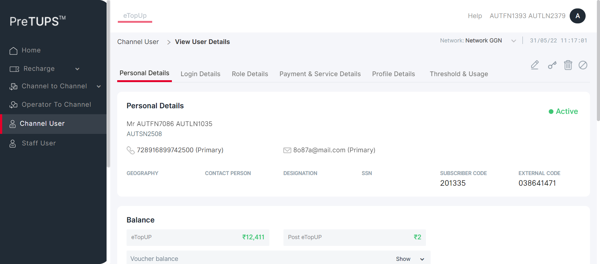 -
PREVAMPVCU7: To verify that Channel User is able to Hide Filters in View Channel Users successfully by Super Distributor.May 31, 2022 11:17:01 AM 0h 0m 4s+490ms skipPre-Requisite
Status Timestamp Details info_outline 11:17:02 AM Category Code for Super Distributor: DIST info_outline 11:17:02 AM Entered webInterface(Super Distributor) info_outline 11:17:02 AM webInterface() :: select query: Select WEB_INTERFACE_ALLOWED from categories where category_name= ? info_outline 11:17:02 AM Database Returns: WEB_INTERFACE_ALLOWED (Y) info_outline 11:17:02 AM Exited webInterface() info_outline 11:17:02 AM Entered PerformViewChannelUserHideFilters(Super Distributor, Agent, 723932049199625, 1357, Root, 4, Dealer) info_outline 11:17:02 AM Login ID Found as: AUT_48675 info_outline 11:17:02 AM Password Found as: com@2468 info_outline 11:17:02 AM LOGINID : AUT_48675 info_outline 11:17:02 AM LoginID found as: AUT_48675 info_outline 11:17:02 AM Password found as: com@2468 info_outline 11:17:02 AM Username found as: AUTFN1393 AUTLN2379 info_outline 11:17:02 AM Trying to select Language info_outline 11:17:03 AM Language selected successfully as: English info_outline 11:17:03 AM Trying to enter Login ID info_outline 11:17:03 AM Login ID entered successfully as: AUT_48675 info_outline 11:17:03 AM Trying to enter Password info_outline 11:17:03 AM Password entered successfully as: com@2468 info_outline 11:17:03 AM Trying to click Login Button info_outline 11:17:04 AM Login button clicked successfully info_outline 11:17:04 AM Error Message Found on Login Screen: info_outline 11:17:04 AM Waiting for spinner info_outline 11:17:04 AM Waiting for spinner to stop info_outline 11:17:06 AM Spinner stopped redo 11:17:06 AM View Channel User cannot be performed by Super Distributor for Agent [ For Parent Dealer ] -
PREVAMPVCU7: To verify that Channel User is able to Hide Filters in View Channel Users successfully by Super Distributor.May 31, 2022 11:17:06 AM 0h 0m 4s+470ms skipPre-Requisite
Status Timestamp Details info_outline 11:17:06 AM Category Code for Super Distributor: DIST info_outline 11:17:06 AM Entered webInterface(Super Distributor) info_outline 11:17:06 AM webInterface() :: select query: Select WEB_INTERFACE_ALLOWED from categories where category_name= ? info_outline 11:17:06 AM Database Returns: WEB_INTERFACE_ALLOWED (Y) info_outline 11:17:06 AM Exited webInterface() info_outline 11:17:06 AM Entered PerformViewChannelUserHideFilters(Super Distributor, Retailer, 726142813546886, 1357, Root, 5, Agent) info_outline 11:17:07 AM Login ID Found as: AUT_48675 info_outline 11:17:07 AM Password Found as: com@2468 info_outline 11:17:07 AM LOGINID : AUT_48675 info_outline 11:17:07 AM LoginID found as: AUT_48675 info_outline 11:17:07 AM Password found as: com@2468 info_outline 11:17:07 AM Username found as: AUTFN1393 AUTLN2379 info_outline 11:17:07 AM Trying to select Language info_outline 11:17:08 AM Language selected successfully as: English info_outline 11:17:08 AM Trying to enter Login ID info_outline 11:17:08 AM Login ID entered successfully as: AUT_48675 info_outline 11:17:08 AM Trying to enter Password info_outline 11:17:08 AM Password entered successfully as: com@2468 info_outline 11:17:08 AM Trying to click Login Button info_outline 11:17:08 AM Login button clicked successfully info_outline 11:17:08 AM Error Message Found on Login Screen: info_outline 11:17:08 AM Waiting for spinner info_outline 11:17:08 AM Waiting for spinner to stop info_outline 11:17:11 AM Spinner stopped redo 11:17:11 AM View Channel User cannot be performed by Super Distributor for Agent [ For Parent Agent ] -
PREVAMPVCU7: To verify that Channel User is able to Hide Filters in View Channel Users successfully by Dealer.May 31, 2022 11:17:11 AM 0h 0m 4s+62ms skipPre-Requisite
Status Timestamp Details info_outline 11:17:11 AM Category Code for Dealer: SE info_outline 11:17:11 AM Entered webInterface(Dealer) info_outline 11:17:11 AM webInterface() :: select query: Select WEB_INTERFACE_ALLOWED from categories where category_name= ? info_outline 11:17:11 AM Database Returns: WEB_INTERFACE_ALLOWED (Y) info_outline 11:17:11 AM Exited webInterface() info_outline 11:17:11 AM Entered PerformViewChannelUserHideFilters(Dealer, Agent, 728916899742500, 2468, Super Distributor, 3, Super Distributor) info_outline 11:17:11 AM Login ID Found as: AUT_19995 info_outline 11:17:11 AM Password Found as: com@2468 info_outline 11:17:11 AM LOGINID : AUT_19995 info_outline 11:17:11 AM LoginID found as: AUT_19995 info_outline 11:17:11 AM Password found as: com@2468 info_outline 11:17:11 AM Username found as: AUTFN6751 AUTLN4189 info_outline 11:17:12 AM Trying to select Language info_outline 11:17:12 AM Language selected successfully as: English info_outline 11:17:12 AM Trying to enter Login ID info_outline 11:17:13 AM Login ID entered successfully as: AUT_19995 info_outline 11:17:13 AM Trying to enter Password info_outline 11:17:13 AM Password entered successfully as: com@2468 info_outline 11:17:13 AM Trying to click Login Button info_outline 11:17:13 AM Login button clicked successfully info_outline 11:17:13 AM Error Message Found on Login Screen: info_outline 11:17:13 AM Waiting for spinner info_outline 11:17:13 AM Waiting for spinner to stop info_outline 11:17:15 AM Spinner stopped redo 11:17:15 AM View Channel User cannot be performed by Dealer for Agent [ For Parent Super Distributor ] -
PREVAMPVCU7: To verify that Channel User is able to Hide Filters in View Channel Users successfully by Dealer.May 31, 2022 11:17:15 AM 0h 0m 28s+540ms failPre-Requisite
Status Timestamp Details info_outline 11:17:15 AM Category Code for Dealer: SE info_outline 11:17:15 AM Entered webInterface(Dealer) info_outline 11:17:15 AM webInterface() :: select query: Select WEB_INTERFACE_ALLOWED from categories where category_name= ? info_outline 11:17:15 AM Database Returns: WEB_INTERFACE_ALLOWED (Y) info_outline 11:17:15 AM Exited webInterface() info_outline 11:17:15 AM Entered PerformViewChannelUserHideFilters(Dealer, Agent, 723932049199625, 2468, Super Distributor, 4, Dealer) info_outline 11:17:16 AM Login ID Found as: AUT_19995 info_outline 11:17:16 AM Password Found as: com@2468 info_outline 11:17:16 AM LOGINID : AUT_19995 info_outline 11:17:16 AM LoginID found as: AUT_19995 info_outline 11:17:16 AM Password found as: com@2468 info_outline 11:17:16 AM Username found as: AUTFN6751 AUTLN4189 info_outline 11:17:16 AM Trying to select Language info_outline 11:17:16 AM Language selected successfully as: English info_outline 11:17:16 AM Trying to enter Login ID info_outline 11:17:17 AM Login ID entered successfully as: AUT_19995 info_outline 11:17:17 AM Trying to enter Password info_outline 11:17:17 AM Password entered successfully as: com@2468 info_outline 11:17:17 AM Trying to click Login Button info_outline 11:17:17 AM Login button clicked successfully info_outline 11:17:17 AM Error Message Found on Login Screen: info_outline 11:17:17 AM Waiting for spinner info_outline 11:17:17 AM Waiting for spinner to stop info_outline 11:17:19 AM Spinner stopped info_outline 11:17:19 AM Trying clicking Channel User Heading.. info_outline 11:17:19 AM User clicked Channel User Heading. info_outline 11:17:19 AM Waiting for spinner info_outline 11:17:19 AM Waiting for spinner to stop info_outline 11:17:20 AM Spinner stopped info_outline 11:17:20 AM Trying clicking Hide Filter Heading.. info_outline 11:17:20 AM User clicked Hide Filter Heading. info_outline 11:17:20 AM Trying to check Domain in filter.. info_outline 11:17:20 AM Domain in filter is not displayed info_outline 11:17:20 AM Trying to check Category in filter.. info_outline 11:17:20 AM Category in filter is not displayed info_outline 11:17:20 AM Trying to check Geography in filter.. info_outline 11:17:20 AM Geography in filter is not displayed info_outline 11:17:20 AM Trying to check Status in filter.. info_outline 11:17:20 AM Status in filter is not displayed info_outline 11:17:20 AM Trying to enter search by field Of Child User.. info_outline 11:17:20 AM Field entered :723932049199625 info_outline 11:17:20 AM Trying to click on the User Name of the Child User.. info_outline 11:17:20 AM Clicked on the User Name of the Child User. info_outline 11:17:20 AM Waiting for spinner info_outline 11:17:20 AM Waiting for spinner to stop info_outline 11:17:22 AM Spinner stopped info_outline 11:17:22 AM Trying to get the UserName info_outline 11:17:22 AM Fetched User Name of Child User :Mr AUTFN5575 AUTLN8034 info_outline 11:17:22 AM Fetched User Name :AUTFN5575 AUTLN8034 info_outline 11:17:22 AM Trying to get the MSISDN info_outline 11:17:22 AM Fetched MSISDN of Child User :723932049199625 (Primary) info_outline 11:17:22 AM Fetched MSISDN :723932049199625 info_outline 11:17:22 AM Trying to get the Geography info_outline 11:17:22 AM Fetched Geography of Child User : info_outline 11:17:22 AM Trying to get the External Code info_outline 11:17:22 AM Fetched External Code of Child User :075353926 info_outline 11:17:22 AM Trying to get the Channel User Domain info_outline 11:17:22 AM Fetched Domain of Child User :Distributor info_outline 11:17:22 AM Trying to get the Channel User Category info_outline 11:17:22 AM Fetched Category of Child User :Agent info_outline 11:17:22 AM Trying to get the Channel User's Parent Category info_outline 11:17:22 AM Fetched Parent Category of Child User :Dealer info_outline 11:17:22 AM User Name fetched from DataProvider :AUTFN5575 AUTLN8034 info_outline 11:17:22 AM MSISDN fetched from DataProvider :723932049199625 info_outline 11:17:22 AM Geography fetched from DataProvider :AUTNelnh info_outline 11:17:22 AM External Code fetched from DataProvider :075353926 info_outline 11:17:22 AM Domain fetched from DataProvider :Distributor info_outline 11:17:22 AM Category fetched from DataProvider :Agent info_outline 11:17:22 AM Parent Category fetched from DataProvider :Dealer info_outline 11:17:22 AM View Channel User is not successful with expected details in the Personal Details Tab cancel 11:17:22 AM View Channel User is not successful with expected details in the Personal Details Details Tab error 11:17:43 AM Error while getting SSH Server Instance : com.jcraft.jsch.JSchException: java.net.ConnectException: Connection timed out: connect cancel 11:17:43 AM Catalina Log
info_outline 11:17:44 AM -
PREVAMPVCU7: To verify that Channel User is able to Hide Filters in View Channel Users successfully by Dealer.May 31, 2022 11:17:44 AM 0h 0m 3s+870ms skipPre-Requisite
Status Timestamp Details info_outline 11:17:44 AM Category Code for Dealer: SE info_outline 11:17:44 AM Entered webInterface(Dealer) info_outline 11:17:44 AM webInterface() :: select query: Select WEB_INTERFACE_ALLOWED from categories where category_name= ? info_outline 11:17:44 AM Database Returns: WEB_INTERFACE_ALLOWED (Y) info_outline 11:17:44 AM Exited webInterface() info_outline 11:17:44 AM Entered PerformViewChannelUserHideFilters(Dealer, Retailer, 726142813546886, 2468, Super Distributor, 5, Agent) info_outline 11:17:44 AM Login ID Found as: AUT_19995 info_outline 11:17:44 AM Password Found as: com@2468 info_outline 11:17:44 AM LOGINID : AUT_19995 info_outline 11:17:44 AM LoginID found as: AUT_19995 info_outline 11:17:44 AM Password found as: com@2468 info_outline 11:17:44 AM Username found as: AUTFN6751 AUTLN4189 info_outline 11:17:45 AM Trying to select Language info_outline 11:17:46 AM Language selected successfully as: English info_outline 11:17:46 AM Trying to enter Login ID info_outline 11:17:46 AM Login ID entered successfully as: AUT_19995 info_outline 11:17:46 AM Trying to enter Password info_outline 11:17:46 AM Password entered successfully as: com@2468 info_outline 11:17:46 AM Trying to click Login Button info_outline 11:17:46 AM Login button clicked successfully info_outline 11:17:46 AM Error Message Found on Login Screen: info_outline 11:17:46 AM Waiting for spinner info_outline 11:17:46 AM Waiting for spinner to stop info_outline 11:17:48 AM Spinner stopped redo 11:17:48 AM View Channel User cannot be performed by Dealer for Agent [ For Parent Agent ] -
PREVAMPVCU7: To verify that Channel User is able to Hide Filters in View Channel Users successfully by Agent.May 31, 2022 11:17:48 AM 0h 0m 28s+459ms failPre-Requisite
Status Timestamp Details info_outline 11:17:48 AM Category Code for Agent: AG info_outline 11:17:48 AM Entered webInterface(Agent) info_outline 11:17:48 AM webInterface() :: select query: Select WEB_INTERFACE_ALLOWED from categories where category_name= ? info_outline 11:17:48 AM Database Returns: WEB_INTERFACE_ALLOWED (Y) info_outline 11:17:48 AM Exited webInterface() info_outline 11:17:48 AM Entered PerformViewChannelUserHideFilters(Agent, Retailer, 726142813546886, 1357, Super Distributor, 5, Agent) info_outline 11:17:48 AM Login ID Found as: AUT_08837 info_outline 11:17:48 AM Password Found as: com@2468 info_outline 11:17:48 AM LOGINID : AUT_08837 info_outline 11:17:49 AM LoginID found as: AUT_08837 info_outline 11:17:49 AM Password found as: com@2468 info_outline 11:17:49 AM Username found as: AUTFN7086 AUTLN1035 info_outline 11:17:49 AM Trying to select Language info_outline 11:17:49 AM Language selected successfully as: English info_outline 11:17:49 AM Trying to enter Login ID info_outline 11:17:50 AM Login ID entered successfully as: AUT_08837 info_outline 11:17:50 AM Trying to enter Password info_outline 11:17:50 AM Password entered successfully as: com@2468 info_outline 11:17:50 AM Trying to click Login Button info_outline 11:17:50 AM Login button clicked successfully info_outline 11:17:50 AM Error Message Found on Login Screen: info_outline 11:17:50 AM Waiting for spinner info_outline 11:17:50 AM Waiting for spinner to stop info_outline 11:17:51 AM Spinner stopped info_outline 11:17:51 AM Trying clicking Channel User Heading.. info_outline 11:17:52 AM User clicked Channel User Heading. info_outline 11:17:52 AM Waiting for spinner info_outline 11:17:52 AM Waiting for spinner to stop info_outline 11:17:52 AM Spinner stopped info_outline 11:17:52 AM Trying clicking Hide Filter Heading.. info_outline 11:17:53 AM User clicked Hide Filter Heading. info_outline 11:17:53 AM Trying to check Domain in filter.. info_outline 11:17:53 AM Domain in filter is not displayed info_outline 11:17:53 AM Trying to check Category in filter.. info_outline 11:17:53 AM Category in filter is not displayed info_outline 11:17:53 AM Trying to check Geography in filter.. info_outline 11:17:53 AM Geography in filter is not displayed info_outline 11:17:53 AM Trying to check Status in filter.. info_outline 11:17:53 AM Status in filter is not displayed info_outline 11:17:53 AM Trying to enter search by field Of Child User.. info_outline 11:17:53 AM Field entered :726142813546886 info_outline 11:17:53 AM Trying to click on the User Name of the Child User.. info_outline 11:17:53 AM Clicked on the User Name of the Child User. info_outline 11:17:53 AM Waiting for spinner info_outline 11:17:53 AM Waiting for spinner to stop info_outline 11:17:54 AM Spinner stopped info_outline 11:17:54 AM Trying to get the UserName info_outline 11:17:54 AM Fetched User Name of Child User :Mr AUTFN4270 AUTLN3932 info_outline 11:17:54 AM Fetched User Name :AUTFN4270 AUTLN3932 info_outline 11:17:54 AM Trying to get the MSISDN info_outline 11:17:54 AM Fetched MSISDN of Child User :726142813546886 (Primary) info_outline 11:17:54 AM Fetched MSISDN :726142813546886 info_outline 11:17:54 AM Trying to get the Geography info_outline 11:17:55 AM Fetched Geography of Child User : info_outline 11:17:55 AM Trying to get the External Code info_outline 11:17:55 AM Fetched External Code of Child User :391446077 info_outline 11:17:55 AM Trying to get the Channel User Domain info_outline 11:17:55 AM Fetched Domain of Child User :Distributor info_outline 11:17:55 AM Trying to get the Channel User Category info_outline 11:17:55 AM Fetched Category of Child User :Retailer info_outline 11:17:55 AM Trying to get the Channel User's Parent Category info_outline 11:17:55 AM Fetched Parent Category of Child User :Agent info_outline 11:17:55 AM User Name fetched from DataProvider :AUTFN4270 AUTLN3932 info_outline 11:17:55 AM MSISDN fetched from DataProvider :726142813546886 info_outline 11:17:55 AM Geography fetched from DataProvider :AUTNelnh info_outline 11:17:55 AM External Code fetched from DataProvider :391446077 info_outline 11:17:55 AM Domain fetched from DataProvider :Distributor info_outline 11:17:55 AM Category fetched from DataProvider :Retailer info_outline 11:17:55 AM Parent Category fetched from DataProvider :Agent info_outline 11:17:55 AM View Channel User is not successful with expected details in the Personal Details Tab cancel 11:17:55 AM View Channel User is not successful with expected details in the Personal Details Details Tab error 11:18:16 AM Error while getting SSH Server Instance : com.jcraft.jsch.JSchException: java.net.ConnectException: Connection timed out: connect cancel 11:18:16 AM Catalina Log
info_outline 11:18:16 AM 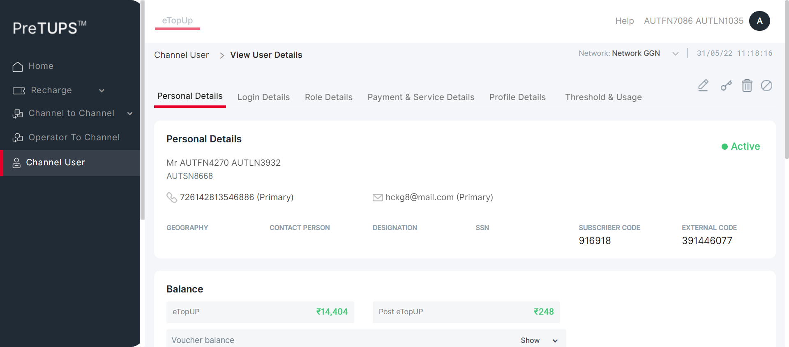
-


info_outline
check_circle
cancel
cancel
error
warning
redo
clear
Categories
-
Pre-Requisite
16
40
Failed: 16
Others: 40
Timestamp
TestName
Status
May 31, 2022 10:56:02 AM
[Pre-Requisite]View Channel User Revamp.PREVAMPVCU1: To verify that Channel User is able to View Channel User for Dealer with MSISDN successfully by Super Distributor.
fail
May 31, 2022 10:56:34 AM
[Pre-Requisite]View Channel User Revamp.PREVAMPVCU1: To verify that Channel User is able to View Channel User for Agent with MSISDN successfully by Super Distributor.
fail
May 31, 2022 10:57:33 AM
[Pre-Requisite]View Channel User Revamp.PREVAMPVCU1: To verify that Channel User is able to View Channel User for Agent with MSISDN successfully by Super Distributor.
skip
May 31, 2022 10:57:37 AM
[Pre-Requisite]View Channel User Revamp.PREVAMPVCU1: To verify that Channel User is able to View Channel User for Retailer with MSISDN successfully by Super Distributor.
skip
May 31, 2022 10:57:42 AM
[Pre-Requisite]View Channel User Revamp.PREVAMPVCU1: To verify that Channel User is able to View Channel User for Agent with MSISDN successfully by Dealer.
skip
May 31, 2022 10:57:45 AM
[Pre-Requisite]View Channel User Revamp.PREVAMPVCU1: To verify that Channel User is able to View Channel User for Agent with MSISDN successfully by Dealer.
fail
May 31, 2022 10:58:14 AM
[Pre-Requisite]View Channel User Revamp.PREVAMPVCU1: To verify that Channel User is able to View Channel User for Retailer with MSISDN successfully by Dealer.
skip
May 31, 2022 10:58:18 AM
[Pre-Requisite]View Channel User Revamp.PREVAMPVCU1: To verify that Channel User is able to View Channel User for Retailer with MSISDN successfully by Agent.
fail
May 31, 2022 10:58:49 AM
[Pre-Requisite]View Channel User Revamp.PREVAMPVCU2: To verify that Channel User is able to View Channel User for Dealer with LoginID successfully by Super Distributor.
fail
May 31, 2022 10:59:18 AM
[Pre-Requisite]View Channel User Revamp.PREVAMPVCU2: To verify that Channel User is able to View Channel User for Agent with LoginID successfully by Super Distributor.
fail
May 31, 2022 10:59:47 AM
[Pre-Requisite]View Channel User Revamp.PREVAMPVCU2: To verify that Channel User is able to View Channel User for Agent with LoginID successfully by Super Distributor.
skip
May 31, 2022 10:59:52 AM
[Pre-Requisite]View Channel User Revamp.PREVAMPVCU2: To verify that Channel User is able to View Channel User for Retailer with LoginID successfully by Super Distributor.
skip
May 31, 2022 10:59:57 AM
[Pre-Requisite]View Channel User Revamp.PREVAMPVCU2: To verify that Channel User is able to View Channel User for Agent with LoginID successfully by Dealer.
skip
May 31, 2022 11:00:02 AM
[Pre-Requisite]View Channel User Revamp.PREVAMPVCU2: To verify that Channel User is able to View Channel User for Agent with LoginID successfully by Dealer.
fail
May 31, 2022 11:00:30 AM
[Pre-Requisite]View Channel User Revamp.PREVAMPVCU2: To verify that Channel User is able to View Channel User for Retailer with LoginID successfully by Dealer.
skip
May 31, 2022 11:00:35 AM
[Pre-Requisite]View Channel User Revamp.PREVAMPVCU2: To verify that Channel User is able to View Channel User for Retailer with LoginID successfully by Agent.
fail
May 31, 2022 11:02:04 AM
[Pre-Requisite]View Channel User Revamp.PREVAMPVCU3: To verify that Channel User is able to View Channel User for Dealer with User Name successfully by Super Distributor.
fail
May 31, 2022 11:02:33 AM
[Pre-Requisite]View Channel User Revamp.PREVAMPVCU3: To verify that Channel User is able to View Channel User for Agent with User Name successfully by Super Distributor.
fail
May 31, 2022 11:03:02 AM
[Pre-Requisite]View Channel User Revamp.PREVAMPVCU3: To verify that Channel User is able to View Channel User for Agent with User Name successfully by Super Distributor.
skip
May 31, 2022 11:03:07 AM
[Pre-Requisite]View Channel User Revamp.PREVAMPVCU3: To verify that Channel User is able to View Channel User for Retailer with User Name successfully by Super Distributor.
skip
May 31, 2022 11:03:12 AM
[Pre-Requisite]View Channel User Revamp.PREVAMPVCU3: To verify that Channel User is able to View Channel User for Agent with User Name successfully by Dealer.
skip
May 31, 2022 11:03:16 AM
[Pre-Requisite]View Channel User Revamp.PREVAMPVCU3: To verify that Channel User is able to View Channel User for Agent with User Name successfully by Dealer.
fail
May 31, 2022 11:03:44 AM
[Pre-Requisite]View Channel User Revamp.PREVAMPVCU3: To verify that Channel User is able to View Channel User for Retailer with User Name successfully by Dealer.
skip
May 31, 2022 11:03:49 AM
[Pre-Requisite]View Channel User Revamp.PREVAMPVCU3: To verify that Channel User is able to View Channel User for Retailer with User Name successfully by Agent.
fail
May 31, 2022 11:04:18 AM
[Pre-Requisite]View Channel User Revamp.PREVAMPVCU4: To verify that Channel User is able to reset the fields in View Channel User.
error
May 31, 2022 11:04:47 AM
[Pre-Requisite]View Channel User Revamp.PREVAMPVCU4: To verify that Channel User is able to reset the fields in View Channel User.
error
May 31, 2022 11:05:14 AM
[Pre-Requisite]View Channel User Revamp.PREVAMPVCU4: To verify that Channel User is able to reset the fields in View Channel User.
error
May 31, 2022 11:05:41 AM
[Pre-Requisite]View Channel User Revamp.PREVAMPVCU4: To verify that Channel User is able to reset the fields in View Channel User.
error
May 31, 2022 11:06:08 AM
[Pre-Requisite]View Channel User Revamp.PREVAMPVCU4: To verify that Channel User is able to reset the fields in View Channel User.
error
May 31, 2022 11:06:34 AM
[Pre-Requisite]View Channel User Revamp.PREVAMPVCU4: To verify that Channel User is able to reset the fields in View Channel User.
error
May 31, 2022 11:07:01 AM
[Pre-Requisite]View Channel User Revamp.PREVAMPVCU4: To verify that Channel User is able to reset the fields in View Channel User.
error
May 31, 2022 11:07:28 AM
[Pre-Requisite]View Channel User Revamp.PREVAMPVCU4: To verify that Channel User is able to reset the fields in View Channel User.
error
May 31, 2022 11:07:58 AM
[Pre-Requisite]View Channel User Revamp.PREVAMPVCU5: To verify that Channel User is able to not able to View Channel User with Invalid Search Field.
error
May 31, 2022 11:08:24 AM
[Pre-Requisite]View Channel User Revamp.PREVAMPVCU5: To verify that Channel User is able to not able to View Channel User with Invalid Search Field.
error
May 31, 2022 11:08:51 AM
[Pre-Requisite]View Channel User Revamp.PREVAMPVCU5: To verify that Channel User is able to not able to View Channel User with Invalid Search Field.
error
May 31, 2022 11:09:17 AM
[Pre-Requisite]View Channel User Revamp.PREVAMPVCU5: To verify that Channel User is able to not able to View Channel User with Invalid Search Field.
error
May 31, 2022 11:09:44 AM
[Pre-Requisite]View Channel User Revamp.PREVAMPVCU5: To verify that Channel User is able to not able to View Channel User with Invalid Search Field.
error
May 31, 2022 11:10:10 AM
[Pre-Requisite]View Channel User Revamp.PREVAMPVCU5: To verify that Channel User is able to not able to View Channel User with Invalid Search Field.
error
May 31, 2022 11:11:07 AM
[Pre-Requisite]View Channel User Revamp.PREVAMPVCU5: To verify that Channel User is able to not able to View Channel User with Invalid Search Field.
error
May 31, 2022 11:11:34 AM
[Pre-Requisite]View Channel User Revamp.PREVAMPVCU5: To verify that Channel User is able to not able to View Channel User with Invalid Search Field.
error
May 31, 2022 11:12:02 AM
[Pre-Requisite]View Channel User Revamp.PREVAMPVCU6: To verify that Channel User is able to View Channel User for Active Users successfully by Super Distributor.
error
May 31, 2022 11:12:33 AM
[Pre-Requisite]View Channel User Revamp.PREVAMPVCU6: To verify that Channel User is able to View Channel User for Active Users successfully by Super Distributor.
error
May 31, 2022 11:13:02 AM
[Pre-Requisite]View Channel User Revamp.PREVAMPVCU6: To verify that Channel User is able to View Channel User for Active Users successfully by Super Distributor.
error
May 31, 2022 11:13:32 AM
[Pre-Requisite]View Channel User Revamp.PREVAMPVCU6: To verify that Channel User is able to View Channel User for Active Users successfully by Super Distributor.
error
May 31, 2022 11:14:01 AM
[Pre-Requisite]View Channel User Revamp.PREVAMPVCU6: To verify that Channel User is able to View Channel User for Active Users successfully by Dealer.
error
May 31, 2022 11:14:30 AM
[Pre-Requisite]View Channel User Revamp.PREVAMPVCU6: To verify that Channel User is able to View Channel User for Active Users successfully by Dealer.
error
May 31, 2022 11:15:01 AM
[Pre-Requisite]View Channel User Revamp.PREVAMPVCU6: To verify that Channel User is able to View Channel User for Active Users successfully by Dealer.
error
May 31, 2022 11:15:31 AM
[Pre-Requisite]View Channel User Revamp.PREVAMPVCU6: To verify that Channel User is able to View Channel User for Active Users successfully by Agent.
error
May 31, 2022 11:16:03 AM
[Pre-Requisite]View Channel User Revamp.PREVAMPVCU7: To verify that Channel User is able to Hide Filters in View Channel Users successfully by Super Distributor.
fail
May 31, 2022 11:16:32 AM
[Pre-Requisite]View Channel User Revamp.PREVAMPVCU7: To verify that Channel User is able to Hide Filters in View Channel Users successfully by Super Distributor.
fail
May 31, 2022 11:17:01 AM
[Pre-Requisite]View Channel User Revamp.PREVAMPVCU7: To verify that Channel User is able to Hide Filters in View Channel Users successfully by Super Distributor.
skip
May 31, 2022 11:17:06 AM
[Pre-Requisite]View Channel User Revamp.PREVAMPVCU7: To verify that Channel User is able to Hide Filters in View Channel Users successfully by Super Distributor.
skip
May 31, 2022 11:17:11 AM
[Pre-Requisite]View Channel User Revamp.PREVAMPVCU7: To verify that Channel User is able to Hide Filters in View Channel Users successfully by Dealer.
skip
May 31, 2022 11:17:15 AM
[Pre-Requisite]View Channel User Revamp.PREVAMPVCU7: To verify that Channel User is able to Hide Filters in View Channel Users successfully by Dealer.
fail
May 31, 2022 11:17:44 AM
[Pre-Requisite]View Channel User Revamp.PREVAMPVCU7: To verify that Channel User is able to Hide Filters in View Channel Users successfully by Dealer.
skip
May 31, 2022 11:17:48 AM
[Pre-Requisite]View Channel User Revamp.PREVAMPVCU7: To verify that Channel User is able to Hide Filters in View Channel Users successfully by Agent.
fail
Pre-Requisite
16
40
Failed: 16
Others: 40
| Timestamp | TestName | Status |
|---|---|---|
| May 31, 2022 10:56:02 AM | [Pre-Requisite]View Channel User Revamp.PREVAMPVCU1: To verify that Channel User is able to View Channel User for Dealer with MSISDN successfully by Super Distributor. | fail |
| May 31, 2022 10:56:34 AM | [Pre-Requisite]View Channel User Revamp.PREVAMPVCU1: To verify that Channel User is able to View Channel User for Agent with MSISDN successfully by Super Distributor. | fail |
| May 31, 2022 10:57:33 AM | [Pre-Requisite]View Channel User Revamp.PREVAMPVCU1: To verify that Channel User is able to View Channel User for Agent with MSISDN successfully by Super Distributor. | skip |
| May 31, 2022 10:57:37 AM | [Pre-Requisite]View Channel User Revamp.PREVAMPVCU1: To verify that Channel User is able to View Channel User for Retailer with MSISDN successfully by Super Distributor. | skip |
| May 31, 2022 10:57:42 AM | [Pre-Requisite]View Channel User Revamp.PREVAMPVCU1: To verify that Channel User is able to View Channel User for Agent with MSISDN successfully by Dealer. | skip |
| May 31, 2022 10:57:45 AM | [Pre-Requisite]View Channel User Revamp.PREVAMPVCU1: To verify that Channel User is able to View Channel User for Agent with MSISDN successfully by Dealer. | fail |
| May 31, 2022 10:58:14 AM | [Pre-Requisite]View Channel User Revamp.PREVAMPVCU1: To verify that Channel User is able to View Channel User for Retailer with MSISDN successfully by Dealer. | skip |
| May 31, 2022 10:58:18 AM | [Pre-Requisite]View Channel User Revamp.PREVAMPVCU1: To verify that Channel User is able to View Channel User for Retailer with MSISDN successfully by Agent. | fail |
| May 31, 2022 10:58:49 AM | [Pre-Requisite]View Channel User Revamp.PREVAMPVCU2: To verify that Channel User is able to View Channel User for Dealer with LoginID successfully by Super Distributor. | fail |
| May 31, 2022 10:59:18 AM | [Pre-Requisite]View Channel User Revamp.PREVAMPVCU2: To verify that Channel User is able to View Channel User for Agent with LoginID successfully by Super Distributor. | fail |
| May 31, 2022 10:59:47 AM | [Pre-Requisite]View Channel User Revamp.PREVAMPVCU2: To verify that Channel User is able to View Channel User for Agent with LoginID successfully by Super Distributor. | skip |
| May 31, 2022 10:59:52 AM | [Pre-Requisite]View Channel User Revamp.PREVAMPVCU2: To verify that Channel User is able to View Channel User for Retailer with LoginID successfully by Super Distributor. | skip |
| May 31, 2022 10:59:57 AM | [Pre-Requisite]View Channel User Revamp.PREVAMPVCU2: To verify that Channel User is able to View Channel User for Agent with LoginID successfully by Dealer. | skip |
| May 31, 2022 11:00:02 AM | [Pre-Requisite]View Channel User Revamp.PREVAMPVCU2: To verify that Channel User is able to View Channel User for Agent with LoginID successfully by Dealer. | fail |
| May 31, 2022 11:00:30 AM | [Pre-Requisite]View Channel User Revamp.PREVAMPVCU2: To verify that Channel User is able to View Channel User for Retailer with LoginID successfully by Dealer. | skip |
| May 31, 2022 11:00:35 AM | [Pre-Requisite]View Channel User Revamp.PREVAMPVCU2: To verify that Channel User is able to View Channel User for Retailer with LoginID successfully by Agent. | fail |
| May 31, 2022 11:02:04 AM | [Pre-Requisite]View Channel User Revamp.PREVAMPVCU3: To verify that Channel User is able to View Channel User for Dealer with User Name successfully by Super Distributor. | fail |
| May 31, 2022 11:02:33 AM | [Pre-Requisite]View Channel User Revamp.PREVAMPVCU3: To verify that Channel User is able to View Channel User for Agent with User Name successfully by Super Distributor. | fail |
| May 31, 2022 11:03:02 AM | [Pre-Requisite]View Channel User Revamp.PREVAMPVCU3: To verify that Channel User is able to View Channel User for Agent with User Name successfully by Super Distributor. | skip |
| May 31, 2022 11:03:07 AM | [Pre-Requisite]View Channel User Revamp.PREVAMPVCU3: To verify that Channel User is able to View Channel User for Retailer with User Name successfully by Super Distributor. | skip |
| May 31, 2022 11:03:12 AM | [Pre-Requisite]View Channel User Revamp.PREVAMPVCU3: To verify that Channel User is able to View Channel User for Agent with User Name successfully by Dealer. | skip |
| May 31, 2022 11:03:16 AM | [Pre-Requisite]View Channel User Revamp.PREVAMPVCU3: To verify that Channel User is able to View Channel User for Agent with User Name successfully by Dealer. | fail |
| May 31, 2022 11:03:44 AM | [Pre-Requisite]View Channel User Revamp.PREVAMPVCU3: To verify that Channel User is able to View Channel User for Retailer with User Name successfully by Dealer. | skip |
| May 31, 2022 11:03:49 AM | [Pre-Requisite]View Channel User Revamp.PREVAMPVCU3: To verify that Channel User is able to View Channel User for Retailer with User Name successfully by Agent. | fail |
| May 31, 2022 11:04:18 AM | [Pre-Requisite]View Channel User Revamp.PREVAMPVCU4: To verify that Channel User is able to reset the fields in View Channel User. | error |
| May 31, 2022 11:04:47 AM | [Pre-Requisite]View Channel User Revamp.PREVAMPVCU4: To verify that Channel User is able to reset the fields in View Channel User. | error |
| May 31, 2022 11:05:14 AM | [Pre-Requisite]View Channel User Revamp.PREVAMPVCU4: To verify that Channel User is able to reset the fields in View Channel User. | error |
| May 31, 2022 11:05:41 AM | [Pre-Requisite]View Channel User Revamp.PREVAMPVCU4: To verify that Channel User is able to reset the fields in View Channel User. | error |
| May 31, 2022 11:06:08 AM | [Pre-Requisite]View Channel User Revamp.PREVAMPVCU4: To verify that Channel User is able to reset the fields in View Channel User. | error |
| May 31, 2022 11:06:34 AM | [Pre-Requisite]View Channel User Revamp.PREVAMPVCU4: To verify that Channel User is able to reset the fields in View Channel User. | error |
| May 31, 2022 11:07:01 AM | [Pre-Requisite]View Channel User Revamp.PREVAMPVCU4: To verify that Channel User is able to reset the fields in View Channel User. | error |
| May 31, 2022 11:07:28 AM | [Pre-Requisite]View Channel User Revamp.PREVAMPVCU4: To verify that Channel User is able to reset the fields in View Channel User. | error |
| May 31, 2022 11:07:58 AM | [Pre-Requisite]View Channel User Revamp.PREVAMPVCU5: To verify that Channel User is able to not able to View Channel User with Invalid Search Field. | error |
| May 31, 2022 11:08:24 AM | [Pre-Requisite]View Channel User Revamp.PREVAMPVCU5: To verify that Channel User is able to not able to View Channel User with Invalid Search Field. | error |
| May 31, 2022 11:08:51 AM | [Pre-Requisite]View Channel User Revamp.PREVAMPVCU5: To verify that Channel User is able to not able to View Channel User with Invalid Search Field. | error |
| May 31, 2022 11:09:17 AM | [Pre-Requisite]View Channel User Revamp.PREVAMPVCU5: To verify that Channel User is able to not able to View Channel User with Invalid Search Field. | error |
| May 31, 2022 11:09:44 AM | [Pre-Requisite]View Channel User Revamp.PREVAMPVCU5: To verify that Channel User is able to not able to View Channel User with Invalid Search Field. | error |
| May 31, 2022 11:10:10 AM | [Pre-Requisite]View Channel User Revamp.PREVAMPVCU5: To verify that Channel User is able to not able to View Channel User with Invalid Search Field. | error |
| May 31, 2022 11:11:07 AM | [Pre-Requisite]View Channel User Revamp.PREVAMPVCU5: To verify that Channel User is able to not able to View Channel User with Invalid Search Field. | error |
| May 31, 2022 11:11:34 AM | [Pre-Requisite]View Channel User Revamp.PREVAMPVCU5: To verify that Channel User is able to not able to View Channel User with Invalid Search Field. | error |
| May 31, 2022 11:12:02 AM | [Pre-Requisite]View Channel User Revamp.PREVAMPVCU6: To verify that Channel User is able to View Channel User for Active Users successfully by Super Distributor. | error |
| May 31, 2022 11:12:33 AM | [Pre-Requisite]View Channel User Revamp.PREVAMPVCU6: To verify that Channel User is able to View Channel User for Active Users successfully by Super Distributor. | error |
| May 31, 2022 11:13:02 AM | [Pre-Requisite]View Channel User Revamp.PREVAMPVCU6: To verify that Channel User is able to View Channel User for Active Users successfully by Super Distributor. | error |
| May 31, 2022 11:13:32 AM | [Pre-Requisite]View Channel User Revamp.PREVAMPVCU6: To verify that Channel User is able to View Channel User for Active Users successfully by Super Distributor. | error |
| May 31, 2022 11:14:01 AM | [Pre-Requisite]View Channel User Revamp.PREVAMPVCU6: To verify that Channel User is able to View Channel User for Active Users successfully by Dealer. | error |
| May 31, 2022 11:14:30 AM | [Pre-Requisite]View Channel User Revamp.PREVAMPVCU6: To verify that Channel User is able to View Channel User for Active Users successfully by Dealer. | error |
| May 31, 2022 11:15:01 AM | [Pre-Requisite]View Channel User Revamp.PREVAMPVCU6: To verify that Channel User is able to View Channel User for Active Users successfully by Dealer. | error |
| May 31, 2022 11:15:31 AM | [Pre-Requisite]View Channel User Revamp.PREVAMPVCU6: To verify that Channel User is able to View Channel User for Active Users successfully by Agent. | error |
| May 31, 2022 11:16:03 AM | [Pre-Requisite]View Channel User Revamp.PREVAMPVCU7: To verify that Channel User is able to Hide Filters in View Channel Users successfully by Super Distributor. | fail |
| May 31, 2022 11:16:32 AM | [Pre-Requisite]View Channel User Revamp.PREVAMPVCU7: To verify that Channel User is able to Hide Filters in View Channel Users successfully by Super Distributor. | fail |
| May 31, 2022 11:17:01 AM | [Pre-Requisite]View Channel User Revamp.PREVAMPVCU7: To verify that Channel User is able to Hide Filters in View Channel Users successfully by Super Distributor. | skip |
| May 31, 2022 11:17:06 AM | [Pre-Requisite]View Channel User Revamp.PREVAMPVCU7: To verify that Channel User is able to Hide Filters in View Channel Users successfully by Super Distributor. | skip |
| May 31, 2022 11:17:11 AM | [Pre-Requisite]View Channel User Revamp.PREVAMPVCU7: To verify that Channel User is able to Hide Filters in View Channel Users successfully by Dealer. | skip |
| May 31, 2022 11:17:15 AM | [Pre-Requisite]View Channel User Revamp.PREVAMPVCU7: To verify that Channel User is able to Hide Filters in View Channel Users successfully by Dealer. | fail |
| May 31, 2022 11:17:44 AM | [Pre-Requisite]View Channel User Revamp.PREVAMPVCU7: To verify that Channel User is able to Hide Filters in View Channel Users successfully by Dealer. | skip |
| May 31, 2022 11:17:48 AM | [Pre-Requisite]View Channel User Revamp.PREVAMPVCU7: To verify that Channel User is able to Hide Filters in View Channel Users successfully by Agent. | fail |
Exceptions
-
org.openqa.selenium.TimeoutException
1
Timestamp
TestName
Status
May 31, 2022 11:00:35 AM
[Pre-Requisite]View Channel User Revamp.PREVAMPVCU2: To verify that Channel User is able to View Channel User for Retailer with LoginID successfully by Agent.
org.openqa.selenium.TimeoutException: Expected condition failed: waiting for visibility of element located by By.xpath: //a[@id='channelUser'] (tried for 30 second(s) with 500 milliseconds interval)
at org.openqa.selenium.support.ui.WebDriverWait.timeoutException(WebDriverWait.java:82)
at org.openqa.selenium.support.ui.FluentWait.until(FluentWait.java:272)
at angular.pageobjects.ViewChannelUser.ViewChannelUser.clickChannelUserHeading(ViewChannelUser.java:81)
at angular.feature.ViewChannelUserRevamp.PerformViewChannelUserByLoginID(ViewChannelUserRevamp.java:168)
at angular.testscripts.prereuisitesangular.PreRequisite_ViewChannelUser_Revamp.TC_02_Test_PerformViewChannelUserByLoginID(PreRequisite_ViewChannelUser_Revamp.java:62)
at sun.reflect.NativeMethodAccessorImpl.invoke0(Native Method)
at sun.reflect.NativeMethodAccessorImpl.invoke(Unknown Source)
at sun.reflect.DelegatingMethodAccessorImpl.invoke(Unknown Source)
at java.lang.reflect.Method.invoke(Unknown Source)
at org.testng.internal.MethodInvocationHelper.invokeMethod(MethodInvocationHelper.java:124)
at org.testng.internal.Invoker.invokeMethod(Invoker.java:580)
at org.testng.internal.Invoker.invokeTestMethod(Invoker.java:716)
at org.testng.internal.Invoker.invokeTestMethods(Invoker.java:988)
at org.testng.internal.TestMethodWorker.invokeTestMethods(TestMethodWorker.java:125)
at org.testng.internal.TestMethodWorker.run(TestMethodWorker.java:109)
at org.testng.TestRunner.privateRun(TestRunner.java:648)
at org.testng.TestRunner.run(TestRunner.java:505)
at org.testng.SuiteRunner.runTest(SuiteRunner.java:455)
at org.testng.SuiteRunner.runSequentially(SuiteRunner.java:450)
at org.testng.SuiteRunner.privateRun(SuiteRunner.java:415)
at org.testng.SuiteRunner.run(SuiteRunner.java:364)
at org.testng.SuiteRunnerWorker.runSuite(SuiteRunnerWorker.java:52)
at org.testng.SuiteRunnerWorker.run(SuiteRunnerWorker.java:84)
at org.testng.TestNG.runSuitesSequentially(TestNG.java:1208)
at org.testng.TestNG.runSuitesLocally(TestNG.java:1137)
at org.testng.TestNG.runSuites(TestNG.java:1049)
at org.testng.TestNG.run(TestNG.java:1017)
at org.testng.remote.AbstractRemoteTestNG.run(AbstractRemoteTestNG.java:115)
at org.testng.remote.RemoteTestNG.initAndRun(RemoteTestNG.java:251)
at org.testng.remote.RemoteTestNG.main(RemoteTestNG.java:77)
Caused by: org.openqa.selenium.NoSuchElementException: Cannot locate an element using By.xpath: //a[@id='channelUser']
For documentation on this error, please visit: http://seleniumhq.org/exceptions/no_such_element.html
Build info: version: '3.10.0', revision: '176b4a9', time: '2018-03-02T19:03:16.397Z'
System info: host: 'MCKL-20005142', ip: '192.168.1.38', os.name: 'Windows 10', os.arch: 'amd64', os.version: '10.0', java.version: '1.8.0_291'
Driver info: driver.version: unknown
at org.openqa.selenium.support.ui.ExpectedConditions.lambda$findElement$0(ExpectedConditions.java:896)
at java.util.Optional.orElseThrow(Unknown Source)
at org.openqa.selenium.support.ui.ExpectedConditions.findElement(ExpectedConditions.java:895)
at org.openqa.selenium.support.ui.ExpectedConditions.access$000(ExpectedConditions.java:44)
at org.openqa.selenium.support.ui.ExpectedConditions$7.apply(ExpectedConditions.java:206)
at org.openqa.selenium.support.ui.ExpectedConditions$7.apply(ExpectedConditions.java:202)
at org.openqa.selenium.support.ui.FluentWait.until(FluentWait.java:249)
... 28 more
org.openqa.selenium.TimeoutException
1
| Timestamp | TestName | Status |
|---|---|---|
| May 31, 2022 11:00:35 AM | [Pre-Requisite]View Channel User Revamp.PREVAMPVCU2: To verify that Channel User is able to View Channel User for Retailer with LoginID successfully by Agent. | org.openqa.selenium.TimeoutException: Expected condition failed: waiting for visibility of element located by By.xpath: //a[@id='channelUser'] (tried for 30 second(s) with 500 milliseconds interval) at org.openqa.selenium.support.ui.WebDriverWait.timeoutException(WebDriverWait.java:82) at org.openqa.selenium.support.ui.FluentWait.until(FluentWait.java:272) at angular.pageobjects.ViewChannelUser.ViewChannelUser.clickChannelUserHeading(ViewChannelUser.java:81) at angular.feature.ViewChannelUserRevamp.PerformViewChannelUserByLoginID(ViewChannelUserRevamp.java:168) at angular.testscripts.prereuisitesangular.PreRequisite_ViewChannelUser_Revamp.TC_02_Test_PerformViewChannelUserByLoginID(PreRequisite_ViewChannelUser_Revamp.java:62) at sun.reflect.NativeMethodAccessorImpl.invoke0(Native Method) at sun.reflect.NativeMethodAccessorImpl.invoke(Unknown Source) at sun.reflect.DelegatingMethodAccessorImpl.invoke(Unknown Source) at java.lang.reflect.Method.invoke(Unknown Source) at org.testng.internal.MethodInvocationHelper.invokeMethod(MethodInvocationHelper.java:124) at org.testng.internal.Invoker.invokeMethod(Invoker.java:580) at org.testng.internal.Invoker.invokeTestMethod(Invoker.java:716) at org.testng.internal.Invoker.invokeTestMethods(Invoker.java:988) at org.testng.internal.TestMethodWorker.invokeTestMethods(TestMethodWorker.java:125) at org.testng.internal.TestMethodWorker.run(TestMethodWorker.java:109) at org.testng.TestRunner.privateRun(TestRunner.java:648) at org.testng.TestRunner.run(TestRunner.java:505) at org.testng.SuiteRunner.runTest(SuiteRunner.java:455) at org.testng.SuiteRunner.runSequentially(SuiteRunner.java:450) at org.testng.SuiteRunner.privateRun(SuiteRunner.java:415) at org.testng.SuiteRunner.run(SuiteRunner.java:364) at org.testng.SuiteRunnerWorker.runSuite(SuiteRunnerWorker.java:52) at org.testng.SuiteRunnerWorker.run(SuiteRunnerWorker.java:84) at org.testng.TestNG.runSuitesSequentially(TestNG.java:1208) at org.testng.TestNG.runSuitesLocally(TestNG.java:1137) at org.testng.TestNG.runSuites(TestNG.java:1049) at org.testng.TestNG.run(TestNG.java:1017) at org.testng.remote.AbstractRemoteTestNG.run(AbstractRemoteTestNG.java:115) at org.testng.remote.RemoteTestNG.initAndRun(RemoteTestNG.java:251) at org.testng.remote.RemoteTestNG.main(RemoteTestNG.java:77) Caused by: org.openqa.selenium.NoSuchElementException: Cannot locate an element using By.xpath: //a[@id='channelUser'] For documentation on this error, please visit: http://seleniumhq.org/exceptions/no_such_element.html Build info: version: '3.10.0', revision: '176b4a9', time: '2018-03-02T19:03:16.397Z' System info: host: 'MCKL-20005142', ip: '192.168.1.38', os.name: 'Windows 10', os.arch: 'amd64', os.version: '10.0', java.version: '1.8.0_291' Driver info: driver.version: unknown at org.openqa.selenium.support.ui.ExpectedConditions.lambda$findElement$0(ExpectedConditions.java:896) at java.util.Optional.orElseThrow(Unknown Source) at org.openqa.selenium.support.ui.ExpectedConditions.findElement(ExpectedConditions.java:895) at org.openqa.selenium.support.ui.ExpectedConditions.access$000(ExpectedConditions.java:44) at org.openqa.selenium.support.ui.ExpectedConditions$7.apply(ExpectedConditions.java:206) at org.openqa.selenium.support.ui.ExpectedConditions$7.apply(ExpectedConditions.java:202) at org.openqa.selenium.support.ui.FluentWait.until(FluentWait.java:249) ... 28 more |
Dashboard
Tests
56
Steps
3,031
Start
May 31, 2022 10:55:49 AM
End
May 31, 2022 11:18:17 AM
Time Taken
1,347,614ms
Environment
| Name | Value |
|---|---|
| Host Name | http://172.30.38.232:9747/pretups-ui/ |
| Client | RoadMap |
| Application Version | 7.19.0 |
Categories
| Name | Passed | Failed | Others |
|---|---|---|---|
| Pre-Requisite | 0 | 16 | 40 |